| 愛を選ぶ姫君 ～運命は花嫁にささやいて～【SS付】【イラスト付】 (ロイヤルキス文庫) | |
| 火崎勇 | |
| (2015) | |
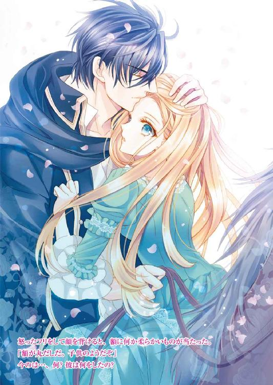
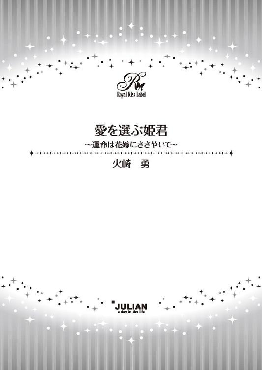
この物語はフィクションであり、実在の人物・団体・事件等とは、いっさい関係ありません。
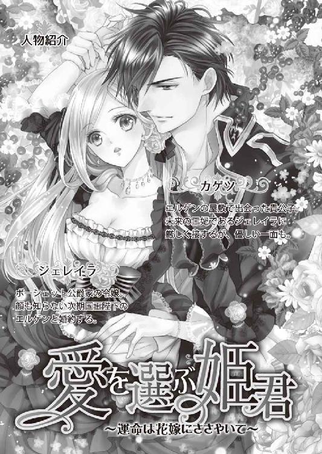
イラスト・氷堂れん
「私は男運が悪いのよ」
お父様の領地であるのんびりとした片田舎に建つデボンシュの館のテラスで午後のお茶をいただきながら、私は友人のミリアに言った。
「まあ、ジェレイラ、そんなこというものじゃなくてよ。仮にも公爵家の娘が『男運』だなんて、はしたない」
召し使いを下がらせて、二人だけで楽しむ午後のお茶。
侯爵令嬢のミリアは、お父様同士が友人ということもあって、小さな頃から親しくしている一番の友人だった。こんな田舎までわざわざ足を運んでくれる、本当の親友と言っていい。
彼女のために、バラの花びらを浮かべた紅茶と、すぐりの実を焼き込んだクッキー、特別なチョコレートを用意したのだ。
特別な、というのは、そのチョコレートはミリアの大好物で、彼女が今日来るとわかってわざわざ王都から取り寄せたものだからだ。
彼女を祝うために。
「はしたないと言うなら言い直すわ、結婚運がないって」
「おお、ジェレイラ」
金の縁取りのある白いカップを、彼女は優雅に持ち上げて口を付けた。
「いいのよ、あなたもわかってるでしょう。私は本当に運がないの。でも、あなたはその運を掴んだのよ。心からの祝福を贈るわ。婚約おめでとう。これで私の友人で婚約者がいないのは私だけね」
そう。今日、彼女はめでたく婚約が整ったことを報せに来てくれた。
ミリアには上にお姉様が三人もいらして、上から順番に行き先が決まるまで、彼女は我慢させられていた。
とても気立てがよく、ちょっと茶がかった金髪が、小リスのように可愛い女性だというのに縁談を受け入れることができなかったのだ。
でも、残り物には福があるというと聞こえは悪いが、待ったお陰で自分の好きな人と婚約することができた。
なので、私は親友として心から彼女を祝福していた。
「ジェレイラ、あなたは天使のように美しいわ。望めば誰でも...」
「望んでみんな失敗したのよ、知ってるでしょう？ いいえ、望んでいなかったものまで失敗したわ」
「それは...、あなたの言う通り運がなかっただけよ」
「ええ、そう。わかってるわ。だから私は結婚運が悪い、のよ」
その言葉が一番支障がないのだと気づいたのか、ミリアはやっと頷いた。
「そうね。公爵家の娘で、王家に繋がる血筋で、頭もよく、金の髪に青い瞳、お顔立ちも美しくて妙齢のあなたに夫どころか婚約者もいないのは、運が悪いのだと思うわ」
「同意してくれてありがとう。だから私は当分結婚を考えないことにしたの」
「ジェレイラ」
ミリアは睨んだけれど、私は気づかないフリをした。
彼女も、それ以上突っ込んでくることもない。
困った人だ、とは思っているだろう。でも、強く言えないのもわかっている。
だって、本当に私は男運が...、いえ、結婚運がないのだがら。
初めて結婚という言葉を意識したのは、まだ八歳の頃だった。
その年、叔母様が結婚なさって、私はその結婚式の荘厳さと、叔母様の美しい花嫁姿、夫となった新しい叔父様との仲睦まじさにすっかり感動してしまった。
いつか私もすてきな殿方と結婚したい。
二人で永遠の愛を誓いたいと思ったものだ。
そんな時、父に連れられて軍隊の謁見式を観覧し、その中で一際美しく剣を掲げた一人の騎士に一目惚れしてしまった。
見目がいいだけではない。
彼は、謁見の隊列が終わった後、自分の馬を撫で、褒めていた。
馬にまで気の回る優しい方なのだ、と思った。
その上、彼が御前試合で勇ましく戦うのを見たら、もう我慢ができなかった。
トコトコと柵を擦り抜けて試合が終わったばかりの彼のところに行き、こう言った。
「素敵な騎士様、どうか私を花嫁に選んでください」
もしも相手がたちの悪い人間だったら、その一言を盾に取り、八歳の娘を妻にして公爵家に婿入りしようと考えただろう。
けれど、私はかろうじて人を見る目があったらしい。
その騎士は、私の前に跪くとこう言った。
「光栄なお申し出、ありがとうございます。ですが、姫様はまだお若い。もっと年を重ねて、多くの殿方と出会って、それでも私をお好きだとおっしゃったら、お返事申し上げましょう。枝に実った果実の一つ目が甘かったからと言って、それが最高であるとは限りません。その上の枝には、もっと見事な果実が実っているかも知れませんよ」
そして剣を握っていた手をさしだし手の甲にキスを求めた。
「今は、勝利の祝福を私の右手に」
名前も知らない騎士だったけれど、本当に素晴らしい方だった。
私や私の家に恥をかかせることなく、断るのでも受け入れるのでもなく、その場を収めてくださったのだから。
彼の機転で、私は祝福の女神扱いされただけでその場から連れ出された。
家へ戻ってからお父様とお母様にたっぷりとお小言を戴いたのは言うまでもない。
そのことがあったせいではないだろうが、十歳になった年、お父様は私に婚約者を決めた。
どこの馬の骨ともわからぬ相手ではなく、伯爵家の次男だった。
私より十以上年上の。
彼は大変な良識家で、十歳の娘と結婚はできないと言って、家を出てしまった。
どうやら他にお相手の女性がいたらしい。
正式に発表する寸前だったので、大事にはならなかったが、お父様はさすがに十歳ではまずかったかと反省し、次の婚約者を見つけてくるまで二年の間を空けてくれた。
つまり、三人目のお相手は十二歳の時に引き合わされた伯爵家の跡取りだった。
彼は私とは今は婚約だけにして、成人してから結婚しましょうと言ってくれた。
けれど、その当時、我が国は戦争の真っ最中で、彼は家の名誉のために戦地へ赴き、そこで命を落とした。
翌年、その方の弟君との婚約が進められたが、何と彼も戦地で命を落とされた。
その頃は、貴族の子弟は名誉のために一度は戦場へ向かったのだ。
敵と戦う勇敢な騎士が、我が家の跡取りであるという称号を得るかのように。
もちろん、無事で戻られる方もいらした。
ご兄弟は不運だったのだ。
その伯爵家にはあと三人の息子がいたが、お父様が縁起が悪いと続く弟君達との婚約は考えなかった。
そして次が十八の時。
この方は今もよく覚えている。
金色の巻き毛で、大層美しい殿方だった。
家は侯爵家でうちとの釣り合いも取れ、優しくて明るくて、女性の扱いに長けていた。
長け過ぎて...、他所の女性にお子様を作り、囲っていることがわかり、こちらからお断りさせていただいた。
その次の方は婚約の話をしている最中にご病気になり、今も病床に伏されている。
まあそんな具合で、私の前に結婚の話が持ち込まれると、婚約すら整わないうちに全て話は消えてしまうのだ。時には相手と共に。
これだけ次々と破談になっていってもお父様達が私に結婚を整えようとやっきになっているには理由がある。
それは私のお母様が王家の人間だからだ。
女性の上、御降嫁なさったから、王位継承権はかなり後ろの方だけれど、私には王家の血が流れている。
縁起でもない話だけれど、もしも王家の者が次々と亡くなり私だけが残ったら、私が女王になる可能性もある。
そこまで突き詰めなくても、もしも私と結婚した殿方が謀反を起こし、王を斃して私との間の子供が正統な王だと名乗ったら。
その他にも悪いことに利用しようと思えば利用できる『血統』なのだ、私は。
さらにややこしいことに、今の王家には男子がいなかった。
先々代の王は、お母様のお父様で、既にお亡くなりになられた。
先代の王はお母様のお兄様で、戦争で亡くなられたが、伯父様にはお子様がいらっしゃらなかった。
そこで前に戻って先々代の王の弟、つまりお母様の叔父様に当たる方が、今王位についていらっしゃるが、奥様はいらっしゃらない。
つまり、王妃がいないのだ。
当然、王子も王女もいらっしゃらない。
この先どうなるかはわからないけれど、とにかく『次期国王』が空位のままなので、王家の血を引く者の責任と義務は、益々重たいものになっている。
だから、誰とでも結婚を許されるわけではなく、必ずちゃんとした方と結婚しなくてはならないのだ。
だから、悪い虫がつかないように、こんな田舎で生活しなくてはならないのだ。
そのことを考えると、ため息が出た。
もし、今素敵な殿方が現れても、『家を捨てるから結婚しましょう』とは言えない。
「ジェレイラ、そんなにため息ばかりついていると、幸せが逃げてしまうわよ」
ミリアの声に、私は意識を戻した。
過ぎた過去に浸っていても仕方がないわ。
「いつか必ず、あなたに似合う方が現れるわ。今までの失敗はそのための布石だったのよ」
親友はそう言って私の手を握ってくれた。
「そうね。こうなったら、五年でも十年でも待ってみるわ。お父様達が反対しない身分で、丈夫で健康で、戦場で命を落とさないくらいお強くて、外に女性を作らない誠実な方がいつか現れるのを」
「そうよ。こんな田舎に引き込んでないで、王都に出てくればいいのよ。私も結婚の準備で王都に向かうし、向こうで会いましょう。私の付き添いとして我が家に滞在すると言えば、きっとおじ様も許してくださるわ。アーサーのお友達ならちゃんとした方達だから、いくらでも紹介するし」
アーサーと言うのは、ミリアの夫になる方だ。
絵を描くのが好きなおとなしい方だけれど、外交官としての手腕のある立派な方。
以前紹介された時、何て二人はお似合いなんだろうと思ったものだ。羨ましいと思ったくらいに。
「そうね、アーサー様のお友達はいいかもね」
「でしょう？ 人生を諦めてはだめよ。あなたは幸福になる権利があるのよ」
「家のために」
「そういう言い方がだめなのよ。想像なさいな。王都へ行って、舞踏会へ出て、素敵な殿方と知り合って恋に落ちるの」
その夢なら、もう随分前に諦めたわ。
偶然知り合った方では、お父様が許してくれないだろうと。
でも、私は親友のために微笑んだ。
「ええ、そうね。夢見ることにするわ。ある日突然素敵な貴公子が私の前に跪いて花束を差し出してくださる夢を」
「きっとすぐに現実になるわ」
言いながら彼女が紅茶のカップを差し出すから、私はカチンとカップを当てた。
「ミリアの幸福な結婚を祝って」
ミリアは私の言葉を少しだけ修正して繰り返した。
「私達の、幸福な結婚を祈って」
親友には悪いけれど、やはり夢は見られなかった。
夢を見て、また破れるのが怖かったから。
そして数日後、私はやはり夢など見なくてよかったと思うことになってしまった...。
「あなたの婚約が整いました」
ミリアが帰って数日後、王都にお住まいになってらっしゃるお母様が馬車を飛ばして突然デボンシュの館を訪れ、私室へ私を呼び出すなり、いきなりそう言った。
お母様にこの言葉を言われるのは、もう何度目だろう。
けれど、今回のお母様はいつもと違ってらした。
頬は上気し、喜びで興奮なさっているのがよくわかる。
「相手はどちらの方ですの？」
なので、もういい加減結婚相手というものに興味を失いかけていた私も、思わず聞いてしまった。
「次期国王陛下よ」
「...次期？」
「そうよ。ジェレイラ。あなた王妃になるのよ」
聞き間違いかと思って問い返すと、お母様は私の手を取り、微笑んだ。
「...お母様、しっかりなさって。大叔父様にはお子様はいらっしゃらないわ。それとも、どなたか養子にお迎えになるの？」
だとしても、縁戚にそんな男子がいたかしら？
「いいえ、違うのよ。よくお聞きなさい」
お母様はコホンと咳払いをすると、気持ちを落ち着けて話し始めた。
「お前が今言ったように、陛下には奥様が、王妃様がいらっしゃいません。でもそれには理由があるの」
「王様になる予定ではなかったから、ご結婚なさらなかったのでしょう？」
私は以前家庭教師から聞いた話を口にした。
陛下は王弟殿下でいらっしゃる時、お子様を作られて、王子と王位を争うようなことになってはいけないと、ご遠慮なさった。
不幸が続き王位に就かれた時には既に随分お年を召していたので、今更の御成婚をためらっていらっしゃるのだと。
「いいえ、そうではないの。お前は小さいから知らされていなかったけれど、陛下には心に決められた方がいらっしゃったのよ」
それは驚きだった。
「まあ...。では、どうしてその方と結婚なさらなかったの？ 王になられた時に、その方を王妃としてお迎えにならなかったの？」
お母様の顔は俄に曇った。
「そこには色々と複雑な事情があったのよ。それに、その女性はもう亡くなっているの」
「亡くなられて？」
「ええ。ご病気で」
何てお可哀想な。
「けれど、陛下とその女性の間には、お子様がいらしたのよ、男の子が」
お母様のお父様の弟の息子...。何だかややこしいわ。
「その方は私の...叔父様...？」
「いいえ、従叔父ね。あなたの大叔父様の息子だから。いとこ違い、とも言うのかしら？」
よくわからないわ...。
「それで、その方は今まで王都で身分を隠して暮らしてらしたの。叔父様は...、いえ、陛下は、その女性と息子さんに十分な生活をさせてあげていたのよ。私は知らなかったけれど...」
ずっと、秘密の存在だったのね。お可哀想に。
「いいこと、ジェレイラ。ここから先は他の者に漏らしてはだめよ。特別な秘密なの」
お母様は声をひそめ、向かい合って座っていた椅子から身を乗り出した。
「実は...、陛下はご病気を召されました」
「......え？」
お母様の硬い表情を見なくても、その事実が重大なことだというのはわかった。
だって、一国の王が病気だなんて。
長く続いていた戦争が、ようやく終わりを迎えそうなのに。
「おそらく、長くはないだろうとのことです」
「そんな...！」
「シッ、大きな声を出さないで。このことはまだ公にはなっていないのだから」
「でも、いつまでも秘密にはしておけないのでは...？」
「ええ。ですから、息子を、エルゲン様を正式に王子として迎えることにしたのよ。実の息子、正式な王子。けれど...、正式な婚儀で設けた子供ではないことだけが、エルゲン様に影を落とすことになるでしょう」
「文句を言う人がいる、ということですわね？」
「ええ、そう。そこでお前よ」
「私？」
お母様はくるりと表情を変え、にっこりと笑った。
「お前は正統な王家の血筋。公爵家の令嬢。王位継承権だって持っているわ。その上、結婚できるくらいには血が離れている」
そこまで言われて、話の筋が読めた。
そのエルゲン様は、現王の実の息子でありながら、正式なお子としては認められない。その欠けた部分を、私との結婚で埋めようというのだわ。
「お前はエルゲン様と結婚するの。私の娘が王妃になるのよ」
お母様は夢見るような口調で言った。
「お父様も大喜びよ。お前はこれからすぐに荷物を纏めてエルゲン様のお城へ行くの」
「今すぐに？」
「とんでもない。ちゃんとした準備をさせるわ。未来の王妃ですもの。ただし、今はまだ公にはされないから、仰々しい輿入れの行列はなしよ。でも、ドレスは新調しなくちゃ。小物も新しいのを買いましょう」
「お母様」
「暫くは、婚約者としてエルゲン様のお城に逗留するの。そこでエルゲン様と親しくなって、時が来たら王位継承式と共に、結婚式よ」
お母様の喜びとは裏腹に、私の気持ちは沈んでいた。
ある意味、待ちに待った婚約と結婚。しかも相手は未来の王様。
申し分ないと言えば申し分のない話だろう。
けれど考えてもみて欲しい。
私の大叔父様の息子さんだなんて。
お父様と同じくらいの年じゃないのかしら？
しかも一度も会ったこともない人だし、王子としての教育を受けていたわけでもなさそう。
そんな人と結婚しろと言われて手放しで喜べるはずがない。
「ジェレイラ。あなたはどこに出しても恥ずかしくない娘よ。柔らかな金の髪、海のように深い青い瞳、ふっくらとした頬に桜貝のような唇。教養もあるし、健康だし。今まで結婚の話が上手くまとまらなかったのは運が悪かっただけ。いいえ、エルゲン様と結婚するためだったのよ」
優しく髪を撫で、うっとりとした目で私を見るお母様を見ていると、自分の沈んだ気持ちを表には出せない。
「そうですわね。きっと」
「お前が旅立つまで、私もここに滞在します。お父様もすぐに戻ってらっしゃるわ。お前を手放すのは寂しいけれど、娘の幸せのためなら我慢しなくちゃね」
まるで我が事のように喜ぶお母様を見て、私の方はどんどん冷めてしまう。
「お母様は、エルゲン様にお会いしたことがあるの？」
「いいえ。でも叔父様のご子息だもの、きっとご立派な方よ」
期待、しないでおこう。
陛下はそれなりの生活をご子息に与えたと言ったけれど、姪であるお母様にも会わせなかったというのなら、どの程度の生活だったのか。
「お母様、私、部屋に下がってもよろしい？ 突然のお話で少し驚いてしまって」
「ええそうね。私もとても驚いたもの。明日から忙しくなるから、今日はゆっくりなさい」
「はい。失礼いたします」
私はお母様に挨拶すると、部屋を下がった。
舞踏会で貴公子に出会う夢は、これで永遠に潰えたのだと思いながら...。
その日からの二週間は、目が回るほどの忙しさだった。
お母様が戻られた翌日、お父様がお戻りになり、肖像画を描くぞと言い出された。
お見合いのための絵姿をお渡しするために肖像画を描くのは普通のことだが、今回は輿入れが決定なので、戻ることのない娘の絵を残したいというお父様の望みだった。
でもそれが仕上がるまでゆっくりなどしていられない。
最後の婚約話がなくなってからずっとデボンシュの館で暮らしていたので、ここから持って行くものは多く、荷物を作るのも一苦労。
なのに、メイドを連れて行くことはできないと言われてしまった。
「どうして？ 輿入れなら侍女を連れて行くものではないですか？」
「ここで働いている者はメイドですからね、侍女としては扱えません。メイドは館の手伝いをするもので、あなたの世話をする侍女とは違います。あちらの城でちゃんとした侍女をご用意していただけるのよ」
お母様はそれもまた素晴らしいことのようにおっしゃったけれど、私には残念なこととしか思えなかった。
見知った人の一人もいない場所へ行くというのに、馴染みのメイドすら連れて行けないなんて。私は大抵のことが一人でできるのだから、侍女でもメイドでも気にしないのに。
更に、新しくドレスや靴を誂えるということで、一旦王都へ向かうことになった。
荷造りはメイド達に任せ、王都へ。
そこで陛下にお会いするのかと思ったら、ドレス作りに忙しく、王城へ上がることもできなかった。
「公式な発表ができるようになったら、特別なパーティを開いてくださるそうよ。だから今は我慢なさい。その時は、きっと素晴らしいパーティになるわ」
...お母様はどこまでも楽天的だわ。
せっかく王都に来たのに、ミリアにも会えず、お店を巡ったり、職人を呼び寄せたり。空いた時間にはお作法や、ダンスや、お勉強の先生に、最後のおさらいの授業を受ける。
自分が何を持って行って、何を置いていくのかもわからず。どこへ行って何をするのかの明確な説明もないまま、あれをして、これをしてと言われる。
公式ではないのに、何人かの方はお祝いを言いに現れ、お父様に「まだ正式ではない」と追い返されていた。
そして二週間後、ドレスの半分もできないうちに、今度は馬車に乗せられエルゲン様のお城へと向かうことになった。
「荷物は後から送らせる。先に城へ向かいなさい。ここにいては騒がしくてかなわん」
というお父様の一言で。
さて、いよいよ未来の夫と顔合わせだわ。
お年寄りかしら？ 若いのかしら？
太っているの？ 痩せているの？
王家の人間ならば、絶対に金の髪ね。でも瞳の色は？
戦争に行ってらっしゃるのかしら、前線に出ていらっしゃるの？ 指揮官として安全な場所にいらっしゃるの？
知りたいこと、知るべきことはあるはずなのに、お父様は何も教えてくださらなかった。
「エルゲン殿は、まだ戦場から戻られていない。城にはお前と召し使い達だけだ」
「私一人...？ お父様は？」
「今は色々と大変な時期だからな」
長く続いた戦争が、ようやく終わりを見せようとしているので、お父様を始め皆が忙しいのはわかっているけれど、相手もいない城にたった一人で乗り込まなければならないなんて。
嫌な予感がした。
婚約する、と言われて準備が整っても、滞りなくそれが行われるとは限らないことを、私はよく知っていたので。
でも、陛下がご子息を悪く扱っていないことだけは、城に到着してすぐにわかった。
王都から馬車で一日足らずのところにあるエルゲン様のお城は、敷地も広大で、塔のある石造りの立派な城に、果樹園と牧場が併設された立派な城だったから。
疲れ果てて城に到着した私を迎えたのは、主の留守を守っているというドライガー夫人。
「ようこそおこしくださいました、ジェレイラ様」
眼鏡の似合うしっかりとした感じの老婦人は、家庭教師のように厳しそうな方だった。
「ジェレイラ様は、エルゲン様の婚約者であられるとはいえ、まだご結婚前のお嬢様ですから、お部屋は西の棟へご用意させていただきました。エルゲン様は東の棟に居室がございますのでそちらには無闇に立ち入られませんように」
けれど、私のことは歓迎してくださっているようだった。
「ボーシェット公爵家のお嬢様をお迎えできるのは、大変光栄なことでございますわ。足りないものなどありましたら、どうぞ遠慮なくお申し付けくださいませ。敷地内はご自由に散策なさって結構でございます」
そう言って笑顔を見せてくれたから。
彼女に案内された私の部屋は、二間続きの大きな部屋で、既に幾つか運び込まれていた荷物を、メイド達が片していた。
「マリ」
夫人に呼ばれて、そのうちの一人がすぐに飛んでくる。
「はい、奥様」
珍しい黒い髪の、おとなしそうな女性。
「こちらがジェレイラ様付きの侍女のマリでございます」
「よろしくね、マリ」
「お美しいお嬢様にお仕えできて光栄です」
彼女はスカートの裾を摘まんで、深く頭を下げた。
「わからぬことは、彼女に尋ねてください」
「ありがとう。でも今は少し休みたいわ」
「では、お隣の部屋にお茶をお運びいたしましょう。マリ、お茶の支度を」
「はい」
「お前達、お嬢様がいらしたのにまだ荷物を片付けられないの？ さっさとなさい」
どうやら夫人が笑顔を向けるのは私だけらしい。
「かまわないわ、ドライガー夫人。私の荷物を解いてくれてるのだもの、急がず丁寧にしていただいた方が嬉しいわ」
「然様でございますか？」
「ええ。隣に移れば、物音も気にならないでしょう。皆さん、よろしくお願いね」
私はマリに連れられ隣の寝室へ向かった。
寝室とはいえ、机やテーブルも備えられた、これ一つでも客室となる広さの部屋だ。
夫人は、ここまでは付いて来なかった。
取り敢えずカウチに腰を下ろし、部屋を見回す。
珍しい、白いケシの花の意匠で統一された清楚なお部屋。
文机の上に、愛用のインク壷が置かれていることに少し安堵する。館からの荷物はもう到着しているのね。
家具も、華美ではないが立派なものばかり。
これを用意したのは誰かしら？
ドライガー夫人？ エルゲン様？
どちらにしても堅実な方のようね。
「ジェレイラ様、お茶でございます」
マリはすぐにお茶を持ってやってきた。
「ありがとう」
彼女の淹れてくれた香りのいいお茶をいただきながら、私は小さくため息をついた。
相手の方の顔も知らず、たった一人でここにきて、これで婚約が整ったと言われるなんて。
やっぱり私は結婚運から見放されているようだわ、と。
城での生活は、正直言って退屈なものだった。
見知らぬ土地で、訪ねてゆく友人もいない。
お相手の方と顔を合わせることもない。
城の中で親しくしているメイドもいない。
むしろ、皆、私が公爵家の令嬢ということで、敬い、距離を置いていた。
唯一側にいてくれるマリも、親しくなるどころかすぐに下がってしまう。
嫌われているのではないというのは感じていた。
仕事はきちんとこなしてくれるし、頼んだことにはすぐ応じてくれる。
けれど、酷く他所他所しい。
「私と話をしてはいけない、と言われているの？」
ある日思い切ってマリに尋ねると、彼女は遠慮がちにそんなことはないと答えた。
「私達、ここで働くために集められたのです。ですから、まだ不勉強なところが多くて...。もしお嬢様に粗相があってはなりませんので、差し出がましいことはするな、と」
「ドライガー夫人に言われたの？」
「はい。夫人は王都からいらした方ですので」
「あなたはこの近くに住んでいるの？」
「いいえ。もっと南の...、チチという村に住んでおりました」
「綺麗な黒髪ね。珍しいわ」
何げなく言ったつもりだったのに、彼女は一瞬ピクリを頬を引きつらせた。
「母が、この国の者ではないものですから」
「どちらの方？」
「...南の、デリアです」
「それは聞いてはいけないこと？ 私にはわからないのだけれど」
彼女の様子がおかしいので尋ねると、マリは言っていいものかどうか迷いながらポツポツと口を開いた。
「この国...、エジルはデリアとあまり国交がございません」
「ええ、そうね。それは知ってるわ。でもとてもエキゾチックで素敵な国だと聞いてるわ」
私がそういうと、彼女は今まで見せたことのないにっこりとした笑顔を見せた。
「はい。とても素敵な国です。でも、見知らぬ国の者は、あまり受け入れられないものです。この城に勤めている者は、両親のどちらか、もしくは両方がこの国の者ではない者が多いのです。ですから、仕事に就くことが難しかったのです。特に、北のトードの者は」
「トードって...、戦争している国じゃない」
「国は戦ってますが、個人が戦っているわけではありません。マーシュはとても優しい男性ですし」
その名前を出してから、彼女は少し顔を赤らめた。
きっとそのマーシュのことが好きなんだわ。
「エルゲン様は...、私はまだお会いしていないのですが、とても変わった方で、そういう者達を集めて仕事をくださいました。ここでの暮らしは元のものよりずっといいものです。いつかここからお暇を出されても、未来の国王陛下にお仕えしたという経歴は、次の仕事を見つけやすくしてくれるでしょう。ですから、失敗したくはないのです」
「私を怒らせて、クビになりたくない、ということね？」
「...はい」
申し訳なさそうに、彼女は頷いた。
それでわかったわ。
ドライガー夫人は王城が寄越したお目付けで、他所他所しいけれど勤勉な召し使い達は私に怯えているのではなく、彼女を意識しているのだ。
夫人にとって、私は彼女達を試す、いい来客だったはずだ。
だから私を歓迎したのだ。
召し使い達が、この客をどうもてなすか確認しよう、と。何でも申し付けてくれと言ったのは、そういうことだったのだろう。
「ここにはお友達もいなくて、寂しいと思っていたの。もしあなたが私の友人になってくださるなら、とても嬉しいわ」
「...でも私は」
「侍女で、外国の血が入っている？ それに何か問題があるのかしら？ ここは私の私室で、査定をする人の目は届かない。あなたにはきっと私の全てを見られてしまうから、つまらない隠し事をして仲たがいするよりも、お互い仲良くした方がいいと思うわ。それに、私デリアのことを余りよく知らないの。とても興味があるわ。教えてくれるととても嬉しいのだけれど」
「よろしいのですか？」
「何がだめなのかわからないから、いいのじゃなくて？」
マリはほっとして、少し泣きそうな表情を浮かべた。
「私...、公爵様のお嬢様がいらっしゃるとお聞きして、とても緊張してました。もし私をお気に召さなかったらどうしよう、と。でも、ジェレイラ様にお仕えできてよかったです」
「私も、マリが侍女でよかったわ」
これで、私はよき理解者を傍らに置くことができた。
でも、友人のように親しくなるには、まだまだ時間がかかるだろう。
それに、召し使い達には仕事がある。私の相手をしてくれと頼むわけにはいかない。
彼女達にとってここでの『仕事』が大切なものだと知ってしまったから、余計に。
そこで次に私は城の探索に出ることにした。
新しい場所に来たのだもの、見るものは沢山ある。
それに...、多分私の滞在は長いものになるだろう。
この城をよく知っておいた方がいいに違いない。
ドライガー夫人によると、敷地の境界には石壁があり、その内側ならばどこへ行っても危険はないとのことだった。
なので、朝食を終えると昼食まで、昼食を終えると夕食まで、私はあちこち歩き回った。
城は『Ｖ』字型の建物で、玄関ホールを中心に西と東に棟がある。
私の部屋のある西棟は、果樹園に続き、建物の裏側は広大な森。東の棟の方には馬場と牧場があった。
西の棟には書庫があり、東の棟にはホールがある。あとは双方に客室。
従者達の部屋は、牧場の近くに小さな館があるが、ドライガー夫人だけは城に住んでいる。
ドライガー夫人の夫は男爵で、王城で司書を務めていた。今は引退してこの城の管理を任されているけれど、今はまた仕事で城に戻っている。それが終われば、戻ってくるだろう。
マリが言うには、建物は、元々王家の保養地として使われていたが、王族が少なくなり、戦争が始まってからはずっと住む者がいなかったらしい。
マリは、私と同じくらい知らないことが多かったが、私が調べて欲しいと言ったことはすぐに調べてくれた。
ここは、エルゲン様が王になるまでの仮住まいで、王になれば王城に移る。だから使用人もさほど多くはない。
近隣の貴族達は王の親しい人の領地で、石壁の外に出ても多分危険はないだろうけれど、公爵家の令嬢で、未来の王妃様にはどうだかわからない。
西の棟で働く者は新しく雇われた者が多いが、東の棟で働く者は以前からエルゲン様に仕えていた者もいる。
近くには大きな街があり、自分が望めば馬車を出してくれるらしい。従者付きで。
そんなようなことを。
そして、私がこの城に来てから、瞬く間に一週間が過ぎた...。
その日、いつものように朝食を終えると、私はすぐに庭へ出た。
昼食までの時間を潰すために。
そう、『時間を潰す』のだ。
ここでは、やりたいこともやらなければならないこともないので、長い時間に何をして過ごせばいいのかわからなかったのだ。
「取り敢えず、今日は馬屋にでも行こうかしら？」
馬屋には犬がいると聞いていたのだけれど、先日覗いた時には見つけることができなかった。今日は奥まで入ってちゃんと探してみよう。
人懐こい犬ならば、きっとこの退屈を紛らわせてくれるだろう。
建物の前から、馬屋へ続く小道を進む。
城は本当に人が少なくて、行き交う者もいなかった。庭師の姿もない。
「言葉を忘れてしまいそうだわ...」
召し使いに命令したり、マリやドライガー夫人と会話ぐらいはしたけれど、友人との会話というほどではない。
もう何日笑っていないかしら？
何か刺激的なことがあればいいのに。
...あまり危険ではない。
リンゴの並木を抜けると、馬小屋はすぐそこだった。
馬は小屋に半分ぐらいいたけれど、懐かせるにはちょっと大きい。
犬を探して裏手に回ると...、そこに人の姿があった。
背の高い、真っ黒な髪の男性が、馬の世話をしている。
でも、彼が馬丁ではないことはすぐにわかった。
だって、その人は泥だらけだったけど、とても綺麗な顔立ちをしていたから。そうね、体格もいいし、清潔な服装になったら、きっと素敵な貴公子になるでしょう。
彼は気配で私に気づき、くるりと振り向いた。
「...馬に用が？」
よく通る声。
「いいえ」
「では何をしに？」
「何も。することがないので」
彼は自分の泥だらけのシャツに気づいた。
「失礼、このような格好で」
「いいえ、お仕事をしているのだもの、汚れるのは当然でしょう？」
そう答えると、彼は近くにあった木の切り株を示した。
「サテン張りのソファはないが、よかったら座るといい。そのドレスで座れるなら、だが」
「もちろん座れるわ。立っているより楽だもの」
私は示された切り株に腰を下ろした。
彼は汚れたシャツを脱ぎ、近くにかけてあった上着を纏った。軍服のようだけれど、それもちょっと汚れている。
馬はとても馴れているのか、彼が離れてもそのままそこにいた。
「お前は誰だ？」
「こんなところで礼儀を訴えても仕方がないけれど、人に名前を尋ねる時にはご自分の名前を名乗ってからにしていただきたいわ」
「俺はカゲツだ」
「珍しい名前ね。黒髪だから、デリアの方？」
「だったらどうする？」
「別に、どうもしないわ。ただ私の侍女と出身が同じだと思うだけ」
「侍女？ それで？ お前は？」
「私はジェレイラ。どうやらこの城の主の妻になるらしいわ」
「エルゲンの妻なら、俺に非礼を詫びろと言うんじゃないのか？」
「何故？ あなたがした非礼は、名乗らずに私の名前を訊いたことぐらいで、そのことはすぐに訂正なさったわ」
彼は笑いながら近づき、私の正面に立った。
「俺が怖くないのか？ 初めて会った男なのに」
「ドライガー夫人が、敷地の中は安全だと言ったわ。それに、そこで馬を手入れしているなら、あなたはここで雇われているんでしょう？ だったら私に危害を加えるとは思えないわ」
「では隣に座っても？」
「この切り株は二人が座るには小さいと思うけど？」
「俺はここでいい」
カゲツは切り株から少し離れた場所に腰を下ろした。
「エルゲンの妻になる女性は公爵家の令嬢だと聞いていたが、お前はあまり気取ったところがないな。『お前』と呼ばれても怒らない」
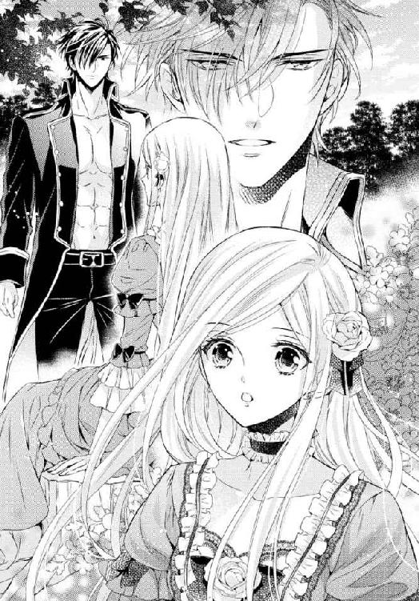
近くで見ると、彼は最初に見た時よりハンサムなことがわかった。
真っ黒な瞳は光の加減で深い青を宿す魅力的な瞳だったし、その上にある眉はきりっとしている。通った鼻筋に笑みを浮かべたちょっと不遜な口元。
どこかで見たことがあるような気がするのは、彼が整った顔をしているからね。物語の挿絵に描かれるような王子...、いえ、騎士のような顔立ちだからだわ。
「俺がこういう口をきいても無礼者とは言わないのか？」
「言わないわ。むしろ嬉しいぐらい」
「何故？」
「だって、私にこんなに気軽に話しかけてくれる人はここにはいないのだもの。みんな堅苦しくて」
「だがお前が本当にジェレイラなら、公爵家の令嬢で、未来の王妃だろう？」
その言葉に、私はため息をついた。
「ここを出て、王城へでも行ったら、『そういうもの』になるでしょうね。でも、ここでの私は、することもなく、楽しい会話ができるお友達もいない、ただの娘よ」
「することがない？」
彼は問いかけた。
「ここで私に何をしろ、と？ 馬に乗る？」
彼はあごに手を当て、考えるような仕草を見せた。
「では、幾つか質問していいか？」
「どうぞ。会話が楽しめるのなら」
「デリアを知っているか？」
「少しは」
「どんな国だと思っている？」
「どんな？ ...王家の代わりに神殿があって、神殿が国を治めている国。黒髪の人が多くて、いい馬を産出するわ」
「それから？」
「それからって...」
あと何を知っていたかしら？ 南のデリアとはそんなに親交がなかったから、あまり詳しいことは知らないわ。
「神殿の運営は誰がしている？ 議会は？ 交易のカザン船とは何だ？」
「神殿の運営は...、神官がしているのではないの？ 議会って神官の集まりのこと？ カザン船って...」
彼は私の答えを聞いて鼻先で笑った。
...これは失礼だわ。
「することがないって？ 可哀想に」
「あなたの態度は可哀想と思っているようには見えないわ」
「お前が可哀想なんじゃない。お前を王妃に戴かなくてはならない国民が、だ」
「何ですって？」
「王妃や国王は飾りものか？ 隣国のことすら知らない無知な女だとは思わなかった」
「私は突然王妃になれと言われたのよ」
「今はなることがわかってるんだろう？ なのに何もすることがない？ 空っぽの頭に王冠を載せようというのか」
失礼だわ。
失礼だけど...、それを咎めることはできなかった。
彼の言うことが正しいから。
「エルゲンはとんだ見込み違いをしたものだ。お前のような娘を娶ることにするなんて」
「知らないわ。エルゲン様なんて、一度も会ったことはないもの。挨拶一つしていないのよ。それに、彼が私と結婚するのは『私』だからじゃないわ、正統な王家の血が欲しいだけ」
「それが空っぽ頭の理由になると？」
勢いこんで反論した私に、彼は一言だけ返した。
「...ならないわ」
悔しいくらいに、彼は正しい。
「未来の王妃なら会話を楽しめるかと思ったが、時間の無駄だ。これなら馬の手当を続けていた方がマシだ」
言い捨てて、彼は立ち上がった。
「待ちなさい、カゲツ」
「何です？ お嬢様」
からかうような口調。
私は怒って、立ち上がった。
「明日まで、今の返事を待ってなさい」
彼に怒ったのではない。自分に、だ。
「明日？」
「あなたの質問の答えを、ちゃんと全部答えてみせるわ」
彼は少し驚いた顔を見せた。
「調べるつもりか？」
「ええ。あなたに腹が立ったからじゃないわ。私が自分で知らないことを恥じたからよ。自分のために、絶対きちんと答えてみせるわ」
カゲツは一瞬ポカンとして、次に笑い出した。
「いいだろう。それじゃ、明日もこの時間にここへ来るといい。相手をしてやる。ただし、俺とここで会ったことは他人には喋らないことだな」
「わかってるわ。未来の女主人にそんな口をきいたらあなたは怒られるんでしょう？」
「まあそうだ」
「明日、またここで会いましょう」
「楽しみにしよう、ジェレイラ」
彼は私を呼び捨てにしたが、そのことも咎めなかった。
自分でも、今の自分は『様』と付けてもらえるような人間ではないと思ったから。
私はそのまま彼に背を向け、まっすぐに城へ戻った。
いつもなら昼食まで散策を楽しむ私が戻ってきたことで、マリは驚いたが、私は彼女を捕まえてカゲツの質問をぶつけた。
「デリアは神殿が治める国よね？」
「は...、はい」
突然の問いに、マリが目を丸くする。
でも私は続けた。
「神殿の運営は誰がしているの？」
「神官と議会が...」
「議会って何？」
「領主達の集まりです。神の意思は神官が、民の意思は領主が代弁してると...」
「交易のルートやカザン船って何？」
「エジルとデリアに流れる川を行き来する船のことです。エジルではリュート川と呼ばれておりますが、デリアではカザン川と呼ばれているので...」
リュート川を使った交易船のことは知っていた。けれどその川がデリアでは別の名前で呼ばれていることは知らなかった。
「ジェレイラ様？」
マリが迷いなく答えたところを見ると、デリアの人間ならば皆知っていることなのだろう。
いいえ、マリはこの国に住んでいたはず。だとしたら、『普通ならば誰もが知っている』ことなのだわ。
この国の貴族の娘として、公爵家の令嬢として、知らなければならないこと、たしなみとして覚えなければならないことは全て知っているつもりだった。
リュート川に南のデリアとの交易船が通っていることだって、知っていた。
でも、私は王妃になるのだ。
もしデリアの人が来て、カザン川のことを口にした時、『それはどこを通っている川ですの？』と返したら、きっと侮辱されたと思うだろう。でなければ、さっきのカゲツのように私の無知を笑うかも。
「あの...、ジェレイラ様？ どうかなさったのですか？」
「いいえ。いいの。突然ごめんなさい」
「いえ。お茶でもお持ちいたしましょうか？」
「...ええ。書庫に運んで。私、昼まで少し勉強するから」
「かしこまりました」
カゲツが何者なのかはわからない。
でも彼が口にしたことが正しいことはわかった。
彼を、一目見て素敵な人だと思った。
容姿が整っているというだけではない。私が何者だかわかっても、態度を変えたりもしなかったし、しっかりとした口調で語る姿も私の近くにはいない人だった。
それだけに、彼に自ら恥だと思うことを指摘されてしまったのは、許せなかった。
突然結婚を決められたことは事実だけれど、カゲツの言う通り、王妃になると決まってから今日まで、ひと月近く日が過ぎている。
なのに私はその間『王妃になる』という意味を全く考えていなかった。
「明日までに、全部調べてみせるわ。お勉強は嫌いじゃないのよ」
幸いにも、この城の書庫は充実していて、デリアに関する書物はいくらでも見つけることができた。
明日までに、覚えられるだけのことを覚えなくちゃ。
彼に、国民が可哀想などと言わせないために。
その日は、夜眠るまで本を読み続けた。
デリアは、隣国とはいえこのエジルとは全く違う文化を持った国で、私にとっては黒い髪と黒い瞳を持つ人々が住むエキゾチックな異国だった。
我が国が北のトードとの戦争を始めた時、デリアが食料を確保してくれていたので戦いを続けることができたのだということは知っていたけれど、どれほどの交易があるかまでは知ろうとしていなかった。
自分は将来どこかの貴族の奥方になるものだと思っていたので、外国のことまで詳しく知る必要などないと思っていたのだ。
あまり知り過ぎて、うるさい女だと思われてはいけませんというお母様の言葉に従って、教養の範疇を超える知識を求めなかった。
なので、本には私の知らないことが沢山載っていた。
デリアの最高機関は神殿。
これはよく知っていた。風の神を奉っているが、これは海を渡ってもっと南の国々との交易を行っているデリアにとって、船を動かすための風が大切だからだ。
我が国の王家に当たるのが、最高神官。
世襲制ではあるが、傑出した人物が現れた場合は、その人物を養子にとって神官を継がせる。血の繋がりよりも才能を重視するわけだが、最高神官の家は、やはり王家と言ってもいいだろう。
私は知らなかったが、その下にあるのが臣民議会。
これは神官職にない人々の集まりで、各地の領主が席を持つ。
十年に一度入れ替えが行われ、この議会の決定と神官達の意見をまとめるのが、最高神官。
他にも神の声を聞く巫女がいるが、巫女に権力はない。
宗教職が濃いわけではなく、生活自体は我が国と変わらない。
穏やかな気候のおかげで農作物は豊富で、海を越えて他国との交易も盛ん。
内陸の我が国とは、馬車もそうだが、川を使って交易をしている。
これがカザン船。
「議会の選出はどのようにして行われる？」
「領主達の投票よ。無記名で、議会に相応しいと思う者の名前を書いて選ぶの」
「特産品は？」
「果樹が主なものだけれど、我が国には農作物も提供してくれるわ。それと馬。軍馬の半分はデリアの馬よ」
「巫女はどのようにして選ばれる？」
「神官の血縁の者が多いけれど、考査を経て選ばれる者もいるわ。デリアの女性にとっては、それが最高の地位ね。我が国の貴族、しかも公爵や公爵家に当たるわ」
翌日、約束通り馬屋へ向かった私は、昨日と違って真っ白なシャツを纏ったカゲツの質問に自信を持って答えた。
私は切り株の上に、彼はその隣に座って、質疑応答を続ける。
「エジルで、多くのデリア人が従事している仕事は？」
「商人と馬丁。貴族という称号はないけれど、南には大きな屋敷を構えている人もいるわ」
「一晩でよく覚えたな」
「当然よ」
何でも訊いて、という顔で私は胸を張った。
でもカゲツは意地悪だった。
「ではトードとエジルの戦争の原因は？」
私がせっかくデリアについて調べたのに、質問を変えるなんて。
「確か...、鉱山の権利を争って...？」
「三峰山脈とは？」
「戦争の原因になった場所よ。三つの高い山を持つ山脈で、鉱山があるの。一番北の山はトードが、南の山はエジルが権利を持っていたけれど、真ん中の山ははっきりとはしなかった。それでも、昔はそこに鉱脈がないと思われていたから争いは起きなかったのに、大きな鉱脈が見つかった途端、トードが権利を主張して攻めてきたのよ」
「ほう、それはよく知っているな」
彼は感心したように言った。
「三番目と四番目の婚約者が戦争に行ったので、当時教えられたの」
「...三番目と四番目？」
不思議そうに彼が聞き返すから、私は苦笑した。
「婚約させられるのは、これが初めてではないのよ」
当然、彼は驚いた顔をした。
そうよね。未来の王の妻になる女が何度も婚約をしたなんて。
「何故以前の婚約者と結婚しなかったんだ？」
「魅力がなかったのよ」
ごまかすつもりで言ったのだけれど、彼は即座に否定した。
「そんなことはないだろう。お前は美しい」
真顔で言われて、頬を染める。
彼の言葉はお世辞には聞こえなかったし、こんな素敵な人に、こんなに近くで褒められて、照れてしまったのだ。
「どうして、結婚しなかった？」
もう一度問われたので、私は今までのことをかいつまんで説明した。
生まれて初めて求婚したこと。それで心配になったのか、変な人間と結婚しないように親が選んだ人と婚約させられたこと。
それがさまざまな理由で、ことごとく失敗に終わったことを。
彼は私の言葉を黙って聞いていた。何故か、とても真剣な顔で。
「自分の血のことは、子供の頃から言われていたからよくわかっていたわ。確かに、名前も知らない騎士に結婚してと言い出すような娘では心配だったのでしょうね」
「自分から求婚したその男は、どこがよかったんだ？」
「優しい人だと思ったからよ」
「だが名前も知らなかったんだろう？」
「ええ。今では顔も思い出せないわ。でもその人は、御前試合に出た時、自分の馬を労っていたの。馬を道具のように扱うのではなく、自分の戦友のように扱っていたわ。その人にとって、馬も人も関係なくて、自分と共にある者には相応の愛情を返すのだとわかったら、こんな人を夫にしたいと思ったの。...ふられてしまったけれど」
そういえば、この人も昨日見た時に馬の世話をしていたわ。
きっとそれが仕事なのだろうけれど。
「その男も後悔しているだろう」
「正しい人だったのよ。十に満たない子供の言葉を利用しない。他の人達も...、中には不品行な人もいたけれど、大抵はいい方だったわ」
過ぎたことだから、悪い思い出にはしたくない。どれもこれも。
「その男達と結婚しなかったお陰で王妃になれて嬉しいか？」
「さあ？」
首をひねってから、慌てて付け足した。
「どうでもいいというわけじゃないのよ。あなたが言う通り、王妃なるのは大切で、大変なことだわ。でも、結婚という点に於いては、もうあまり期待をしないことにしているの」
「何故？」
「何故って...、今まで結婚できなかったからよ。それに今度のお相手はお父様と同じくらいの方だし」
彼はちょっと驚いた顔をした。
「誰がそう言った？」
「誰も。誰も何も教えてくれないわ。不自然なほど。でもわかってることはあるわ」
「何だ？」
「髪は金髪で、お年はお父様と同じくらい。運がよければもう少し若くて、悪ければお父様より年上ね」
「誰にも聞かされていないのに、何故そう思う」
「だって、王家の人間は皆金髪ですもの。それに、お母様の叔父様の息子さんよ？ お父様達と同じくらいに決まっているでしょう？」
「なるほどな」
どうして、私はこの人にこんなことまで喋っているのかしら。
彼は友人でも何でもないのに。
...きっと、彼が私を壊れ物のように扱わないからね。
城の他の人達のように距離を置いて、私の言動に怯えるような態度を見せないからだわ。
「そうだわ。あなたはここで働いているのだもの、エルゲン様を知ってるわよね？ どんな方だか教えてくれない？」
「それは無理だ。皆が教えないなら、俺も教えられない」
「...そうね。あなたは使用人だものね」
「だが、髪は金色で目は青い。年よりは若く見られることも多い」
「それならまあいいわ」
「本当に結婚に興味がないんだな」
言われて、また私は苦笑した。
「興味がないわけじゃないわ。なくなってしまったのよ」
「どうして？」
私は彼から目を逸らして、遠くを見た。
「何も知らない子供の時ならいざ知らず、今は自分の結婚にどんな意味があるか知っているもの。結婚は務めよ。ちゃんとお仕事のできる相手であればいいわ。そうね、あと、長生きしてくれて、他所に女性を作らないで、私と結婚してくれれば」
そしてため息をついた。
親友の、ミリアのことを思い出したからだ。
婚約が整う前にも、彼女は私を訪ねて、夫となる人との楽しい時間の話をしてくれた。
それは本当に羨ましい話だった。
一緒に食事をしたり、遠乗りをしたり、パーティに出たり、ピクニックに行ったり。
私は、何度も婚約したけれど、一度もそんなことはしなかった。
「もし...、もし好きな人と結婚するのだったら、二人でどこかに出掛けたりして楽しむことも考えたのでしょうね。でもきっと無理だからいいの」
「何故無理だ？」
「王様になる人よ？ 一緒に街を歩きましょうなんて言えないわ」
「街に行きたいのか？」
「それは...、まあ...。行ったことがないし...」
公爵家の娘だもの。
所領の森の散策はできても、街を歩くなんてことはできない。
だから憧れではあった。
「街を歩いたことがないのか」
「あなたはあるの？」
私はカゲツを振り向いた。
思っていたよりも顔が近くなっていたので、慌てて体を引くと、バランスを崩して切り株から落ちそうになる。
「危ない」
彼の長い腕が、私を支えるために背中に回る。
家族以外の男の人に抱かれて、私は顔を真っ赤にした。
「離して...」
「転げ落ちるぞ」
「もう大丈夫よ。近すぎるわ」
「何度も婚約して、男には慣れてるんじゃないのか？」
そのセリフに、私はキッと彼を睨んだ。
「私を身持ちの悪い女のように言わないで。さっきも言ったでしょう。婚約したんじゃなくて、婚約しようとしただけよ。それにこんなふうに男の人に腕を回されたことなどないわ！」
「...悪かった。今のは失言だ」
カゲツは私が倒れないのを確認してから、両手を上げ、身体を離した。
「お前は、不運だったな」
しみじみと言われて切なくなる。
「そんな言い方をしないで。私は不幸じゃないわ。エルゲン様とはよい夫婦になれるかもしれないじゃない」
「年が離れていても？」
ああ、やっぱりお年を召した方なのね。
「そうしたらきっと優しいわ。お父様のように」
私はそのまま黙って自分の足先を見つめた。
いいのよ。
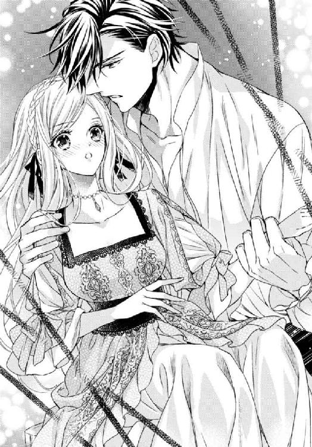
何度も諦めたことだもの。
自分は、他の娘達とは違う。
ミリアを羨んでも、彼女と同じことができるわけじゃない。
お父様が私に早いうちに婚約者を探してきたのは、きっと私のためでもあったのだわ。この血のせいで、政治的に嫌な男に嫁がせるくらいなら、何とか私に似合いそうな殿方と妻合わせようと。
時々人を見る目がなかったとしても、これまでの人達はちゃんと若くて、肖像画を見る限り見目のいい方ばかりだった。
家同士のお付き合いもあって、私がいつでも家に遊びに戻れるような嫁ぎ先だった。
それが全部失敗に終わって、結局はうんと年上で、実家にもそうそう戻ることのできない方のところへ嫁ぐことになるけれど、まだきっと不幸ではないわ。
「ジェレイラ。明日、昼食が終わったら、ここへ来い」
「どうして？ また勉強をさせるつもり？」
「俺はお前の夫ではないが、さっきの失言の詫びに、街へ連れて行ってやろう」
「......え？」
一瞬耳を疑った。
「馬車を出してくれるということ？」
「いいや。お忍びで、街を歩こう」
「お忍び？ 従者も連れずに？」
「警護の兵に守られて行きたいなら、ドライガー夫人に頼めばすぐに連れて行ってくれるだろうから今の誘いはナシだ」
「でも、あなたの仕事は？ カゲツは馬の世話をしているのでしょう？」
「馬は暫く休ませるつもりだった。俺も街で買いたいものがあるしな」
街を歩く。
供も連れずに。
それは何て素敵なことかしら。
でも...。
私はカゲツを見た。
「私を連れ出したのがわかったら、あなたは罰を受けるわ」
「そんなバレるようなことはしないさ」
「私をどこかへ売り飛ばしたりしたら...」
「未来の王妃を？ 国中から追っ手がかかるようなことはしない。面倒だ」
面倒という問題ではないと思うのだけど。
「どうする？」
ここはエルゲン様の城の敷地内にある馬屋で、ドライガー夫人は敷地の内側に危険はないと断言した。
エルゲン様の持ち馬の世話をしていたのだから、カゲツはこの家の従者で、危険な人物ではないだろう。
このままエルゲン様と結婚して、王妃になったら、絶対にお忍びで街を歩くなんてことはできないに決まっている。
「...行って...、あげてもいいわ」
「『あげてもいい』？」
意地悪く聞き返されて、もう一度言い直す。
「...行きたい」
返事を聞いたカゲツの顔が、ドキッとするほど全開で笑う。
「正直でいい」
彼は手を伸ばして、子供にするように私の頭をぐしゃぐしゃっと撫でた。
「では明日、昼食が終わったらなるべくおとなしいドレスでここに来い」
「本当に気づかれないかしら？」
「大丈夫だ。任せておけ」
黒い瞳は、不思議な安心感を与えた。
この人なら、信じてもいい、と。
それはとても意志の強い人の輝きを持っていたから...。
自分でも、おかしいことだと思う。
してはいけないことをしているとも思う。
でも、やはり中止にしましょうという考えはなかった。
これはきっと最初で最後のお忍びだとわかっていたから。
彼に誘われた時に思ったように、今まで私は公爵家の娘として大切に育てられた。デボンシュの館で自由に振る舞えたのは、そこがお父様の領地で、皆が私を誰だか知っていたからと、あそこが田舎だったからだ。
王都に住んでいた時には、屋敷の外で一人になれたことなどなかった。
エルゲン様が戻られたら、きっと今まで以上に束縛されるだろう。
未来の王妃になるというのはそういうことだと知っている。
カゲツは、私の婚約者ではない。恋人でもない。
でもとても素敵な方で、あの少しぞんざいな口のききかたは、魅力的だった。私を普通の娘として扱ってくれているようで。
この城にいることに退屈していたということを除いても、その彼と二人で、うるさい護衛も付けずに街を歩くというのは、抗い難い誘惑だった。
朝食を終えてから、午前中はずっと書庫で本を読んだ。
デリアのことだけではなく、もっと色んなことを知っておいた方がいいと思ったからというのもあるが、部屋でソワソワしているところを誰かに怪しまれては大変だから。
昼食の時、ドライガー夫人から声を掛けられた時には、心臓が口から出るかと思った。
「書庫をお使いになってらっしゃるそうで」
「...ええ。少し国の内外のことを勉強しようかと思って。時間はたっぷりあるから」
「大変よろしいことですわ。さすがボーシェット公爵家のお嬢様です」
「あの...、でも、午後は森へ行こうと思うの。敷地の中は安全なのでしょう？」
「もちろんでございます」
「敷地の中でお会いする方も、皆ちゃんとした方達なのでしょう？」
問いかけると、彼女は当然だという顔で胸を張った。
「たとえ森番に至るまで、この城で働く者はきちんとした者です。外国の血の混じった者もおりますが、信用のおける者達ばかりですからご安心を」
その言葉に、彼女がマリ達が思うよりも彼女達を信頼していることがわかって、少しほっとした。
この言葉は、後でマリに教えてあげなくては。
「ただ、日が暮れるまでにはお戻りください。寒くなりますので」
「ええ」
食後、部屋へ戻ると、私はマリに森を歩くから汚れてもいい、動きやすいドレスを出してと頼んだ。
彼女は少し悩み、胸元に大きなリボンのある若草色の一枚を取り出した。
「このリボンを取ってしまえば、よろしいですわ。戻られたら、また付け直しますから」
と言って、ハサミでそのリボンを外してくれた。
「森へいらっしゃるなら、ヒールのついた靴ではなく、ブーツの方がよろしいですよ」
はからずも、望んだ通りの服装になり、部屋を出る。
急いでいると悟られないように、注意していつもの道を進む。
馬屋に、カゲツはいるかしら？
やっぱり連れて行けないと言われるかもしれない。他の人が一緒にいて、中止になるかもしれない。
私は運がよくないから、そういうこともあるかも。
期待しないようにしないと。
期待すると、だめだった時に悲しいから。
馬屋に到着すると、そこにカゲツはいなかった。
馬屋の中にいるのかしらと中を覗き込んでも、人の姿がない。
やっぱり、だめになったんだわと項垂れた時、背後から大きなショールを被せられた。
「な...、何...？」
そして逞しい腕が、ショールの上から私を抱き締める。
「これを被ってろ。お前の金髪は美し過ぎて目立つ」
カゲツの声。
「う...、腕を離して。こういうことはしないでと言ったでしょう」
ドキドキする。
「馬に乗せるためだ」
ドキドキする。
「暴れるなよ」
頭からショールを被せられたまま、彼に抱き上げられ、馬屋から外へ連れ出される。心臓がうるさいほど鳴り響いていた。
顔も熱くなっていた。
「自分で乗れます。下ろして」
男の人に抱き締められるなんて、抱き上げられるなんて。
カゲツは私をひらりと投げるように、馬の鞍の上へおろした。しかも前後が逆。後ろ向きになっている。
「馬には乗れるのか」
「乗馬はたしなんでます」
「貴族の娘だな。前に詰めろ、後ろに乗る」
「後ろに乗るって...、一緒に？」
「当然だ」
「当然て...、聞いてないわ」
異議を唱えている間に、彼が私の目の前に跨がる。
カゲツは、大きな黒いマントを羽織っていた。
そのマントで、私をすっぽりと包み込む。私は後ろを向いていたので、目の前にはカゲツの胸がある。
「顔を出すなよ。これで門番の前を駆け抜けるから」
「無理よ、きっとバレてしまうわ」
「大丈夫だ、お前は小さいからな」
「そんなに小さくは...、きゃっ...！」
まだ話している途中なのに、彼が馬を走らせる。
「声を上げるな、しっかり掴まってろ」
無理よ、無理よ、無理よ。
「スカートを引っ張れ。裾から見える」
「足が見えてしまうわ、はしたない」
「では足も持ち上げて丸くなれ」
「無理よ！」
馬が上下に動くから、落ちないようにしっかりとカゲツの身体にしがみつく。
この私が、自ら殿方の身体にしがみつくなんて。
「黙っていろ。門だ」
どこを走っているのか、全くわからなかった。
しがみついた彼の身体の温かさが伝わって、顔の熱が取れない。
足を丸めろですって？ スカートを引っ張れですって？ 何てこと。
門を出たの？ どこを走っているの？
本当にこのままで大丈夫なの？
声を上げたら気づかれると思うから、何も言えずに彼の服をぎゅっと握る。
そのまま暫く走ると、突然彼は馬を止めた。
「もういいぞ。息苦しかっただろう」
私を包んでいたマントが開かれ、光が差し込む。
「もう街に着いたの？」
「まだだ。だが、人に見られる心配のないところまで出た」
顔を上げ、辺りを見回すと、そこは何もない馬車道だった。
「前を向いていいぞ」
「鞍の上で体勢を変えるなんて出来ません」
「ではこのままでいろ」
「カゲツ！」
また馬が動くから、ぎゅっと彼にしがみつく。
「酷いわ。どうしてちゃんと説明してくれなかったの？ こんな乱暴な乗り方をするなんて」
「お忍びだと言っただろう」
「それにしても、乱暴過ぎるわ」
「時間がなかったんだ。少し急ぎの仕事が入ってな。早く行って、早く帰らないと」
私があまり必死にしがみついているからか、彼は馬の速度を少しおとしてくれた。
「逆さまで馬に乗るなんて初めてよ」
「帰りはちゃんと前を向いて乗せてやる。人目も少なくなるだろうから」
頭の上、彼の笑い声が聞こえたので、つい顔を上げると、すぐ目の前に彼の顔。
「髪がくしゃくしゃだな」
黒い瞳が近すぎて、目が合わせられない。
「あなたが乱暴にするから...」
怒ったフリをして顔を背けると、額に何か柔らかいものが当たった。
「額が丸だしだ。子供のようだぞ」
今のは...、何？
彼は何をしたの？
「街が近くなったらおろしてやる。それまで今のようにしがみついてろ」
唇...、だった気がする。お母様がくれるお休みのキスと同じ感触だった。
では私は今彼にキスされたの？
いいえ、そうだとしても、それはきっと子供に対するようなものだったに違いないわ。彼が『子供のようだ』と言ったもの。
それでも、私の胸の高鳴りは抑えられなかった。
誰かに見咎められたらという不安と、初めて男の人にしがみついたという恥じらいと、後ろ向に馬に乗ったという恐怖とがまざって、頭がくらくらしそう。
「怖いか？」
彼が思いも掛けぬ優しい声で訊くから、本当は怖かったのに、私は首を振った。
「楽しいわ。みんな初めてのことばかりで」
それは、嘘でもなかったから。
「お前は、度胸のある娘だ」
笑って言うその言葉が、ほんの少し嬉しい褒め言葉のように聞こえたから。
舞踏会、園遊会、パーティ。
人の多く集まる場所には何度も行った。
王都へ行った時には街にも出た。
エルゲン様のお城へ来るまでにも、馬車で幾つかの街も通った。
けれど、それは目的を持って集まった人の群れに足を踏み入れるだけ、遠くから眺めるだけ、『行ってもいい場所』へ向かうだけだった。
でも街。
どこへ行ってもいい場所。
男の人も女の人も、老人も子供も私と同じぐらいの人も、着飾った人も商人も騎士も、みんなが混じって動いている場所。
小さな建物が隙間なく並び、細い路地があり、人に近い場所を馬車が通り抜ける。
ガラスごしに並べられた品物。
箱に入って置かれた果物。
「カゲツ、カゲツ、あれは何？」
「花売りだ」
「あっちは？ 地面に品物が並んでるわ」
「露店」
「あれでお店なの？ ねえ、あそこでみんなお茶を飲んでるわ。何か配っているのかしら？」
「あれはカフェだ。金を払って飲み物を買うんだ」
「いい匂いがするわ。どこかに厨房があるのかしら？」
「そこが食堂なんだ」
街の近くで馬を降り、街外れの宿屋に馬を預け、歩いて街の中へ入った私は、何を見ても声を上げた。
はしゃぎ過ぎて恥ずかしいと思わないでもなかったけれど、おとなしく歩くことなどできなかった。
だって、何もかも初めてで、二度と見ることのかなわないものだったから。
「カゲツ、あれは何？」
走りだしそうになった私を、カゲツの手が捕らえる。
「こら、お忍びだと言っただろう。もう少しおとなしくしろ。それにちゃんとショールを頭に巻くんだ」
抱き締められたのではないけれど、強い力で腕を掴まれ、またドキッとする。
「小さな子供より始末が悪いな」
彼の手は、落ち掛けていたショールを引っ張り、頭に被せた。
「私の顔を知っている人などいないわ」
「お前が誰であるかを知らなくても、お前の美しさによからぬ考えを抱く者は出る。騒ぎに巻き込まれたくはないだろう」
注意され、むすっと口を閉じる。
言われていることはわかるけれど、我慢などできないことをわかってくれてもいいのに。
「どこか入りたい店はあるか？」
「入りたいけど...、諦めるわ」
「しおらしいな」
「だって、支払いを城に取りに来させたら、抜け出したことを知られてしまうから、買い物はできないでしょう？」
「支払いを取りに来させる？」
「月末に請求書が届くのでしょう？」
「お前は、金を見たことがあるか？」
「失礼ね。見たことぐらいあるわ」
「使ったことは？」
「それは...、家令が商人に渡すものだから...」
彼は呆れたように肩を竦めた。
「現金を持っていないことは想定していたが、使ったこともないとはな。それが貴族というものなんだろう」
その言い方は、彼が貴族ではないと言っているように聞こえた。
泥だらけで馬を世話する人が貴族だとは思っていなかったけれど、堂々とした態度だからもしかして、と思っていたのだけど。
「今日は詫びで連れてきたんだ。欲しいものがあったら買ってやろう」
「見ているだけでもいいわ」
「では欲しくなったら言うといい。取り敢えず、カフェに入ってみるか？」
彼は私の肩に腕を回した。
重みにビクッと肩を震わせると、「この方が守りやすい」と言い訳した。
カゲツがカフェと呼んだ場所は、テーブルがたくさん並んだ場所で、サロンのようなところだった。
見ていると、皆がカウンターで飲み物を注文し、自分で頼んだものを持って空いている席に座ってゆく。
「甘いのがいいか」
と言って、彼は私の分も勝手に注文すると、店の中ではなく、外の張り出したデッキの、一番端の席に座った。
「ここからは眺めがいい。店に入る前に、まずお前に説明してやれる」
そして端だから、人目にも付きにくい。
「あの一番端の店は、ペンやインクを置いている。看板が出ているだろう」
ここは、多分街の中で一番商店の並んでいる賑やかな場所なのだろう。
間口の小さな店はぎっちりと肩を寄せ合うように建ち並び、それぞれが違う色と形で主張している。
彼が言ったペンとインクを置く店は、入口に飾り物はなく、木枠にガラスをはめ込んだ戸には金字で店名が書いてあった。
それから、その隣はタバコと新聞を置く店で、そこはもっと小さい店だった。
菓子店、帽子屋、パン屋。馬具を置いている店に、鞄屋と靴屋。布地屋にタオルやシーツを扱う店、本屋、時計屋。
私が買い物をする時には、商人が屋敷まで商品を持って訪れる。
それも、こんなに細々とした分類はされておらず、布地と服と鞄と靴は一緒に運ばれてくることもあった。
そう言うと、彼は、それは商人が運んでくるのではなく、商人から品物を選んで持ってくる者がいたのだろうと教えてくれた。
街では、一つの物を作る人が一つの店を開くのが普通で、一つのものだけで商売が成り立たない者だけが、幾つもの商品を置くらしい。
貴族は歩き回らない買い物を楽しむが、市井の者はあちこち歩いて見て回る買い物を楽しむのだとも。
「お陰で、時々買わなくてもいいものも買ってしまう」
さっき通った時に見た、地面に台を置いたり布を敷いて品物を並べているのは、店を開く資金がない者か、商売をしながら旅をしている者達。
「ああいうところは、イカサマな物か安い物、でなければ珍しい物を置く」
歩いている人々は、服装でその職業もわかる。
軍服は軍人、華美な服装は貴族か裕福な者だというのは私にもわかった。
でもそれ以外に、革のエプロンを付けているのは職人、布のエプロンならば飲食物を扱う者、爪を黒くしているものは金属を扱う者。こざっぱりとして前掛けを巻いているのは店に立つ売り子だと、カゲツは通る人々を示して教えてくれた。
「街には生活がある。朝起きてすることがないとぼんやりしてる者はいない」
それが、出会った時の私のことをからかっているのだとわかったけれど、私は何も言い返さなかった。
甘くて、苦くて、ほんの少し果物の香りのする飲み物を飲み終えると、カフェを出て、説明してもらった店を見て回った。
「時間がないから、全ては無理だぞ」
と言われたので、気になった店だけ。
狭い店内には色んな物が並べられ、それを直接手にとって見ることができた。
ペンとインクの店だけでも、一日が過ごせそうなほど、種類が多い。
ペン軸は、ガラス、羽根、陶器、木、金物とあり、更に太さや色や重みも違う。
インク壷は材質だけでなく、ウサギや船など、凝った形のものもあった。
でも一番心が躍ったのは、やはり宝飾店だった。
本物の宝石はほとんどなくて、ガラスや貝で作られたものが多かったけれど、それでもとても美しい。
「欲しいものがありそうだな」
「身につけられないわ」
「安物だからか？」
「どこで手に入れたのかと怪しまれるからよ」
私は気づいていた。
カゲツが、ずっと私のすぐ後ろに立ち、私を隠すように守ってくれていたことを。
あれにしろ、これにしろと自分の意見を押し付けるのではなく、私に自由に見させてくれていることを。
私が『何になるか』を知っていてぞんざいな口をきくクセに、彼は優しい。
「どうやら、そのピンが気に入ったようだな」
そして観察力にも優れていた。
私が手放してはまた手にとってしまう、一本のガラスピンが気に入ったと気づいてしまうくらいに。
帽子にさしたり、ショールを留めたりするのに使う、飾りの付いたピンは、素敵なバラの形をしていた。
「見てるだけよ」
「欲しいと素直に言えばいいのに」
「お金がないもの」
「買ってやると言っただろう」
「お金を借りても返すあてがないし、夫以外の男性から身につけるものを買ってもらうのはいけないことだわ」
でも、またピンを手にとってしまう。
小さな赤いガラスのバラは、とても精巧だった。きっと高いに違いない。私の家にとっては安い物だろうけれど、馬の世話をする仕事のカゲツにはきっと高い。
だから買って、とは言えない。
たっぷり目に焼き付けておくだけにしておかないと。
「正式な婚約の前だ。お前には婚約者も夫もいない。お前に焦がれる男からの貢ぎ物を受け取ることは、いけないことではないさ」
彼はそう言うと、私の手からピンを取り上げ、店員に渡した。
「だめよ、高いわ」
「これを頼む。この女性を口説いてる最中なんだ、綺麗に包んでくれ」
「かしこまりました」
店主らしい穏やかそうな老人は、私に向かってにっこりと笑った。
「口説いてるなんて...」
「ああ言うと、丁寧に扱ってくれる」
「世慣れているのね」
私は違うから、一瞬本気にしかけてしまったわ。
「これを買ったら、戻ろう」
「あのピンを人に見られたら、言い訳ができないわ」
「言い訳をすればいい。そうだな、屋敷を出る時に、親しくしていたメイド達が贈ってくれたのだとでも説明すれば、安物を身につけても文句は言われないだろう」
「...あなたは頭がいいわ」
「お褒めいただき」
「それだけに危険な感じもするわ」
私の言葉に、彼は笑った。
「警戒心が強いのはいいことだ。だが今はまだ安全だ」
美しい箱に入れて、リボンをかけられた贈り物は、店主から彼の手に渡り、彼から私に手渡された。
いけないと思ったのに、受け取った時はとても嬉しかった。
それが、気に入ったピンだったからか、彼から贈られたものだったからかはわからなかったけれど。
店を出ると、私達はまた歩いて街外れの宿屋へ行き、馬を引き取った。
今度は自分で正面に向かって跨がり、彼がその背後にぴったりと寄り添って乗る。
「全部は見て回れなかったな」
「ええ、でも一生の思い出だわ」
「また連れて来てやろう」
「また？」
「来たくないならこれが最後だが」
私は少し間を置いてから、ポツリと答えた。
「...来たいわ」
その間は、返事を悩んだ間だった。
城を抜け出してふらふらと街を歩くなんて、未来の王妃のしていいことではない、という迷いがあったからだが、それだけではない。
カゲツと一緒に過ごした時間が楽しかったから。
彼と一緒に回ったことが楽しかったから、危険だと思ったのだ。
私は、この人の恋人にも妻にもなれない。なのに、心を惹かれてしまったら、悪い結果しか得られないと思ったからだ。
それでも、私は来たいと答えてしまった。
「お前はまだ退屈か？」
「どうしてそんなことを訊くの？」
「俺も仕事があるから、毎日というわけには行かないが、暇な時ならお前の勉強に付き合ってやってもいい」
「勉強？」
「なんだ、俺の質問に一度答えただけで、もう学ぶのを止めるのか？」
からかう口調にムッとした。
「そんなことないわ。調べることは面白かったもの」
「もしその気があるなら、お前が学ぶべきことを、教えてやろう」
「私が学ぶべきこと？」
「今夜から、俺はまた仕事であの城を離れる。戻るのは三日後だ。もし俺に学ぶ気があるなら、三日後の朝、また馬屋に来い。来なければ、必要がないのだと思うことにする」
その言い方はずるいわ。
もし行かなければ、私が学ぶことを嫌う愚かな娘だと言っているようなものじゃない。
あなたに会うことが危険だと自制しようとしているのに、バカにされるのは嫌。怠惰な娘と思われるのも嫌。
三日間は彼に会えない、その言葉も胸に刻まれる。
「行くかどうかわからないわ。でも、勉強はします。自分のために」
だから今は、そう答えることで精一杯だった。
揺れる馬上、カゲツの温もりを背中に感じて。
夕食までに戻った私に、誰もどこへ行っていたのかとは訊かなかった。
マリだけが、お疲れになりませんでしたかと言葉をくれた。
夕食が終わって、部屋に戻ると、私はピンの入った箱を取り出し、中を開けてみた。
赤いガラスのピンは、明かりを受けて、宝石のようにキラキラと輝いた。
「どこへも付けて行けないのに」
誰に言うでもなくポツリと零し、私はそれを高価な宝石と一緒の箱に入れてからベッドに入った。
翌日、出掛けるのを止めて書庫に入り、また幾つかの本を読んだ。
学ぶべきことは多いとカゲツに言われたけれど、何を学べばいいのだろう。
王妃になるというのは、何を知っているべきなのだろう。
今まで、一度だって王妃様になりたいなどと考えたこともなかったから、具体的なことが考えつかなかった。
ダンスも、ピアノも、乗馬も、詩を諳じることも、貴族の娘として覚えるべきことは完璧に覚えた。
でも隣の国のことなど、誰も覚えろとは言わなかった。
必要ではなかったからだ。
サロンに行って、どこの令嬢が隣国との交易について話をしましょうと言うだろうか？
父や、兄弟や、夫が、そのような職に就いていれば、家族の話をするついでに話題に上らせることもあるだろうが、それを深く尋ねたいという相手がいない。
長い戦争は局地戦で、王都にいれば戦火に巻き込まれることはなかった。
男達は戦場へ行き、戦うけれど、女には関係がない。
それでも、知る努力をする人は少なくはなかった。家族の身を案じるから。
それを知っているから、男達はあまり戦争について語らなかった。不安を与えてはいけないという配慮で。
でも、それでよかったのかしら？
カゲツが仕事で三日留守にする、と聞いた時、私は彼が戦場へ行くのではないかと思った。
それで少し調べて見たら、戦場になっている三峰山脈までは、行って帰って来るだけでも、五日はかかると知って安堵した。
そこがどれだけ遠いかすら、知らなかったのだ。
私の夫となるおじ様は、今そこにいるのだろうか？
退屈を嘆きながら、私はエルゲン様が今どうしているかも知らない。
私は午後のお茶にドライガー夫人を誘い、そのことを尋ねてみた。
「私がここに来てから随分経ちますが、何時エルゲン様とお会いできるのかしら？」
夫人は眼鏡を指で押し上げ、小さく咳払いをした。
「まだ当分は無理かと」
「戦場へ行ってらっしゃるの？ 次期国王の身で？」
重ねて尋ねると、彼女は少し思案してから答えてくれた。
「ジェレイラ様は、ご自分が何故エルゲン様に嫁がれるかはご存じでしょうか？」
「実子とはいえ婚外子であるエルゲン様を認めさせるために、王家の正統な血を妻合わせるためでしょう？」
知っていたか、という顔で彼女が頷く。
「その通りです。つまり、王城の内部には、エルゲン様を王に迎えることに異議を唱える方もいらっしゃるのです」
「現王の実の子供であっても？」
「はい。ですが、陛下はエルゲン様をお望みです。ご自分のお子様であるからというだけでなく、エルゲン様は王の器であると思われて」
私は子供の頃に何度かお会いした大叔父様の顔を思い出した。
お髭の似合う、穏やかそうな方だった。
無理にご自分の意思を通させるような方には見えなかったから、夫人のいうことは真実なのだろう。
「そこで、周囲を認めさせるために、二つの策を取りました。一つが王家の血を持つ女性を妻とさせること。そしてもう一つは、戦場での手柄です。最初の一つはジェレイラ様というご立派な奥方を迎えることで叶いました。そしてもう一つは、今、手に入れている最中なのです」
そうなの。
だからエルゲン様は戦場へ出ているのね。
「今、戦いは終わりを迎えようとしています。はっきりとは申し上げられませんが、どうやら和平の可能性があるのです。もしもエルゲン様の手でそれがなされれば、きっと誰もエルゲン様が王になることに反対はしないでしょう」
「そうね。戦争を望む者はいないもの」
私は部屋を見回した。
美しい家具に飾られた広い部屋、午後の陽光を受ける大きな窓、その外に広がる平穏そのものに見える庭。
でもこれはここだからだ。
私は知らないけれど、きっと戦いの苦しみは国のあちこちにあるのだろう。
私の、かつての婚約者が亡くなったように。
「でも、もしそのような理由でエルゲン様が不在なら、何故私はこんなにも早くこの城に呼ばれたのかしら？ 会えないことはわかっていたのに」
「それはお嬢様のお父上の希望です」
「お父様の？」
「婚約が整った以上、他の若い男性達の目に触れさせるべきではない、と」
その言葉に、少しだけ胸が軋んだ。
お父様がそのような気遣いをしていたというのに、私はカゲツと出会ってしまった。
「エルゲン様の肖像画はないのかしら？ お会いできない方ならば、婚約の時に肖像画を交わすものなのに」
「ございません。エルゲン様はその...、肖像画を好んで残される方ではいらっしゃらなかったものですから」
彼女が言い澱んだので、彼がここに迎えられるまで肖像画を描いてもらえるような立場ではなかったのだと察した。
「それに、まだジェレイラ様との婚約は公式に発表されておりません」
「何故？」
「それもジェレイラ様のお父上が、もしもエルゲン様が事を成されなかった時のことをご心配なさって、エルゲン様が戻られるまで伏せておきたい、と望まれまして」
事を成さない...。
つまり、戦場で命を落とした時に、私に『また』婚約者を失った娘という不名誉な噂が立たないように、ということね。
しかも次期国王が婚約のお相手だったとなれば、次の方は誰でもいいというわけにもいかなくなってしまう。
「公式には、ジェレイラ様は保養にこの城に滞在している、ということになっているでしょう。ここがエルゲン様の城であることの方が、まだ知られておりませんので」
不思議だわ。
次期国王がいないものとして扱われているなんて。
「ありがとう。色々とわかったわ。それで、ドライガー夫人から見て、エルゲン様はどのような方？ せめてそれぐらいは教えてくださるでしょう？」
簡単な質問だと思ったのに、彼女は今までで一番慌てた様子を見せた。
「それが...、エルゲン様から、お会いするまでは何も語るなと」
「口止めされているの？ 何故？」
「お父上様と同じことではないかと...。もし何かがあった時に、思い残しがあってはお嬢様がお可哀想だと思われてではないでしょうか？」
それは正しくはなさそうね。
今の言葉は彼女のものであって、エルゲン様の言葉ではない。
けれど、彼女が一度はぐらかされた答えを、追求されたからといって教えてくれるような女性にも見えなかったので、その考えを受け入れることにした。
「お優しい方なのね」
「はい、それはもう」
私のおざなりな言葉に、すぐ同意を示したので、優しい方であることだけは真実だろう。
ドライガー夫人との話し合いで、まだ暫く私はこの城で過ごさなければならず、エルゲン様にも会えないということだけはわかった。
でも、優しいのはエルゲン様ではなく、ドライガー夫人だったのかもしれない。
そのことを知ったのは、翌日のことだった。
午前中、書庫で過ごした私は、午後になってからもまた書庫に詰めていたのだが、さすがに少し疲れてしまい、気分を変えようと読みかけの本を持って書庫を出た。
部屋へ戻ってもよかったのだが、どうせ気分を変えるならばとそのまま外へ出た。
日当たりのいいところで、のんびりと頁をめくるのもいい。
鳥の声を聞きながらの読書なんて、素敵じゃない？ と思って。
建物沿いに、どこか最適な場所がないかと歩いていると、ふいに人の声が聞こえた。
「...ですって。それはそうよね、私だったら抜け出して遊びに行くわ」
聞き慣れない女性の声だ。
「私、拝見したわ。長くて美しい金髪で、それはもう美しい方だったわ」
金髪...。
「私はまだ見てないわ。西の棟に行ったことがないもの」
「食事の時に、配膳を替わってもらいなさいよ。スープを飲むだけでも、優雅だったわよ。さすが公爵令嬢って感じで」
やっぱり。
彼女達が話題にしているのは私のことだ。
どうやら、うろうろとしている間に、私は東の棟に来てしまったらしい。
噂話をしているのは多分メイド達だろう。本人に聞かれていると知られれば彼女達は気まずい思いをするだろうし、東に来てはいけないと言われていたので、私は気配を消して壁に張り付いた。
近くに開いている小窓があり、声はそこから聞こえていた。
「でも、どんなに美しくて、身分の高い方でも、することもなくお城の回りをうろうろするだけなんて、可哀想よ」
「昨日と今日は書庫にこもってるらしいわよ」
立ち聞きはよくない。
すぐにその場を離れるべきだと思ったのに、彼女達の次の言葉に足が止まった。
「エルゲン様も、城にいる時ぐらいお会いになればいいのに」
城に...いる？
エルゲン様が？
「興味がないんじゃない？ あの方、女性にはお優しいけど、お忙しいもの」
しかも、彼女達はエルゲン様のことを知っている？
そういえば、東の棟で働いているのは、以前からお仕えしている者達だった。
彼女達の口から、エルゲン様のことが少しは知れるかもしれない。それに、彼が城にいるというのはどういうことなのか、それも知りたい。
いけないこととは知りながら、私は半歩窓辺に近づいた。
でも、そうするべきではなかった。
「今のところ、エルゲン様は会ったこともない公爵令嬢より大切な方がいらっしゃるものね」
誰かがそう言うと、皆が笑った。
「今回だって、エリーゼのために戻られたのでしょう？」
「そう。城に戻ってきたと言っても、ずっとエリーゼのところへ泊まりっきり。私ならあんな夫はいやだわ」
「大丈夫よ、あんたなんか目も留めていただけないから」
そしてまた笑い声。
エリーゼ...。
女性の名前。
私より大切な方。
「エリーゼは仕方がないわ。エルゲン様が自ら連れてらしたのだもの。でも、確かにジェレイラ様はお可哀想ね。少しだけでもお顔を見せてあげればいいのに」
「だから、無理よ。今はエリーゼに夢中なの。それに、どうやら医者に見せる必要があったようだし。結局彼女と一緒に王都の医師のところへ向かったらしいわ」
それ以上聞いていられなくて、私は足音を立てないようにその場を離れた。
エルゲン様は戻られないと、ドライガー夫人は言っていたのに、彼はここにいたのだわ。
ドライガー夫人が私に嘘をつく必要はあっても、彼女達が私のいないところで嘘をつく必要はない。
となれば、今の会話が真実なのだ。
彼は城にいた。
なのに私には会おうとしなかった。
エリーゼという女性のところにいたのだ。
会話からすると、城ではないどこか、きっとこの近くにその女性の住まいがあるのだろう。彼が自ら連れてきて、近くに住まわせているのだ。
そして今は、戦場にいるのではなく、その女性を医師に見せるために不在なのだ。
会ったこともないし、恋をしている相手でもなかったけれど、その事実はショックだった。
私は庭園の端まで行き、ベンチに座ると、息を整え、心を落ち着かせた。
エルゲン様は、お父様と同じぐらいのお歳。
今まで独身だったことが不思議なくらいだ。お相手をする女性ぐらい、いて当然だろう。
肖像画も描くことのできない暮らしをしていたのなら、愛する人がいても結婚はできなかったのかも知れない。
ここへ迎えられ、その女性に十分な暮らしをさせてやれると思って、呼び寄せたのかも知れない。
だとすると、私との結婚は愛情のないもの。
いいえ、そんなことは最初からわかっていた。だって、会ったこともない人なのだもの。
でも、夢は見ていた。
自分でも気づかないうちに。
結婚をするのならば、共に暮らすのならば、物語のような激しい恋愛とは違っても、心を通わせる夫婦にはなれるのではないかと。
時間をかければ、愛し合えるのではないかと。
でも、そんなことは絶対にないのだと教えられた気分だった。
エルゲン様には愛人がいる。
とても大切に想ってらっしゃる方がいる。
王になるために妻合わせられる私よりも、一緒に時間を過ごしたいと思う方が。
私は、道具なのだ。
会ったこともない人に愛されない悲しみより、自分が女としてでも、人としても扱われていなかったことが、ショックだった。
「王族の...」
私は手にしていた本をぎゅっと握り締め、自分に言い聞かせた。
「王族の結婚は義務...。王族の結婚は義務、王族の結婚は義務」
何度も、何度も。
「王族の結婚は義務」
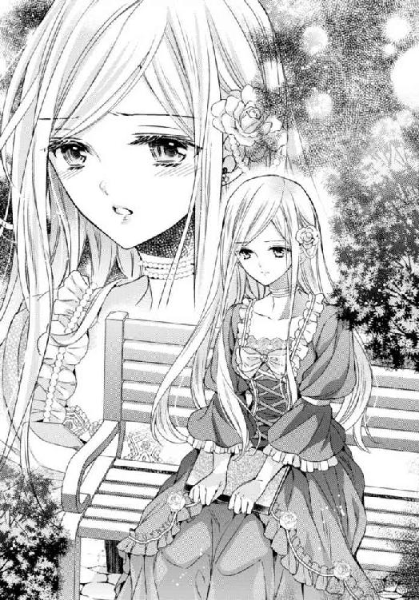
王家の正統な血を残すための義務。
私はその道具。
期待などしてはいけない。夢も見てはいけない。
結婚は、私に課せられた仕事だ。
私はエルゲン様の妻になるのではなく、この国の王妃という務めを果たすのだ。
お可哀想なのは私ではない。それほど愛されながら、目の前で自分の愛する方が他の女と結婚するところを見ていなければならないエリーゼという女性だ。
けれどどんなに言い聞かせても、私の心の中にはぽっかりと穴が空いてしまった。
私の結婚は、仕事でしかないのだという事実に...。
心に空いた穴を埋めるように、私は勉強を続け、カゲツとの約束の朝を迎えた。
それまで、微かに心に抱いていた罪悪感は、エルゲン様に愛人がいるという事実を知ったから薄らいでいき、カゲツと会うことを楽しみだと思っている自分の気持ちを正当化できた。
だって、夫となる人からは放っておかれているのですもの。
カゲツは私の愛人ではないし、エルゲン様の与えた退屈を紛らわしてくれる友人と会うことを、エルゲン様には咎める権利はないはずだわ、と。
朝食が終わると、私はメイドに頼んで外で食べるからとチョコレートを幾つか包んでもらい、それを持って馬屋へ向かった。
悪いことはしていないと言っても、人目のないところで殿方と会うのを見られてはいけないと、気づかれないようにこっそりと。
カゲツは、馬屋の外で、馬のアブミを洗っていた。
「カゲツ」
私が呼ぶと、一度は振り向いたが、待っていろと目で合図をしてそのまま仕事を続けた。
洗ったアブミを木の竿に引っかけるようにして乾かすと、ようやく彼は濡れた手をタオルで拭きながらこちらへやって来た。
「今日はここはまずい。他の人間が来るから。裏手の森へ行こう」
私の返事を待たずに彼が歩きだす。
人に見られたくないのは私も同じなので、黙って彼の後についてゆく。
彼はここに長くいるのだろう。私の知らない道を通って、植え込みの間を抜けたりしながら森に入って行った。
馬を入れることもあるからだろう。
森は、遠くから見ているより歩き易かった。私がカゲツと街へ抜け出した時、一人で森へ行くと嘘を言ったのに、誰も止めなかったのは、ここが明るい場所だったからなのだ。
暫く黙って歩き続けると、彼はふいに振り向いた。
「今日はおとなしいな」
「そうかしら」
歩く速度も落としてくれて、隣に並ぶ。
「浮かない顔をしている」
「かもしれないわ」
「聞いてやってもいいぞ？」
私は彼を見上げた。
「あなたは...、エルゲン様にずっと仕えてるの？」
「だとしたら？」
「エリーゼという女性を知ってる？」
「エリーゼ？」
「エルゲン様の...、愛人だと思うのだけれど」
彼は芝居ではなく、驚いた顔を見せた。
「エルゲンの愛人？ 聞いたことはないな」
「そう...」
「誰かにそう教えられたのか？」
「いいえ。皆隠しているわ。でも、聞いてしまったの。メイド達が話しているのを。彼は城に戻ってきていたんですって。でもエリーゼという女性のところで過ごしていて、私には会おうとしなかったと。その方はご病気なのか、医者に診せるためにまた出て行ったらしいわ」
彼は何も言わなかったので、私は続けた。
「だから、もしあなたがその方を知っているのなら、どんな方か教えて欲しかったの」
「どうして？」
「どうして...。そうね、知っても仕方がないわね。ただ色々考えてしまって。その方は幸せなのかしら、私より素晴らしい方なのかしら、エルゲン様を愛してらっしゃるのかしら、彼が私と結婚したらどうなさるのかしら...って」
「もしその愛人がいたら、叩き出すのか？」
「そんなこと、しないと思うわ。でも...、寂しいと思ったの」
「寂しい？」
「結婚しても、私は夫婦にはなれないのだとわかって」
歩き続けていると、小さな泉に行き当たり、カゲツは私にそのほとりに座れと促した。
私は大きな木に寄りかかるように乾いた草の上へ腰を下ろしたが、彼はその木に手を掛けて立ったままでいた。
「会ったこともない男と夫婦になれると思っていたのか」
「結婚すればずっと一緒に暮らすのだもの、いつかわかり合えるかも知れないでしょう？ でも最初からそんなことはあり得ないと言われながら過ごすのは寂しいわ。それに...」
「それに？」
「そのエリーゼ様も可哀想だわ。もしエルゲン様が王にならなければそのお二人が結婚なさっていたのかも知れないし」
「愛人の女を可哀想という、か...」
彼は寄りかかっていた木の枝を折り、それを弄びながら私から少し離れた場所へ腰を下ろした。
「夫婦というものがどういうものなのか、俺にはわからない」
「あなたは結婚していないの？」
自分で口に出してから、そのことについて彼に尋ねたことがなかったのを思い出した。
もし、彼に奥様がいらしたら...。
それを考える前に、彼は「していない」と答えた。
「したこともない」
その返事に、何故かほっとする。
「ジェレイラは、俺の『カゲツ』という名前をどう思う？」
「どうって...、変わった名前だとしか...」
「この国の名前ではないからな」
「デリアの名前なの？」
「どうしてそう思う？」
「髪と目が黒いから。デリアの人は黒髪で黒い目なのでしょう？」
「そうだ。そしてこの国の者はお前のように金の髪だ。少しは茶の髪の者もいるが、貴族の殆どは金髪だな」
「ええ」
彼が何を言おうとしているのかわからなくて、じっと彼の横顔を見つめていた。
カゲツは手にある枝に目を落とし、こちらを振り返りはしなかった。
「俺は父親がいない。この国で母と二人で暮らしていた。その母も、早くに亡くなった」
「え...」
彼の告白は、私には驚きだった。
お父様がいらっしゃらなくて、お母様が亡くなられたということは、彼にはご両親揃っていないということだ。
「ご兄弟は...？」
「いない」
「あなたは...、一人なの？」
彼は枝を投げ捨て、やっと私を見た。
「子供の頃から面倒をみてくれている乳母がいる。ちなみに、屋敷もちゃんとある。貧しい生活はしてこなかった」
そして心配するなというように笑みを浮かべた。
「だが、誰もが身近で手本とする、親という夫婦の姿を見たことがない。だから夫婦というものがよくわからん。お前はエルゲンと夫婦になろうというのに、愛人を気遣う。それは愛人がいてもいいという意味なのか？」
「そうじゃないわ」
「だがお前はエリーゼを心配しただろう」
「だって...、その方の方が先ですもの」
「先？」
「私はまだエルゲン様に会ってもいないわ。でもその方は、王位に就くことが決まる前からエルゲン様を愛していたのでしょう？ それならば...、仕方がないわ。私が愛されて求められているのなら、他の人の存在は悲しみ以外の何ものでもないけれど...」
カゲツは私を覗き込むように、身を乗り出した。
黒い瞳が、真っすぐに私を見る。
夜の闇のような黒い目は、そういうつもりではなかったとしても、じっと見つめられているような気にさせる。
「お前がエリーゼだとしたら、どう思う？ エルゲンを愛しているのに結婚できなかったら」
「悲しいわ」
「別れようとは思わないのか？」
「愛していれば、別れないでしょうね。私はそんなに激しい恋をしたわけではないけれど、愛するということはそういうものだと思います」
「どういうものだ？」
どうしてそんなに深く尋ねるのかしら？ これはまた、王妃になるべき者への質問なの？
「愛する人の側にいられれば、それだけで満足なのだと思うわ」
「側にはいられないだろう。王城にはお前がいる。公式な席にも連れて行ってもらえない。皆に『奥様』と呼ばれることもない。それは不幸だろう」
私が、愛する人の妻になれなかったら。
認めてもらえなかったら。
たとえば、エルゲン様の妻になっても、別に愛する人がいたとしたら...。
「それでも、愛してると思うわ」
「何故？」
「その人を愛したことが幸福だからよ。愛してもらえればもっと幸せだろうとは思うけれど、もしそうでなくても、その人を想うだけでいいの。愛が叶わないより、愛することを知らない方が不幸だわ。あなたは、人を愛したことがないの？」
彼はふっと笑った。
「俺の話じゃない。女の気持ちがわからないと思っただけだ。ジェレイラにしても、夫に愛人がいることを諦めるのだろう？ 俺なら、きっと何があろうと、愛した女は手放さない。自分のものにする。他の女を手元に置くこともしない」
「私だって、本当に愛する人がいたら、側にいたいと願うわ。他の人に渡したいなんて思わない。でも私には責任があるから、私がエルゲン様と結婚しなければエルゲン様は王にはなれない。王がいなくなってしまうのよ」
「王家が一番、か？」
その言葉は、何故か蔑んでいるように聞こえた。
何を、かはわからなかったけれど。
「そうよ。王様は飾りではないわ、必要なものよ」
「必要？ 王が何もかもできるわけではないだろう」
「ええ。でも、王がいるから何もかもが動くのよ。戦争を始めるのも王なら、収めるのも王。人に褒賞を与えるのも王、罰するのも王。王様がいると思うから、自分より上の者がいると思うから、皆は安心していられるのよ。だから私は...、私は...、エルゲン様が王になるための道具でしかないとわかっていても、この結婚から逃れられないのよ」
逃れられない。
その言葉を自分で口にして初めて、自分が逃げ場がないことを自覚した。選択の余地はなく、どんなに酷い結婚になろうとも、私はエルゲン様と結婚『しなくてはならない』のだと。
「...ジェレイラ」
カゲツの手が伸びて、私の頬に触れる。
そして彼は私を抱き締めた。
「泣くな」
自分でも気づかないうちに流していた私の涙を見て、慰めるために抱いてくれたのだろう。
その慰めに、不用意にも私は縋ってしまった。
「私だって...、こんな結婚はしたくない。愛した人と結ばれたい。でも、私は王家の血を引く者で、相手は次期国王なのよ。断れるわけがないのよ。相手に愛人がいても、受け入れるしかないのよ。私には、手をとって逃げようと言ってくれる人なんていないんだもの。結婚したくないなんて、言えないのよ...！」
縋るように彼のシャツを握る。
「...言ってはいけないことを言わせないで......」
子供のように泣きじゃくる私を、彼は優しく抱き締めてくれた。
何も言わず、ただじっとその格好のまま、私が泣き止むまで。
結婚自体は嫌ではないのよ？ 相手がどんな年上の人でも、仕方ないとわかってるわ。
でも、これから先の長い時間、私を妻とは思わない人の傍らで妻を演じなければならず、それを誰にも言ってはいけないのが辛いの。
私がそこにいることで悲しむ人がいるのも辛い。
その苦しみを、誰にも言えないことも辛い。
これからずっと、私は孤独なのだと宣言されてしまったことが辛い。
カゲツは黙って私の好きにさせ、時折、子供にするように髪に口付けた。
それは男の人が女の人にするものではなく、親が子供にするようなキスだったので、拒まず受け入れた。
私の涙を許して、慰めてくれるキスだったから。
「...ごめんなさい。今のは忘れて」
ようやく落ち着き、私はゆっくりと彼から身体を離した。
カゲツは引き留めることなく腕を緩めてくれた。
「すまなかった。俺が言い過ぎた。お前が、まだ恋も知らぬ若い娘だということを考えるべきだった。誰だって、できることなら愛する人と結ばれたいと思うのだろう。それを口にしないからと言って、そう願っていないわけではないのだと、察するべきだった」
ハンカチを取り出し、濡れた頬を拭う私の肩を抱く手。
力強くて、頼ってしまいたくなる温かい手。
「お前の望む通りにしてやりたいが、俺にはそんな力がない」
「いいの。もう言わないで」
間を置いてから彼が呟く。
「...いつも、俺は無力なんだ」
まるで謝罪するかのように。
彼が謝る必要はないのに。
「私もよ。国という大きなものの前では、きっと王様だって無力だわ」
でも彼がそう言ってくれたおかげで、何だか気が抜けた。
仕方がない。それは誰でも同じなのだ。
「王様も無力か？」
意味がわからないというように笑い混じりに訊くから、頷いた。
「だって国のために我慢なさることだって多いわ。エリーゼ様を迎えることができず私と結婚しなければならないエルゲン様のように。王は、王族は、結婚の相手を選ぶことはできないのよ。私がただの貴族の娘だったら、もう少し可能性はあったのだろうけれど」
泣いたことが恥ずかしくなって、私は彼の顔を見ずに喋り続けた。
視線は、涙を拭いた手の中のハンカチへ。まだ抱かれている肩の手は考えないようにした。
「私のお友達で、ミリアという侯爵家の令嬢がいるの。彼女は好きな人と婚約したわ。相手は外交官のアーサーという人。本当はもうずっと恋人同士だったのだけれど、彼女のお姉様達が嫁ぐまで、恋人であることを認めてもらえなかったの。でも先日婚約したのよ」
彼にとっては全く興味はないであろう話を、黙って聞いてくれる。優しい人。
「いつお相手の方が別の家の娘を選ぶかと、彼女はずっと不安に思っていたわ。侯爵家は立派な家柄だけれど、お仕事を持っている殿方は早く奥様を迎えたがるものでしょう？ 特に外交官は奥様を同伴するパーティも多いと聞くわ。でも二人ともじっと我慢して、ようやく言い出せる時になって、両家のご両親に結婚したいと言って、認めてもらったの。私、心から祝福したわ」
幸せなことを考えよう。
辛いことは消えてなくならないけれど、泣いていても仕方がない。
「ミリアはきっと幸せになれるわ。彼女の結婚式に出席できればいいのだけれど」
自分のことではなくとも、幸福な人達を見るのは楽しい。
私が幸せになれないのなら、ミリアには幸せになって欲しい。私のような涙を流さずにいて欲しい。
「その友人に会いたいか？」
「会えれば...、楽しいだろうと思うけれど、私がここにいることを知られてはならないのだと思うから、言わないでおくわ。会えなくても、きっとミリアは私を忘れてないと思うし」
「いい友人だな」
「ええ。...そうだわ、私、今日チョコレートを持ってきたの。働く人は甘いものが好きだと聞いたから」
ずっとスカートに隠していた、チョコを包んだ白い布を取り出す。
開いてみると、身体に密着させていたせいか、チョコが少し溶けて布についていた。
「食べて」
差し出す時に、その顔を見上げる。
カゲツはとても穏やかで、優しい目をしていた。
軽口を叩いたり、からかって笑っていたりした彼とは違う。もっと大人の、男の人の顔。
その表情にまた胸が騒ぐ。こんなに近づいてはいけなかったのじゃないかしら、と。
「どれ」
彼は溶けかけたチョコを摘まみ、自分ではなく私の口元へ運んだ。
「あなたに食べてもらおうと思ったのよ」
「最初の一粒は女性が食べるものだ」
「そんなこと聞いた...ん...」
喋っている口に、指がチョコを押し込む。
思ったより奥まで差し入れられて、彼の指までが入ってくる。
口に入れたものを吐き出すわけにもいかないので、おとなしくそのチョコを食べると、彼は口を開けた。
「俺にも入れてくれ」
たった今、大人の男という顔をしていたくせに、子供みたいに。
一粒摘まんで、柔らかくなったそれを彼の口元へ運ぶ。
待ち切れないように顔を突きだし、カゲツが私の指ごと含み、舌で私の指先を舐める。
舌が触れる指先から甘い痺れが広がる。
ゆっくり引き抜く指を引き留めるように吸われ、胸が疼いた。
「俺はそんなに甘いものが好きではないから、残りはお前が食え」
「え...、ええ...」
顔が赤くなってないかしら？
今の行為に戸惑っていると知られたかしら？
「まだ少し時間がある。さっきの話題を忘れるためにも、勉強の時間にしよう」
「ええ、いいわ」
指先には、まだチョコが少しついていた。
でもそれを舐めることはできなかった。人前で指を舐めるなんてはしたないし、彼の口にあったものだと思うと、次のチョコを摘まむことさえできない。
「税の使い道を考えたことがあるか？」
「国の整備をするためよ」
真面目な話をしても、意識はまだ舌の感触を残す指先に集中してしまう。
片膝を立て、その上に肘をついて頬を支え、こちらをじっと見ている視線に落ち着かなくなってしまう。
結局、彼とは昼近くまで語り合ったけれど、何を話したか、よく覚えていなかった。
指先と視線だけが頭の中をいっぱいにしてしまったから。
白く長い自分の指。
その先に付いた小さな貝のような爪。
じっと見つめていると、彼がそれを口に含んだ姿が浮かぶ。
キスではないわ。
チョコで汚れた手を舐めてくれただけよ。指にチョコがついたままではドレスだって汚れてしまうと思ったからよ。
そう思っても、胸のドキドキがおさまらない。
カゲツは、また仕事でここを離れると言っていた。
今度は五日ほど。
それを聞いて、安心した。
彼と毎日会っていることは色んな意味で危険な気がしていたから。
目を閉じれば、会ったことのないエルゲン様の顔など浮かぶはずもなく、いつも瞼の裏側にはカゲツがいる。
それは肖像画より生き生きとして、私の胸を躍らせる。
だから、目を閉じるのが怖くなってしまう。
彼の、私を敬ったり怯えたりしない態度は、友人のようだと思っていたけれど、それが今は特別に魅力的だとも思っている。
他の人とは違う。
そのことが彼を強く胸に刻ませる。
カゲツが、自分の特別な存在になってしまいそうで怖い。
でも、彼と会えなくなってしまったら、この退屈で不安な日々を耐えられなくなってしまうだろう。
何もしないでいると、ただ退屈を感じるだけではなくなってしまった。
自分の未来に苦しみが待っているというという不安が、何かに縋らずにはいられなくなってしまうのだ。
その縋るものが、今はカゲツしかいなかった。
ドライガー夫人が、本来なら私を支える役を担っているのだろう。けれど彼女は私に嘘をついた。エルゲン様がこの城には来ていないと。
それを知ってしまったら、彼女を心から信頼することができない。たとえそれが彼女の優しさだとしても。
マリはよく尽くしてくれる優しい女性だった。彼女ならば、嘘をつくこともないだろう。
でも、彼女は物事を知らなかった。
貴族というものも、私のことも、エルゲン様のことも。
彼女との会話に安らぎを得ることはできても、頼ることはできない。
その二人を除いてしまうと、自分には誰も『身近』と呼べる人がいないのだ、ここでは。
貴族の結婚は長い場合は婚約から一年かかることもある。今回はその婚約にすらたどりついていない。
まして、婚約を発表する条件が、エルゲン様が戦争での成果を上げること。あまつさえ、戦争を終結させることだというのでは...。
私が親しくしていた人々の前に姿を見せることができるのは何時のことになるのやら。
何もない平穏な日々が責め苦のよう。
それがわかっていたのか、カゲツはいなくなる前に幾つかの宿題を出して行った。
国のお金や人の流れ、地域の特色を調べること、周囲の国との関係を調べること等、彼の不在の五日間では調べきるかしら、というようなことを。
書庫で一人で調べるのは難しい。
その点では、ドライガー夫人がとても頼りになった。
「私にものを教えてくれる方は近くにいらっしゃるかしら？」
と勉強への意欲を覗かせた私に、彼女は自ら名乗りを上げた。
「私、若い頃は家庭教師をしていたこともあるのですよ」
と言って。
「私の実家も男爵家ですが、とても裕福というほどではありませんでした。ですから、行儀作法や勉強を教えることを生業にしていたこともあったのです」
「働いてらしたの？」
「はい。それで今の主人と知り合いました。主人も勉強家でしたので」
ドライガー男爵は王城で司書を務めていると言っていたから、本が二人を結び付けたのね。
同じ男爵家同士ならば家の釣り合いもいい。二人が恋愛をしても、周囲は祝福しただろう。
それが少し羨ましいと思ったことは、言えなかった。
「それではお知りになりたいことをどうぞ何でもお尋ねくださいませ」
彼女の授業は的確で、丁寧で、わかりやすかった。
貴族の娘が必要とする教養ではなく、王妃となる者が知るべきことを教育することに長けているといってもいい。
もしかしたら、彼女はこのためにここへ呼ばれていたのかもしれない。
城を散策しても、目的となるカゲツがいないから、私は彼女に付いて学ぶことに集中した。
自分の知らなかったことは、何と多かったのだろう。
私達が口にするものを作ったり手に入れたりするのに、どれだけ多くの人の手が必要か。
自分が身につけている宝石一つで、何人の者が生活してゆけるのか。
当たり前のように与えられ、その裏側を知りたいと願うのはあさましいとさえ言われていたことが間違いだった。
公爵家の娘は、自分に仕えている者がどれだけの賃金をもらっているかなどとは考えてはいけない。
でも王妃は知らなくてはいけないのだと、夫人は言った。
「エルゲン様は、王城でお暮らしになったことがございません。王都にも、殆ど足を運ばれませんでした。ですから、ジェレイラ様はその部分を補っていただけるとよろしいかと思っております」
「儀礼的なことならば、それこそちゃんとした教育係を雇うべきではなくて？」
「そういうことではありません。式典での振る舞い方等は十分に心得ておられます。ですがものの考え方が...」
「考え方？」
彼女は少し言いにくそうに言葉を濁した。
「たとえば、私やジェレイラ様は、困っている人を見かけても、自ら手を差し伸べることはいたしません。従者がいれば従者に助けてやるように命じるでしょうし、いなければ誰か適当な者に命じます。それが何故だかお分かりですね？」
「私の手にはそれ自体に意義があり、様々な思惑がついてまわるから、でしょうか？」
「様々な思惑とは？」
「その者が私のお気に入りと見なされて、私に取り入ろうとする人々に利用されたり、私を嫌う人に攻撃を受けたりすることもあるから。それに、受け取る者に悪意があれば、私自ら助けてくれたと吹聴し、私の名前を利用するかもしれないから」
彼女は結構、というように頷いた。
「地位のある者は、たとえ手を貸してあげたいと思っても、それをしてはいけないのです。相手のためにも、自分のためにも。ですが、エルゲン様にはこれまでその地位がございませんでした。ですから、自ら玉座を降り、倒れている老人に手を差し伸べてしまうかもしれません。それを止めても、何故止められるのかがわからないのです。そして、止め立てした者が傲慢だと思われるでしょう」
それは困るわね。
王自らそんなことをしたら、きっと側近は大慌てだわ。
「エルゲン様のお側で、あの方を諌めることができるのは、王妃であるジェレイラ様だけでございましょう」
彼の傍らにいるエリーゼという女性は、不遇の頃のエルゲン様と知り合ったのだから、きっと貴族ではないのだろう。
「ジェレイラ様は反対に、市井のことをお知りになるべきです。エルゲン様が感じ、心遣いをする民衆について理解を深めていただくことが、エルゲン様をご理解いただくことに繋がると思います」
理解できても、愛し合うことはできないけれど。
「お務めですもの、頑張って励みますわ」
だから、そう言うしかできなかった。
私に残された道は、よき妻になることではなく、よき側近ということ。そう思って励むことにするしかないから。
「それにしても、よい課題を見つけていらっしゃいましたね。さすがですわ」
カゲツの宿題を、私の発想と思って褒めてくれたことが、何だかとても皮肉に思えた。
ずっと側にはいられない人が、私のことを理解している。
これからずっと側にいるべき人には、まだ会えもしないのに、と...。
「労働する人々への施設整備は、結局は国家のためになるわ。それを惜しむ者には将来がなくなる。けれど過剰な投資は勤労意欲を削ぐだけでなく、国庫の負担にもなる。だから、彼等が何を欲しがっているかをちゃんと見極める必要がある。王は視察に向かうべきだし、自らが動けない場合は信頼のおける視察団を用意すべきよ」
「そういう人間をどこから探せばいいと思う？」
「王城では無理ね。華やかなパーティで近づいてくる人は、民衆の気持ちをわかろうと努力するタイプとは思えないから。エルゲン様は戦場に出てらっしゃるのだから、そこでの功績の高い者を使うのはどうかしら？」
「戦場での勇猛果敢さと、視察のこまやかな観察眼は違うだろう」
「そうね...。それなら、商人は？ 人の望むものを調べるのが商人でしょう？」
「だが己の利益を追求するのも商人だ」
戻ってきたカゲツは、私との密会場所を馬屋からあの泉のほとりに移した。
彼と共に、何人かの人間がこの城を訪れ、馬屋への他の人の出入りが多くなったからだ。
「お忍びで街へ出て、そういう人間を見つけることは？」
「王にお忍びは可能なのか？」
「わからないわ。でも、一度か二度くらいなら無理ではないのじゃなくて？」
「一度や二度でそういう人物が見つかるかな」
彼との問答はゲームをしているようで、楽しかった。
彼は私に不用意に近づくことはせず、近くに寝転んで、からかうような言葉を与えてくれる。その距離に安堵もする。
もう指先を舐められたり、肩を抱かれたりすることはないと。
「エルゲン様には、今、側近と呼べる方はいらっしゃらないのかしら？」
「どうだろうな？」
「あなたは？ エルゲン様と親しいのでしょう？ あの方を呼び捨てにするくらいだもの」
「俺は御免だ。彼と親しくないとは言わないが」
彼は草を毟り、放り投げた。
子供みたいだわ。
「国のために働くのは嫌？」
「そうは言っていない」
「でもあなたの視察は人々を助けると思うのだけれど？」
「嫌な言い方をするな」
「何が嫌なの？」
「俺を上手く使おうとする」
「そんなことはないわ。ただあなたならできると思っただけよ」
「どうして？」
「ドライガー夫人が、あなたのくれた課題を褒めていたからよ。とてもいい着眼点だと。私もそう思うわ。王が知るべきことをよくわかってるわ」
彼はまた草を掴み、ちぎって捨てた。
「それを止めて、草が可哀想よ」
「わかったよ。俺が知っているのは王のやるべきことじゃない。王がすればいいと思ったことだ。今の王は...、悪い人物ではないが、心が弱い。やるべきことをやっているというより、現状を維持しようとしているだけに見える。問題を起こさないように気を付けてるだけだ」
少し突き放した言い方。
この人は陛下が嫌いなのかしら？
「陛下を批判するの？」
疑問を口にすると、彼は肩を竦めた。
「批判しているわけじゃない。頼りないと思ってるだけさ」
「頼りないだなんて。陛下はもう随分にお歳だから、ご自分でできることが少ないだけよ」
「側近がいるだろう？」
「前の陛下が突然亡くなられて、急遽王位を継いだと聞いたわ。ご自分の側近を育てる間もなく、前王の家臣を使うしかなかった。だから信頼できる方がいらっしゃらないのかも」
カゲツは頭を上げて、私を見た。
「お前は、国王に会ったことがあるか？」
「ええ、何度か」
「どんな人物だった？」
「どんなって...。国王になられる前にお会いした時は、穏やかな方だと思ったわ。国王陛下になられてからは...」
私はその時の事を思い浮かべた。
父に連れられ、王城のパーティに出た時、お言葉を戴いた時のことを。
「お疲れのようだったわ。あの方は王位を望んでらっしゃらなかったのじゃないかしら？ よくはわからないけれど」
「王になりたくないものを王に据えるか。その必要があるのだろうか？」
「王様は、きっと扇の要なのよ」
「要？」
彼は横着にも起き上がらず、寝転んだまま私に近づいてきた。
「扇は顔を隠したり、風を起こすためのものでしょう？ 大きく広がった状態で使うものだわ。でもその役割を果たすためには要が必要よ。小さな、真ん中の留め具。それが緩めば扇はたちまちバラバラになってしまうわ。でも部品としてはとても小さなもの、本来の扇の役目には必要なさそうに見えるもの。国を扇に見立てると、そういうものなんじゃないかしら」
近づいた彼は、許しも得ず、私の膝に頭を乗せた。
「面白い考えだ」
でも追い払えない。
膝に感じる重みが心地よい。
そっと髪に触れると、彼は猫のように頬を膝に擦り寄せた。ドレスの上からだけれど。
「お前は、面白い女だ」
私より少し硬い髪の手触りが、獣のよう。
「面白いことなどありません」
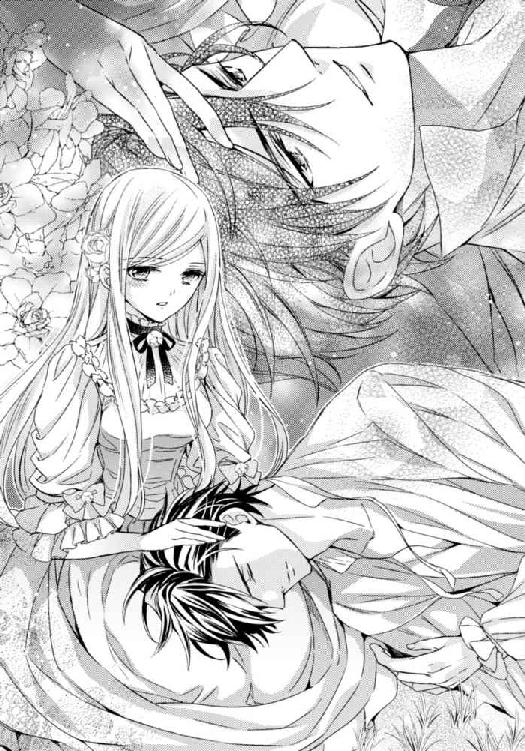
大きな獣を飼い馴らした気分になる。
「あるさ。俺が一介の兵士だと思っているのに、高飛車な態度に出ない」
「あなたは私にとって、ここで唯一普通に話せる人だもの」
「頭もいい」
「月並みよ。知らないことがいっぱいあって、あなたによく怒られるわ」
「そして美人だ」
「容姿が悪くないことは認めるわ。皆がそう言ってくれるから」
「認めるのは自分が美人だということだけか」
彼はクックッと笑った。その振動が伝わる。
「しっかりした娘だ。きっといい王妃になれるだろう」
その一言に彼の髪をいじっていた手が止まる。
「...その話はやめて。二人だけの時には」
「王妃は女にとって最高の地位だろう？」
「わかっているくせに。それは私が、私を絶対に愛さない人と暮らさなくてはいけないという意味だと」
「...ああ、そうだったな」
カゲツは身体を起こし、身体についた草を払った。
「お前は、王妃の座と、お前だけを愛する男と、どちらを取る？」
「同じ秤に載らないものを比べられないわ」
「王妃になりたくて、エルゲンと結婚するわけではないのだな？」
「カゲツ、止めて」
あなたといる時だけ、そのことを忘れていられるのに。思い出させないで。
軽く睨むと、彼は立ち上がり、私に手を差し出した。
逢瀬はこれで終わりという合図だ。「明日は会える？」
「会ってもいいが...、明日は街に露店の市が立つらしい。行きたいのなら午後連れて行ってやるが、どっちがいい？ 勉強か？ 市か？」
「市がいいわ」
「いいだろう。では明日、昼食が終わったらここへ来るといい。馬には乗れるんだったな？」
「ええ」
「では今度はお前用の馬も用意しておこう」
「よかったわ、また曲乗りをさせられたら、私は王妃じゃなく曲馬団へ行くのじゃないかと思うところだったわ」
「その代わり、変装をさせる。その美しく長い髪を、明日はなるべく小さくまとめて来い。帽子にすっぽり入るようにな」
止める間もなく、彼が頬にキスをする。
「では、明日」
困るわ。
彼が私に触れる機会が多くなる。
あまりにも自然に、防ぐ間もなく唐突に。
でも一番困るのは、私がそれを嫌だと思わなくなっていること。
「困るわ...」
彼の唇が触れた頬に手をやり、私は呟いた。
困っていないことが、困ってしまうと。
翌日は、私にとって人生最大の緊張を味わった。
カゲツが、髪が帽子に入るように纏めろと言ったから、てっきり帽子を被ることが変装だと思っていたのに、彼が差し出したのは男の衣服だったのだ。
「着替えろ」
「こんなところで？ 冗談でしょう？」
「どうせ女はたっぷり下着を重ね着してるんだろう？ 一番上を脱いだからって肌が見えるわけでもあるまい」
「失礼よ！」
「後ろを向いて、いいと言うまで振り向かないと約束してやる。それに、今日はこの間の比ではないくらい人出があるだろう。そんな裾の広がったスカートじゃ、身動きできないぞ」
「でも人前で肌を晒せないわ！」
「先にスカートの中でズボンを履いてから脱げばいいだろう」
「言ってくれれば部屋から着替えてきたのに」
「それじゃ変装にならないだろ」
言い合いは、結局カゲツの勝ちだった。
絶対に見ないと約束させて、スカートの下にズボンを履き、慌ててドレスを脱いでシャツを着る。
シャツの上から羽織る上着は大きくて厚手の体型を隠すものだった。
着替えて、振り向いていいというと、彼に顔が隠れるほど大きなツバのついた帽子を被せられた。
服は軍服だったので、伝令の少年兵のように見える。
「今日は天気があまりよくない。崩れそうになったら戻るからな」
彼は、軍服ではないが、黒いかっちりとした上着を着ていた。シャツだけのいつもの姿より凛々しかったが、それを堪能する余裕はなかった。
ドレスは服を入れてきた袋に詰め、彼が持った。ここに隠しておいて人目に触れると困るからと、彼が持っていくことにした。
用意されていた馬に乗り、俯いたまま前をゆく彼についてゆく。
門には詰め所があって、人がいる。
もしここで止められたら、私がジェレイラだと知られたら。どうしてカゲツと変装までして行動を共にしているのかと問われたら。
今まで生きてきた中で、一番の緊張。
手綱を握る手は汗で濡れ、顔を上げることなどできなかった。
だが、門番は彼が馬上から手を上げるだけで私達を通してくれた。
ほっとし、馬を走らせて街へ向かう。
「上手くいっただろう？」
と言われても返事ができなかった。
この間の宿屋まで、無言で進み、馬とドレスの入った袋を預ける。
宿屋には、多くの人がいて、荷物を預けるだけでも部屋を借りてくれと言われてしまった。
仕方なく、一番安い部屋を借り、荷物を置いて外へ出る。
「俺の手を離すなよ」
言われなくても、ここではぐれたら最後だから、しっかりとその腕に縋った。
戸外だというのに、どこからか聞こえてくる音楽。
先日は歩く人もポツポツとしかいなかった通りは人で埋まり、家々に飾りがされている。
扉を締めていた店は、扉を開け放し、店の前にまで売り台を出し、大きな声を上げている。
「すごいわ...」
私はカゲツに身を寄せた。
楽しそうだとは思ったけれど、人の多さが怖かった。
「大道芸人が出ているはずだから、広場まで行ってみよう」
「だい...？ 何？」
「行けばわかる」
手を取られ、グイッと引っ張られる。
人込みの中を泳ぐように抜けてゆく。
音は騒がしいけれど、それよりも自分の耳の奥で聞こえる太鼓の音の方が大きかった。
ドン、ドンと。
これは心臓の音。
それが本当の太鼓の音に重なる。
「見ろ」
広場では音楽を演奏している人達の回りに人の輪が壁のようにできて、空いた場所に派手な服を着た女性が、歌を唄いながら踊っていた。
あちらでは色とりどりの玉を、一つも取り落とすことなく空中に投げては受け取っている。
その向こうにも人の輪があるから、きっと何かしている者がいるのだろう。
曲芸は、子供の頃曲馬団で一度だけ見たことがあった。
でもこんなに近くで見るのは初めてだった。
「すごいわ。面白い」
興奮して言うと、彼は耳元で「声を出すな、女とバレる」と注意した。
いけない。
今日の私は男の子でなければいけないのだわ。
カゲツは私の背後からおぶさるように密着してきた。でもそれが周囲の人達から私をかばうためなのだとわかるから、身を任せる。
一つの催し物が終わると、次の人が出てきて、今度はまた違う曲芸を見せる。
楽しくて、いつまでもそこで見ていたかった。
けれど彼は暫くすると、私の手を取り、人の輪から引き出した。
「もう少し見ていたかったわ」
「それもいいが、露店も見たいだろう？」
「露店？ あの床にお店を広げる人達ね？」
「今日は遠くの街からも商人が来ている。見たこともないものがあるかも知れないぞ」
そう言われると、心が動いた。
「見るわ」
どこへ行っても人の数はすごかったけれど、露店の並ぶ大きな通りは自然と流れができていて、その流れに上手く乗りながら私は色んなものを見た。
派手な布地。
香りのするロウソク。
薄く削いだ木に彩色と彫刻を施した本の栞。
厚くて大きな本もある。
ガラスのビンに入ったアメは、まるでガラス玉のよう。
「すごいわ」
「楽しいか？」
「ええ、とても」
「欲しいものがあったら言え。買ってやる」
「でも...」
「大して高いものじゃない。言い訳なら、後で考えてやる」
彼がそういうなら、きっとそうなのだろう。
「じゃあ、あのアメが欲しいわ」
「食べ物か。子供だな」
彼は笑って、小さなガラスビンに入ったアメを買ってくれた。
ガラスのコップ、ピンクのビーズ、銀の飾りのブローチ、革の鞄。布で作られた靴に大きな絨毯や箪笥まで置かれている。
「玩具箱のようだわ。みんな売れるの？」
「売れ残ったら、次の街へ売りに行く。売れた分は、ここで新しい品物を仕入れるんだ。あそこでパンが売ってる。一緒に食おう」
「どこ？」
私は周囲の店に目をやった。
いい匂いは漂っているけれど、パン屋の看板はない。
「そこだ」
彼が示したのは、小さな窓口のような店だった。
「パン屋...？」
「揚げパンだ。もっと南の方の食い物だな」
「パンを揚げるの？」
「美味いぞ」
「どこで食べるの？ あのお店には座る場所がないわ？」
「歩きながら食うのさ」
「歩きながら？ そんなの...」
「はしたなくはない。ここでは普通だ」
確かに、私の前で買った人は、品物を受け取ると、その場でかじりついていた。
「親父、二つくれ」
店のおじさんから渡された丸いパンは、油の入った鍋から取り出させると、ハチミツをつけて渡された。
人に当たらないように横道に逸れ、先に彼がかじりつく。
「顔を出して食え。ハチミツがたれるぞ」
言われたようにしておそるおそるかじると、普段食べているパンとは全然食感も味も違うパンの香りがふわっと鼻に抜けた。
外側がカリッとしていて、中はもちもちとしている。
「甘くて美味しい。こんなの初めて」
「そいつはよかった」
喜びの声を上げる私に、彼が笑いかけ、またお互いにパンにかじりつく。
外で、立ったまま直接かじるパン。
はしたないことだけれど、楽しい。
ハチミツでベタベタになった指先を舐め、立売の果実を買ってまたそれをそのまま食べる。
様々な露店に様々な人々。
子供は皆頭に同じような飾りをつけていて、それが祭りの衣装なのだと教えられる。この市は祭りの一環で、明日がその祭りの本番だけれど、明日には城の人間も来るかもしれないから今日にしたのだということも。
「あの織物はデリアのだな」
緑の光沢のある布地に金で竜の刺繍のあるものを指さしてカゲツが言った。
「あれで服を作るの？ とても派手ね」
「いや、あれは飾りだ。新年に飾る。ここではただの装飾に使うんだろう」
楽しかった。
知らないことを知るのが。
見たこともないものを見るのが。
したことのないことをするのが。
けれど、楽しみ過ぎたのかも知れない。
人の流れに従って、市の奥の方まで来た時、ふっと頬に冷たいものを感じた。
「しまった」
カゲツが私の手を取り、店が立ち並ぶ大通りから離れ、元来た方向へと踵を返す。
「どうしたの？ この先にも広場があるのでしょう？」
「雨だ」
「雨？」
周囲の人々もそれに気づいたのだろう、俄に騒がしくなる。
「天気が悪いことは注意していたが、つい楽しみ過ぎた。濡れる前に戻るぞ」
「はい」
さあっと、人がはけて消えてゆく。
露店商達は慌てて荷物を片付け、子供を呼ぶ親の声が響く。
私達が戻る間にも、空から零れてくる滴は大きく多くなり、地面に点々と付いた雨の跡は、あっと言う間に世界の色を灰色に変えてゆく。
「走れ」
彼は自分の上着を脱いで、私の頭から被せた。
「あなたが濡れるわ」
「いいから、宿まで走れ」
手を引かれ、帽子のつばでよく見えないまま、彼の引っ張る方向へ走る。
大通りを避けていても、同じように雨を避ける人々が走りぬけてゆくから、何度か人にぶつかった。
辺りはすぐに暗くなり、雨は強くなり、何とか宿屋へ着いた時には、もうすっかり身体は濡れてしまっていた。
取っていた部屋へ駆け込み、彼が宿の人間にタオルを頼む。
私は窓から外を眺め、不安になった。
こんな酷い雨では、きっと誰かが心配して私を探しているんじゃないだろうか？ それで見つからなければ、大事になっているのでは？
「...帰れるかしら」
振り向くと、カゲツはシャツを脱いでタオルで身体を拭いていた。
「降りが強い、通り雨だろう」
逞しい裸体に、思わず視線を逸らす。
「お前も、濡れた上着を脱げ」
「大丈夫よ。あなたが上着をかけてくれたから、そんなに濡れていないわ」
「風邪を引くぞ」
「いいの」
「ジェレイラ」
彼の腕が伸びてくるから、思わず身を引く。
それで彼は私の態度の意味に気づいた。
「...全部脱げと言ってるわけじゃない。下にシャツは着ているだろう」
気づいたのに、強引に私を押さえ付け、上着を脱がせ、ベッドから剥ぎ取った毛布を投げ寄越した。
「それを巻き付けてベッドの上に座っていろ」
ベッド。
荷物を置くためだけに借りた部屋は狭く、独り寝用の狭いベッドが一つあるだけ。宿屋には、泊まるわけではないと言っておいたから、二人であってもこれでいいと思ったのだろう。まして私達は男同士ということにしてあったから。
でも、私は意識した。
手を伸ばせば簡単に届いてしまうところに、半裸の男性と二人きり。
慌てて毛布を巻き付け、ベッドの一番隅に丸くなった。
だが彼は近づいて来るようなことはなく、濡れた自分と私の上着を広げ、丁寧にタオルで水を拭き取り、壁にかけた。
ぐっしょりと濡れた自分のシャツを絞り、私がいるのとは対角の場所に腰を下ろし、背を向ける。
「雨が上がったら戻ろう。せっかくの楽しみだったのにな」
筋肉のついた背中。
男の人、と意識する。
「...楽しかったわ」
前に馬屋の前で見たのに、その時とは違う気がする。
「ならいいが。シャツは濡れていないか？」
「少しだけ...。でも大丈夫よ」
「濡れると身体が冷える。気を付けろ」
「あなたは...？ 寒い？」
「俺は男だ。これぐらい大したことじゃない」
「でも、裸だわ」
「濡れたものを着ているよりは裸の方がいいんだ」
ここまで、私を庇って連れてきてくれた。自分の上着を脱いで、私にかけたりしなければ、彼だってシャツまでは濡れなかっただろう。
そう思うと、自分一人が毛布を独占していることが申し訳なくなってくる。
「端を使っていいわ」
しっかりと巻き付けていた毛布を緩め、端をそっと差し出す。
カゲツは振り向き、困ったような顔で笑った。
「いい」
「でも風邪を引くわ」
「わかっているだろう？ ここは狭過ぎる」
彼は、私のことなど意識していないのかと思った。二人きりだということに慌てたのは私だけなのだと。
でも、今の一言で、彼もまたここが私達にとって危ういほど狭い場所だと思っていることを教えた。
窓の外。
叩きつける雨の音。
安い宿は、ドアの外を慌てた様子で走ってゆく人の足音も聞こえる。
「あなたが紳士でいてくれるなら、やっぱり毛布を貸すわ。私のせいで風邪を引いたら困るもの」
「紳士なら、か...」
苦笑して近づいては来たけれど、彼は譲った毛布の端を手には取らなかった。
黙ったまま隣に座っただけだった。
こちらから手を伸ばし、剥き出しの腕に触れると、ひんやりと湿った感触が伝わる。
可哀想だと思う。悪いとは思うけれど...。
「冷たいわ...」
彼は夫になる人ではないし、若い男性だ。近づき過ぎてはいけない相手だ。
わかっているのに、私は毛布の合わせを解いて、包むように彼の肩にかけた。
「私のせいで風邪を引かれたら困るわ」
ひんやりとした空気と共に彼の湿った身体が毛布の中に入って来る。
「優しいのは認めるが、危険だぞ」
「だからと言って、あなたに病気になられるのは嫌」
「心配か？」
「心配よ」
彼の腕が、膝を抱えて座っていた私の腰に回り、身体を密着させる。
薄い毛布に二人でくるまり、ベッドの上で身を寄せ合う。
私の熱が伝わり、冷たかった彼の身体から冷気が消える。
雨の音は大きく、絶え間無くて、沈黙を埋める。
怖いくらい大きな音なのに、彼が隣にいるというだけで、不思議な安心感があった。
この人が...、ずっと側にいてくれたならいいのに。
考えてはいけないことが頭を掠める。
ずっと時を巻き戻して、私がエルゲン様に望まれる前に彼に出会えていたらよかったのに。
たとえ身分がなくても、この人と一緒ならば毎日が楽しいだろう。彼が貴族かどうかも知らないが、もし貴族でなかったとしても武勲を立てられる人だと思うわ。そうしたら、叙爵することは簡単だろう。
私の夫となる人は、今この時、別の女性と共に王都にいる。
私の顔を見ようともしないで。
だとしたら、心の中だけででも、私がカゲツを求めるのはそんなに悪いことかしら？
...いいえ。
私は王妃になるのだから、国のために嫁ぐのだから、やはりこれは考えてはいけないこと。
「向こうの空が明るくなってきたな」
カゲツが、窓の方へ身を乗り出した。
窓は私の向こう側だったので、彼の身体が私にのしかかる。
重みに耐え兼ね身体を傾けた私に彼が視線を向ける。
目が合った瞬間、『いけない』と頭の中で声がした。
近づいてくる唇。
逃げることを待っているかのようにゆっくりと近づく唇が私の唇に重なり、壁の隅へ私を押し付ける。
「......ン...」
キスをしたのは、初めてだった。
ただ唇を合わせるだけの行為なのに、胸を締め付けられる。
寄り添うために腰に回っていた手が、私を抱き寄せる。
私...、この人が好きなんだわ。
この人と一緒にいたいんだわ。
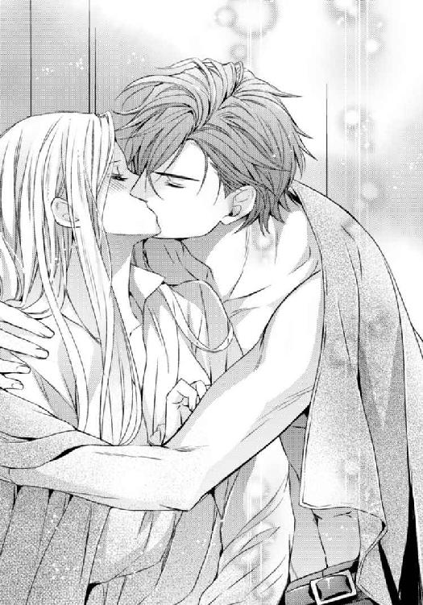
してはいけないとわかっていても、彼を温めてあげたいと思ったのも、近づく唇から逃げることができなかったのも、自分がそれを望んでいたからなのだわ。
まるで幕が落とされ、隠されていたものが姿を現すように、自分の気持ちがはっきりと見える。
でも、彼の手がシャツの上から私の胸に触れた時、私は夢から覚めた。
「...だめっ！」
力いっぱい彼の身体を突き飛ばし、唇を離す。
「これはしてはいけないことよ。私は許婚がいる身なのよ。私は王妃になるの。あなたの相手はできないわ」
「見たこともない、他の女を囲っているような男は嫌なんだろう？」
嫌よ。
絶対に嫌。
でも私は知っている。自分の役目を。
そして恐らく、エルゲン様もそれを知っているから、愛する女性がいても、私との結婚を受け入れたのだもの。
私達はきっとその点では分かり合えるだろう。
たとえ愛し合えなくても、国のためという高邁な精神でなら結び付けるかもしれない。
それはたった今気づいたカゲツに対する気持ちとは程遠いけれど、仕方がないこと。
「私は、王妃の立場を捨てられないわ」
私は自分の立場を知っている。
「王族としての地位が大切か」
自分がなすべきことをなさなければ、どういうことになるかを知っている。
「そうじゃないわ。でも...、あなたには言ってもわからないわ」
でも恐らく貴族ではない、貴族だったとしても王城からは遠いカゲツには、わからない。
「そうだな、俺にはわからん」
彼は毛布から出て私に背を向けた。
呆れられた。
嫌われたかも知れない。
でもこれでいいのだわ。
「ここでドレスに着替えろ。外で雨宿りしていたなら、多少は濡れていた方が言い訳できるだろう。俺は何か羽織るものを借りてくる」
濡れたシャツに袖を通し、目も合わせず彼が出て行く。
苦しかった。
こんな苦しみは初めてだった。
彼の背中を追いかけたいのに、しがらみが私を搦め捕る。
私が結婚しなければ、エルゲン様は王になれないかも知れない。エルゲン様が王位を継がなければ、次は遠縁の者達でも継承権争いが起きるかも知れない。
彼が進めている和平にも影響が出るかもしれず、そうなれば戦いは長引くかも。
私がここでカゲツを選んだら、お父様は確実に失脚するだろう。王に恥をかかせたとして。
父が咎められれば、母も、兄も、親類縁者に至るまで、罪を問われるかもしれない。
管理不行き届きとして、ドライガー夫人以下、城の者は皆罰せられるかもしれない。
私の身勝手で、全てを崩すわけにはいかないのよ。
彼のいない部屋でドレスに着替えながら、私は楽しい時間が終わってしまったことを知らされた。
それは祭りが終わったということではなく、もうカゲツとは会えないという意味。
初めての恋に気づいた瞬間に、自分がそれを壊したという意味だった...。
宿の薄い毛布にくるまって、小降りになった雨の中、私達は城へ戻った。
門番は私をちらりと見たが、汚い毛布を纏った者が誰であるか興味がないようで、カゲツにだけ敬礼し、そのまま通してくれた。
馬屋までそのまま行き、馬を降りると、彼は私にそこで待つように言って立ち去った。
言葉は少なく、態度も素っ気ないままで。
それでも、もう一度戻ってきてくるかと思ったのに、やって来たのはドライガー夫人と従者だった。
「こんなところで雨宿りなさってたんですのね。てっきり森へ入ったのだとばかり思ってましたわ」
彼女は心配そうにそう言うと、従者に持ってこさせた新しくて柔らかい毛布で私をくるんでくれた。
「さあ、戻りましょう。すぐにお湯を使って、身体を温めなければ」
「ありがとう。大丈夫よ」
もう、カゲツは来ないのだ。
何となく、そんな予感がした。
彼は私から離れてゆくだろうと。
でもそれが当然のことで、最良の結果なのだろう。
馬屋から出ると、あれだけ激しかった雨は止んでいて、庭のあちこちに大きな水溜りだけが残っていた。
ぬかるんだ土に足を取られながら城に戻る。
それはまるで今の自分の心の中のよう。
通り雨のように、激しく私に訪れた恋が、今は悲しみというぬかるみだけを残して去っていったのだ。
部屋に戻ると、マリが服を脱ぐのを手伝ってくれた。
「せっかく結い上げた御髪も解けてしまいましたね」
「そうね」
雨に打たれたせいではなく、身体が重い。
「疲れたから、今日は夕食を部屋に運ばせて。早く休みたいの」
「かしこまりました」
「それから...、今夜はもう誰も部屋には入れないで。あなたも、食事が終わったら下がっていいわ」
「お着替えは...？」
「お風呂を使ったら、もう部屋着に着替えるから用意して。...少し寒気がするから、早く休みたいの」
食事の時に部屋着だなんてみっともないことだけれど、誰も見ていないのならいいわ。
浴室へ行き、身体を洗う。
宿で感じた彼の温もりを消し去るように。
ゆったりとした部屋着に着替え、ベッドに入り、マリが持ってきてくれた夕食をベッドの上で少しだけ食べた。
「お風邪を召したのでなければいいのですが」
彼女が心配するから、残すつもりだったけれどもう一度お腹へ詰め込めるだけ詰め込む。
美しく盛り付けられた美味しい料理。
でも、街で食べた揚げパンの方が美味しかったわ。
「明日は何時にお起こししましょう？」
「呼ぶまで休ませて。お食事も呼ぶまでは運ばなくていいわ」
「...本当についていなくても？」
「いいのよ。ただ眠いだけだから」
私は、上手く取り繕う術を知っている。
何でもないふりをして笑うのは、必要なたしなみ。
「雨に濡れるのも楽しかったわよ。もう一度やりたいとは言わないけれど」
いたずらっぽく言って微笑めば、彼女が安心するとわかっている。
「ああ、そうですわ。ドレスのポケットにこのようなものが。どなたかからいただいたんですか？」
マリが差し出したのは、ガラスの小ビンに入ったアメだった。
「...ええ。街でお祭りがあったんですって？ 馬屋で会った方が、私が誰だか知らずにくれたわ。濡れねずみだったから、メイドだと思われたのかもね」
「まあ、ジェレイラ様をメイドと間違えるなんて、目の悪い人ですわね」
「見たことのないおじいさんだったわ。お孫さんに買ったものじゃないかしら？」
一つ嘘をつくと、それをつき通すためにまた嘘を重ねる。
「せっかくだからいただくことにしたの。そこへ置いておいて」
「はい。それでは、お休みなさいませ」
疑うことなく、マリは部屋を出て行った。
これで朝までは一人。
誰にも邪魔はされない。
これからは、きっとこんな夜が続くのだわ。
私は...、運が悪い。
長い間結婚が決まらずにいて、ようやくまとまったと思ったら初めての恋をしてしまった。
破談にすることもできない相手が決まっているのに。その相手には別の女性がいるのに。
どうしてこうなのだろう。
もし、好きになった人が結婚相手だったら、絶対幸せになれるだろう。
カゲツがエルゲン様だったら...。
私はきっといい王妃になる。そのための努力も惜しまない。
でもそうすると、彼にエリーゼという女性がいることになる。それに、黒髪の彼がこの国の王族であるわけがない。
私のことを忘れれば、いつか彼は別の女性の手を取るだろう。
マリなら、同じ国の人間だし、会えば気に入るかもしれない。でもそうなったらきっと私は声を上げて泣いてしまうだろう。
頭の中がぐちゃぐちゃになってしまう。
何を考えたらいいかわからない。
カゲツとのキスが思い浮かび、はっきりとした像を結ぶ前に、思い出してはだめと首を振る。
泣きたいほど苦しいのに、悲しすぎて涙も出ない。
カゲツは最初から、私の特別だった。
彼を好きになる理由はいっぱいあるけれど、何もないところから彼を嫌いになる理由を探さないと。
人を嫌いになるための努力なんて、何て空しいのだろう。
ベッドに座ったまま、動くこともできず、頭の中だけがぐるぐると忙しなく回る。
カゲツと出会った時から、今日までのことが、走馬灯のように過ぎてゆく。
馬小屋で出会って、からかわれて、抱き締められて、一緒に馬に乗って、街へ行って...。色んなことを教えられて、色んなことをして。
見つめ合ってキスしたあの瞬間は、きっと一生忘れられない。
ああ...。
どうして私は彼の手を取れないのだろう。
苦悩が静かな悲しみを呼ぶ。
瞬きをすると、ぽろりと涙が頬を伝ってゆく。
諦めなければ、と思えば思うほど。もう会わない方がいいと思えば思うほど、彼に会いたいという気持ちが湧いて出る。
「カゲツ...」
空虚な部屋に、彼の名が響く。
その時、カチリと音がしてドアが開いた。
マリかしら？ 私は慌てて涙を拭った。
「今夜は一人にしてとお願いしたでしょう？」
けれど、そこに立っていたのはマリではなく、カゲツだった。
「あなた...、どうしてここに...！」
「もう一度だけ、お前に訊きたいと思ったんだ」
「人に見られたら...」
「人払いはしてあるんだろう？」
「それでも...」
カゲツはつかつかと歩み寄り、ベッドに乗ってきた。
「王妃の地位が欲しいか？」
「そういうことを言わないで」
「俺が欲しいか？」
拒む身体が固まる。
「俺はお前が欲しい。公爵令嬢ではなく、ジェレイラ、お前が欲しい」
大きな手が、私の手を掴む。
「だめよ...。これ以上側にいたら...」
「側にいたらどうだと言うんだ？」
「...あなたを...愛してしまうわ。ええ、そうよ。私はあなたのことが好きよ。でもあなたを愛してはいけないのよ」
「何故？」
「結婚が決まってるのよ？ 相手は次期国王よ？」
「国王になる男がいいのか？」
「違うわ！ この国に王が必要だから、そのために私が必要なのよ」
「それなら、お前の気持ちはどこにある？ お前は道具じゃないだろう」
その言葉が、私の胸に響いた。
自分が、エルゲン様に王位を与えるための道具なのだと悲しんだことを否定してくれる言葉だったから。
「ジェレイラ。俺はお前を愛している。王妃などにならなくても、公爵令嬢じゃなくても。お前が何者でもない俺に近づいてきたように」
「馬屋で...、あなたに出会わなければよかったわ」
「本当にそう思うか？」
「だって、そうしたらこんなに苦しまなくてよかったもの」
「俺を愛してるんだろう？ 言ってみろ」
彼の顔が近づく。
黒い瞳が私を見る。
窓の外の闇と同じく、何もかもを包み込むような深い黒が。
「...愛したわ」
夜の闇に吐き出すように、私はその瞳に向かって本当の気持ちを口にした。
「そうよ。あなたのことを愛してしまったわ。あなたの側にいることが楽しかったわ。触れられるだけで胸が騒いだわ。あなたが結婚相手だったらいいのにと思ったわ...！」
「俺が一介の騎士でも？」
「あなたが騎士か貴族か平民かなんて知らないわ。そんなこと、関係ないもの。でも...」
「『でも』はいい」
「でも、私には...」
結婚相手がいるの、と繰り返す前に、彼の唇が私の言葉を奪った。
だめよ。
この口づけがどんなに甘く喜ばしいものであっても、受け入れてはいけない。
なのに...。
彼が私を抱き締めるから、求めて深く口付けるから、逃れることはできなかった。
身体が折れるほど強く力を込めた腕。
私の涙を吸い取るように、キスは頬へ滑る。
「だめ...」
押し倒されて、身体がベッドに沈む。
千々に広がる自分の髪に埋もれてしまう。
「だめよ...」
口だけの拒絶。
身体はもう魔法にかかったように動くことができない。
「お願い...」
締め付けのない、薄地の部屋着は、触れてくる彼の手の感触をそのまま伝える。
手は、私の胸を求めた。
膨らみを掴み、動き出す。
「いや...」
だめ、と何回も繰り返した。口にするだけでなく、心の中でも訴え続けた。
彼に向けて、自分に向けて。
でも本心から拒んでいなければ、そんなものは無意味なのだ。
エルゲン様の城で、彼の妻になるためにここへ来たのに、私はカゲツを求めている。
彼に求められることを悦びだと感じている。
彼の手が、部屋着の肩を落とし、襟がはだける。
口づけが頬から首筋に、首筋から肩に移る。
閨での作法は、ちゃんと教えられていた。
殿方が何をするか、自分が何をされるかも。
でもそんなことを考える余裕もなく、彼の手が滑ってゆく場所全てが熱くなってゆく。
「カゲツ...」
部屋着のリボンを解き、前がはだける。
剥き出しになった胸の膨らみに、キスが降る。
胸に触れた途端、キスは愛撫に変わり、ツンと立った先を舌がもてあそぶ。
「あ...」
甘い疼きが女の悦びを呼び起こす。
抗えない。
鳥肌が立つほどの快感に、力が抜けてしまう。
大きな手は、丸みのある乳房をしっかりと掴み、優しく揉んだ。
もう一方の乳房は口に含まれ、吸い上げられる。
彼の口の中で、先が転がされ、その度に身体の芯が痺れてゆく。
もうだめ。
引き返せない。
私はきっとこの人に全てを捧げてしまう。そうなったら、もう誰のものにもなれない。
「カゲツ...」
震える手を、私は彼の身体に回した。
抱き締めて、彼を受け入れることを身体で伝えた。
それを待っていたかのように、彼は布団を捲り、部屋着のスカートを捲り、手を中へ滑り込ませる。
脚をはい上がる指。
閉じた脚を割って、その中心へ向かう。
柔らかな肉をかき分けて、指が動く。
胸をいじられているだけでも堪らないのに、指がソコに触れると、身体がビクッと震えた。
「あ...」
反射的に強く脚を閉じたけれど、既に中心を目指して滑り込んでいた指を阻むことはできなかった。
「や...」
長い指が、私の下の口にたどり着く。
キスと胸への愛撫で、蜜が溢れている自覚はあった。
指はそれを確かめるように、入口で濡れた肉をもてあそぶ。
前をはだけた服は、すでに役に立たず、乳房は両方とも彼の前に晒されていた。そのことが恥じらいを呼び、恥じらいが感覚を鋭敏にする。
スカートは残っていたので、彼の指が何をしているか、わかっているけれど見ることはできはなかった。
「あ...ぁ...」
乳首の先を彼の歯が軽く噛む。
痛みはないけれど、ゾクリとして背が反る。
下にある指はだんだんと中へ入り込み、いやらしい音を立てていた。
「もっと濡れないと」
乳房を揉んでいた方の手が、先を摘まむ。
少し強い力で、グリグリとそこをいじる。
いじられているのは胸なのに、下が濡れてゆく。
溢れてくる蜜は、殿方を受け入れるために必要なものなのだと教えられた。私が彼を求めて、迎え入れる準備をしているのだと。
「あぁ...っ！」
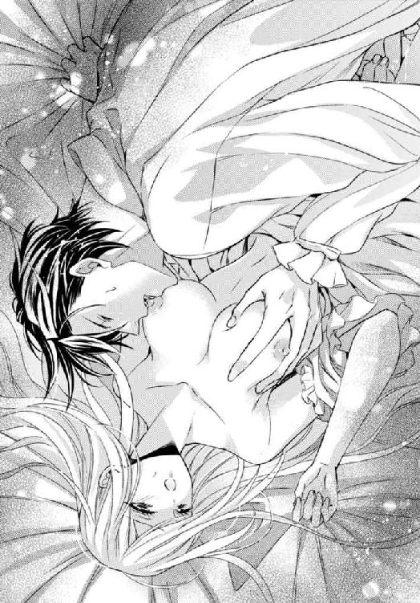
深く差し込まれた指。
「いや...っ、変...っ」
蠢いて、引き抜かれる。
「だめ...、そんな...」
自分でも触れたことのない場所を、彼の指はよく知っているかのように動く。
「...っ、う...」
声を上げてはいけないのだと思い出し、慌てて私は唇を噛み締めた。
こんな声を聞かれたら、誰かが入ってきてしまうかも知れない。こんな姿を見られたら、カゲツがどんな目に遭うか...。
指が動く。
下が動く。
身体が快楽に溺れてゆく。
声を殺しても、滴る蜜が『感じている』と教えてしまう。
一度引き抜かれた指は、とば口の上にある小さな突起を探り当てた。
「......！」
無意識に身体が痙攣し、またとろりと何かが溢れ出る。
噛み締める唇は痛みを感じたが、そうしなければ声は止められなかった。
「どうした？」
彼にしがみつき、声を殺す私に、彼が問いかける。
「声を上げていいんだぞ。恥ずかしいことじゃない」
けれど私は首を振った。
「恥ずかしいか？」
「...聞こえ...人に...」
「何だ？」
私に喋らせるために指が止まる。
「こんな声を...、人に聞かれたら...。あなたが...」
それだけ言うのがやっとだったが、それだけで彼は察してくれた。
身体を起こし、私の顔を覗き込む。
胸にあった指が私の唇をそっとなぞった。
「...赤くなっている」
そして唇を重ねると、一度止めた指をまた動かした。
前より激しく、奥まで。
「ン...、ンン...ッ」
唇を噛み締めようとしても、侵入してきた彼の舌がそれを許さない。
舌は口腔でのたうち、私の舌に絡まった。
「う...ン...っ」
声が、彼に呑み込まれてゆく。
彼が入ってくると思っていた場所は、指だけでぐずぐすだった。
それでもカゲツはシャツを脱ごうとせず、私を嬲り、苛み続けた。初めてだった私は彼を待たずに追い詰められてしまう。
痺れは全身に広がり、何も考えられなくなってしまう。
唇は緩み、舌に嬲られるままになり、喘ぎが漏れる。
「あ...」
彼の唇が離れて声が漏れるから、私はまた唇を噛んだ。
「ジェレイラ」
彼が私の顎を掴み、口に指を入れる。
こじ開けられ、彼の指を噛まないように、今度は奥歯で舌を噛む。
「...イ...ッ」
それに気づくと、彼は口の中に入れる指を増やし、大きく開けさせた。
「耐えるな、俺に声を聞かせろ」
「だ...め...。見つかればあなたが......」
「そんなことは構わない。俺は...」
「いや...。カゲツが罰せられるのは...」
潤む瞳で彼を見つめる。
カゲツは怒ったように私を見下ろし、ゆっくりと脚の間から指を引き抜いた。
「俺に抱かれるのは嫌か？」
まだ熱に浮かされた頭をゆっくりと左右に振る。
「違うわ、わかって...」
「では何故悦びを殺さなければならない？」
「私は全てを裏切る決意をしてしまった。それほどにあなたが好きなの。そのあなたが罰せられてしまったら、私達が引き離されてしまったら、私は何のために過ちを犯したのかわからなくなってしまう。相手があなただと知れなくても、純潔を汚した私は罰を受けるでしょう。それがわかっていても、あなたを望んでいるの。あなたと最後まで...」
カゲツの瞳が揺れる。
乱れた服の私を見て、やりきれなさそうに身体を離す。
「カゲツ...」
「違う。俺はお前にそんな顔をさせたいわけじゃない。お前が俺を愛しているというなら、俺もお前を全身全霊かけて愛したいと思っている。それだけだ。声を殺し、唇に血を滲ませて耐えるジェレイラを抱いてもお前の幸福には繋がらない」
私は身体を起こし、服も整えず、背中を向けた彼に寄り添った。
「いいえ。私は幸福よ。初めて愛しいと思った人に『初めて』を捧げるのだもの。私との結婚を王位継承の儀式とするエルゲン様は、私の不貞を咎めることはできないわ」
「...王家の妻になどさせたくない。たとえそれが正式な婚儀であっても、不幸になるに決まっている」
私より、彼の方が傷付いている気がした。
「そんなことはないわ」
愛を囁き、思う存分悦びを交わすことができると思っていたのに、それが私にとって秘密にしておかねばならない罪なのだと、今初めて知ったように。
それが許せないというように。
「私を抱いて...。私をあなたの妻にして。心だけでも」
「嫌だ」
拒む言葉に胸が刺し貫かれる。
意を決して身を任せたのに、こんなこそこそとした関係では嫌だというのね。
だがそうではなかった。
カゲツは振り向き、私を強く抱いた。
「心だけなどできるわけがない。お前を、真実俺の妻としたいのだ」
「カゲツ...。それは無理よ」
「いいや、無理ではない。俺と共にここを出よう」
「それは...、無理よ」
「俺と共に来い。王家の目の届かない場所へ共に行くんだ」
ずっと...、彼を自分よりも大人な男の人だと思っていた。
私の知らないことを知り、余裕のある人だと。
けれど今の彼はまるで駄々っ子のよう。
この国で、王の目の届かないところがあろうか？
役目を捨てた私に安穏とした生活ができようか？ 王位継承者の許婚を奪うあなたに、追っ手がかからないと思うのだろうか？
「支度をしろ。何も持たなくていい。もし俺を愛しているというのなら、ここを出るんだ」
カゲツの目は、真剣だった。
私の真意を試そうというのではなく、本当にここから私を連れ出そうというのだ。
短い間に、私は百万回己に問いかけた。
お前は自分の役目と立場を知っているわね？ と。
もし、エルゲン様にエリーゼという女性がいると知らなければ、きっとこんな答えは出さなかっただろう。
夫となる人は、私を愛さないとわかっていなければ、こんな愚かなことはしなかった。
「...侍女にだけ、手紙を書かせて。私がいなくなれば彼女が罰を受けるから」
カゲツの顔が、パッと明るくなる。
「馬を持ってくる。着替えてここで待て」
強い口づけを二度私に与え、身体を離す。
「今ここでお前を抱けないのは苦しみだが、お前に忍耐を強いて身体を手に入れるより、我慢して全てを手に入れたい」
「ええ...。わかったわ」
「愛してる、ジェレイラ」
離した身体をまた抱き寄せてキスして、彼はベッドを降りた。
「庭に面した窓を開けておけ、そちらへ馬を回す」
そして少年のように、部屋から飛び出していった。
火照る身体に残る彼の指の感触。
その指の跡をなぞるように、自分の手で、顎を、首を、胸を、大切な部分に触れる。
カゲツは、私を求めてくれた。
一時の満足ではなく、本当に私の全てを。だからこうして最後までせずにいてくれたのだ。
「身を心もあなたの妻に...」
部屋着を脱ぎ捨て、旅立つための服に着替える。
一人で着替えるのは慣れていないけれど、華美な服装でないものなら何とかなるだろう。
荷物は彼が買ってくれた小さなバラのピンと、アメの入ったガラスビンだけでいい。
着替えて支度が終わると小さなポシェットにその二つを詰め、暗い色のマントを羽織り、私は手紙を書いた。
マリではなく、ドライガー夫人宛てに。
長い、長い手紙を...。
カゲツは馬を二頭引いてきた。
一頭には女性用の鞍がつけられ、彼は私をそれに乗せた。
「夜の乗馬は？」
「したことがないわ」
「宿場町まで行ったら、馬を預けて馬車に乗り換えよう。それまでゆっくりでいいから、付いて来い」
心は決まっていたので、私はもう何も言わず、彼の言う通りにした。
門のところまで来ると、私はマントについていたフードを深く被り、顔を隠した。
カゲツが昼間と同じように片手を挙げて合図しただけで、門はすぐに開いた。
女の私が彼の後ろについていることに、不思議そうな目を向けたが、止められることもなく外へ出る。
「少し飛ばす。併走しろ」
昼間の雨が嘘のように、空には満天の星。
月は細く、道は暗かったが、まだ地面に残る雨水が、きらきらと星の光を反射して道を照らしていた。
真っすぐに伸びる道はどこまで続くのだろう。
わからないまま、彼の馬と轡を並べて走る。
「怖いか？」
彼の問いかけに、私は素直な気持ちを返した。
「怖いわ」
いつ追っ手がかかるかと、風が揺らす梢の音にさえ、肩を震わす。
祭りのあった街まではそう長くかからなかった。
祭りは夜になってもまだ続いているらしく、街の中には人と明かりがあった。けれど馬はそこでは止まらず、街を駆け抜けてゆく。
どこへ行くのか、私は訊かなかった。
どこへ行っても同じ。カゲツが連れて行ってくれる場所に変わりはないもの。
「夕食はとったのか？」
「ええ」
「ではもう少し走ろう」
彼の黒い髪のせいか、彼の乗っている黒い馬のせいか、カゲツは漆黒の闇から切り取られた夜の王のようだった。
乗馬の姿も凛々しく、私は魔法の騎士にさらわれて、どこか知らない世界に連れて行かれる気分だった。
もし本当にそうだったらどんなにいいか...。
馬は夜中駆け続け、東の空が暗闇から紫を含んだサファイアブルーのレースのように明るくなり始めた頃、ようやくカゲツの馬は速度を落とした。
「大丈夫か？」
「ええ。でもそろそろ馬を休ませないと」
「そうだな。俺はこのまま馬でゆくが、お前は馬車に乗り換えた方がいいだろう。馬はここで預けて手紙を書く、数日したら届くように。それで馬を引き取らせる」
「馬車を借りるお金はあるの？」
「心配するな」
馬を降り、簡単な食事をしてから馬車に乗り換える。
借りたのは一頭引きの小さな馬車だったけれど、自分で手綱を取らなくてもいいのは楽だった。私は小さな馬車の中で、眠ることができたから。
太陽の位置からして、馬車は南へ向かっているらしいということだけわかった。
どんなに不安でも、私はまだ行き先を尋ねなかった。
尋ねないことで、あなたを信じていると伝えるために。
馬車の旅は途中で何度か休憩を取りながら、丸二日続いた。
途中、宿に泊まって身体を休めることはしたけれど、宿の粗末なベッドで彼が私を求めることはなかった。
もっとも、求められても私は指一本動かせないほど深い眠りを落ちていたのだけれど。
カゲツも、馬に乗り続けていたので、宿では私よりも深く眠っていたのではないかしら？
着替えもせずに旅を続け、そうして二人であの城から遠く離れ、目的地に到着した時、私はもうすっかり疲れてきっていて、到着の喜びより、揺れ続けることが終わったことに対する喜びの方が大きかった。
「ここはどこ？」
初めて尋ねると、彼は懐かしげな視線を向けながら、森の中の小さな館を見た。
「俺の館だ」
「あなたの館？」
緑の中の小さな尖塔のある建物。
「そうだ。俺の館だ」
彼は馬を降り、私の手を取ると館に近づいた。
館の入口には老人がいて、カゲツの姿を見ると、驚いて目を丸くした。
「カゲツ様...」
「コウシ、戻ったぞ」
元は黒髪だったのだろうが、今は黒より白い髪が多くなっている、恐らくはデリアの人。
ああ、南へ来たということは、きっとここはデリアに近いのね。
「戻ったって...、どういうことでございます？ その女の方は？」
「彼女は俺の妻だ」
「妻？ そんな、それじゃ...」
老人が何を言いかけたのか、私は自分の耳で確かめることはできなかった。
緊張の糸が切れ、私はその場にくずおれるように倒れてしまったので。
「ジェレイラ！」
ただ私の名を呼ぶ彼の声と、身体を支えたその腕だけは覚えていた。
ここが旅の終わりだという感慨と共に...。
再び目を開けると、傍らにはカゲツと老婦人の姿があった。
清潔なベッド、身体を締め付けるものはなく、髪はゆるく編んで結ばれている。
「...カゲツ」
私が名前を呼ぶと、彼はすぐに私の側に来て、手を握った。
「大丈夫か？」
「ええ...。ごめんなさい。少し疲れて...」
「いや、無理をさせたのは俺だ。あんな小さな馬車で、休みも取らずに走り続けたのだ。公爵令嬢のお前には辛い旅だっただろう。よく文句も言わずここまでついてきてくれた」
老婦人は、彼の背後に立ち、穏やかな目で私を見ていた。
「...そちらの方は？」
「彼女はここを管理しているコウシの妻で、俺の乳母でもある。マヤだ」
紹介され、マヤは深く頭を垂れた。
「変わった名前。...デリアの方ね？」
「ああ。彼女はデリアの生まれだ。俺はここで生まれ育ったがな」
マヤはカゲツを見て、少し悲しそうな顔をした。
...ように見えた。
「マヤでございます。ジェレイラ様」
「ごめんなさい。身体を起こすわ」
「いいえ、どうぞそのままで結構でございます。カゲツ様が無茶をさせたと聞きました。守られて穏やかな生活しか経験のない公爵家の令嬢を、着替えもさせずに何日も小さな馬車に押し込めていただなんて。お倒れになって当然でございます」
きっぱりとした口調。
乳母だからなのだろう。館の主であろうカゲツにも容赦がない。
「私を...、着替えさせてくださったのね？」
「はい。身体も綺麗に拭いましたが、お湯を使われた方がよろしいでしょう。それからカゲツ様のお母様のものではございますが、新しいドレスをお召しになって、お食事をなさいませ」
「新しいドレスはすぐに買ってくる」
彼はそう言ったが、私は首を振った。
「いいえ、あなたのお母様のドレスがあるなら、それを着たいわ。いいかしら？」
「お前がそれでいいなら」
「彼女の言う通り、お風呂に入ってゆっくりしたいの。あなた、私にずっと付いていたのでしょう？ どうかあなたも休んで」
「もう休んだ。お前は一日眠り続けていたんだ」
「まあ。では目が溶けてしまうわね。すぐに起きないと」
身体を起こそうとすると、カゲツが手を添えてくれる。
その腕に身を任せて起き上がり、見回すと、そこは変わった調度品に囲まれた、異国情緒漂う部屋たった。
「これは...、デリアの様式？」
「然様でございます。奥様...、カゲツ様のお母様はデリアの出身でございましたので」
「ええ、伺ってます」
「マヤ。もういい。お前は下がれ。彼女の面倒は俺がみる」
「ですが...」
「下がれ」
彼が強く言うと、彼女は諦めたように頷き、部屋から出て行った。
二人きりになると、彼は私の傍らに腰を下ろし、そっと肩を抱いた。
「目覚めたら、一番に訊こうと思っていた」
「なあに...？」
「後悔しているか？」
その問いに、私は微笑った。
「いいえ。こんな長旅になるなら言っておいてくださればよかったのに。そうしたらもう少しゆったりとした服を選んだし、着替えの一枚も持ってでたわ」
「あの城から、早く出たかったのだ」
私の軽口ににこりともせずに彼が言う。
「あの城が嫌いだったの？」
「俺のいる場所じゃない」
そうね。
あれはエルゲン様の城であって、この人の城ではない。
「でもここはあなたの場所なのね？」
まだ身体が揺れているような気がして、私は彼に寄りかかった。
「あなたはここで生まれたの？」
「ああ」
「ここで育ったの？」
「そうだ。だが十二の時までだ。その後は王都で兵舎に入った」
「十二で？」
随分と若いわ。
「少年兵だったの？」
「剣の見習いだ。それより風呂を使うのだろう？」
「そんなことではないわ。私、あなたのことを何も知らないんですもの、もっと色々聞きたいわ。教えて」
「母はこの国で父と出会ったが、一人で俺を生んだ。十二の歳までここで母と過ごしたが、十二の時に母が亡くなり、俺は王都に呼ばれ、兵士になった。剣の腕を磨き、そのうち騎士になり、今も騎士だ」
だが彼はそんな簡単な説明しかしてくれなかった。
「お父様は？」
と言う問いは完全に無視される。
「俺が風呂に入れると言ったら嫌か？」
「嫌よ。まだ早いわ」
「では風呂はもっと後に？」
「いいえ。お風呂はすぐに使わせていただくけれど、あなたと一緒にというのはまだ早いわ。私を妻にするというのなら、手順を踏んで。私はここまで黙ってついてきた。あなたに全てを捧げるまで逃げたりはしないわ」
「ふ...む」
「女性の身支度を覗こうというのは、この国では失礼なことなのよ」
「デリアでもそうだろう。ジェレイラがここにいることがまだ信じられなくて焦っていた。わかったよ、マヤを呼ぼう。夕食を一緒にとって、お前の体調が万全なら、今夜は新床だ」
肩にある彼の手に、手を重ねる。
薄い袖のあるローブに着替えていたことを、この時初めて気づいた。
これも、彼のお母様の服なのね。
「たっぷり眠って体調は万全よ。拒む理由は何もないから、あなたの望む通りにしていいわ」
「ジェレイラ」
額に贈られる優しいキス。
でもあなたは私の気持ちに気づいていない。
「さあ、行って。私、身支度を整えて、綺麗な姿であなたの前に立ちたいわ」
「お前はいつも美しい。初めて会った時から」
もう一度彼は額にキスして、そっと身体を離した。
「では夕食の時に」
夕食...。
ここへ着いたのは何時頃だったのかしら？
彼が部屋を出て行くと、入れ違いにマヤが入ってきた。どうやら出て行けとは言われたけれど、廊下で待機していたらしい。
「お手を」
「大丈夫。一人で立てるわ」
「...申し訳ございません。カゲツ様が無理を...」
「私は私の意思でここまで来たの。どうか謝らないで。それより、彼が話してくれそうもないから、彼のことを少し教えて。彼のお父様はご存命なの？」
断ったけれど、私は差し出された彼女の手を取り、ベッドから降りた。
さらさらと、肌触りのいい絹のローブはとても上等の品に思えた。
この部屋も、私にデリアの調度品の価値はよくわからないけれど、造りや飾りの細かさを見ると、高級な品に思える。
「カゲツ様のお父様はご存命でございます。ですが、ご夫婦は正式に結婚なさいませんでしたので、カゲツ様とお父様は不仲なのです。お母様とご自分が、お父様に捨てられたと思ってらっしゃって...」
「思って、ということは本当は違うの？」
彼女は首を振った。
「私にはわかりません。それにジェレイラ様にはあまり余計なことを話すな、と」
「勝手な人ね。私の人生を左右させておきながら。でもいいわ。あなたが話すと彼が怒るのなら、やはり直接訊くわ」
寝かされていた部屋を出ると、廊下もまた凝った装飾になっていた。
ここはこじんまりとはしているが、とても田舎の屋敷という雰囲気ではない。
まるで高貴な方の隠れ家のようだ。
案内されたバスルームも。大理石で造られたもので、天窓から多分昼間は陽光が降り注ぐようになっているのだろう。今は、茜色の空が青に染まってゆく途中が見えたけれど。
着替えに出されたドレスは、細いシルエットのもので、前で合わせてリボンで結ぶシンプルな造りだった。
でもやはり寝室で着ていたローブと同じく、上物の絹でできている。
色は深い青で、私にはちょっと大人っぽ過ぎる気がした。
着替えが終わると、先ほどの部屋には戻らず、別の部屋へ案内される。
その途中で、真っ黒な髪の美しい女性の肖像画を見かけた。
凛とした、目鼻立ちのはっきりした女性。誰に尋ねるまでもなく、それがカゲツのお母様なのだとわかった。
顔立ちがそっくりだったから。
案内された部屋は、夫婦の寝室らしく、大きなベッドがあったが、そこにカゲツの姿はなかった。
「カゲツは？」
ついてきたマヤに訊くと、「馬屋でございます」と言われた。
「ご自分の乗馬に無理をさせたので、お世話をしに。カゲツ様は馬がとてもお好きなのです」
そういえば、彼と初めて会った時も、馬の世話をしていたわね。
「お呼びいたしましょぅか？」
「いいえ。いいわ。ただ私が部屋にいるとだけ伝えて。彼の好きにさせたいの」
マヤは何か言いたげに私を見つめていたが、結局は何も言わずに下がった。
きっと、訝しんでいるのでしょうね。自分の主人が突然見も知らぬ女を妻だと言って連れてきたのだから。
しかも私ときたら、二日も着続けたシワだらけのドレスで、疲れ果てた顔をして、挙句に到着するなり倒れてしまったんだもの。
カゲツは...、私のことを皆に何と言ったのかしら？
まさか他人の婚約者をさらって来たとは言っていないだろうけれど。
私は座っていたソファから立ち上がり、部屋の中を歩いた。
全部、見ておこう。
ここでしか知ることのできないカゲツのことを。
彼のお母様は、きっとデリアでは身分の高い女性だったのね。近くで見ても、ここにある家具や調度品は美しく洗練されている。
ベッドの横にある水差しなど、ガラスを削って美しい唐草模様が入っている。
これは私も知っているわ。デリアの工芸品よ。しかも細工の細かさは一級品だ。
絨毯は毛足の詰まった細かな文様のものだし、カーテンには金糸で刺繍が施されている。
「物珍しいか？」
カゲツの声がして、背後から抱き締められる。
「びっくりするわ。ノックぐらいして」
叱りながらも、その腕に身体を預ける。
「物珍しいわ。私の見たことのないものが多くて。これは皆デリアのものね？」
「大体は」
「あなたはご両親の話をするのが嫌？」
「...ああ」
「どうして？」
彼は暫く黙っていたが、嫌そうに口を開いた。
「くだらないからだ」
「くだらない？」
彼は私をさっきまで座っていたソファに座らせた。
もう少し部屋を見て回りたかったけれど、それはまた明日にしましょう。
「父は、母が外国人だから結婚しなかった。生まれた俺にデリアの血が濃く出ているのを見ると、俺を捨てた。母はそんな父を亡くなるまで愛していたが、報われることはなかった。だから俺はいらない子供である自分が立派な人間であることを周囲に知らしめるために軍に入り、誰の力も借りずに騎士の称号を得た」
「いらない子供だなんて...」
「ジェレイラは、そんな俺を望んでくれた。俺がデリアの人間であろうと、そうでなかろうと、貴族であろうとなかろうと、尋ねもせずに」
「あなたがデリアの人なのは髪を見ればわかるわ。それに貴族でないことも」
「どうして？」
「貴族は馬屋で半裸になって馬の世話はしないわ」
彼は私の言葉に笑った。ちょっと大袈裟過ぎるほど。
「そうだな。この国ではそういうものだ。俺はそこも好きではない。だが、馬屋の傍らにしゃがみこんで俺の裸を眺めていた公爵令嬢は好きだ」
「あなたの裸を眺めていたわけじゃないわ」
頬を膨らませて抗議すると、今度は優しく笑った。
「さあ、そろそろ食事ができる頃だ。一緒に食べよう。お前はデリアの料理が苦手かもしれないから、この国の料理を用意させた」
「気にしなくていいのに。あなたが食べていたものと同じものを食べてみたかったわ」
「では明日はそうしよう」
私は、『遠い』ことを考えなかった。
時間も空間も、今でなければ、ここでなければ、全て『遠い』。
そのことについてはいつか考えなければならないのだから、せめて今は考えたくなかった。
ここでは、カゲツのことだけ考えていたい。
彼の妻になることだけを...。
夕食の席には、私とカゲツの他にコウシとマヤ夫妻が付いた。
あの城で、ずっと一人で食卓についていた私には、嬉しかった。
食卓での話題は、デリアのことだった。
私は全く知らないのだと正直に言い、色んな話を聞いた。
本では調べたのだけれど、知らないことはもっとあったので、あちらで生まれ育ったコウシ夫妻の話は大変興味深かった。
「デリアでは、馬をとても大切にします。特に乗馬する者は。私など、愛馬にかかりきりで、よく妻に怒られたものです」
とコウシが言うと、隣でマヤが頷いていた。
「あなたも馬が好きよね。ここには自分の馬がいるのでしょう？」
「ああ。お前にも一頭選んでやろう」
「それはいいわ。私はあまり馬に乗らないから」
「覚えればいい。ここで暮らすのなら、馬に乗れた方が便利だ」
「それじゃ、上手く乗れるようになってから考えるわ」
料理人の腕はよく、夕食はとても美味しかった。
食後には部屋を移して、お茶をいただき、暫く過ごしてから部屋に下がった。
戻ったのは、先ほどの夫婦の寝室だった。
「体調は？」
部屋に入るなり、カゲツは私を背後から抱き締めた。
「大丈夫よ。お食事も美味しくいただけたし」
「俺はお前を妻にしてもいいか？」
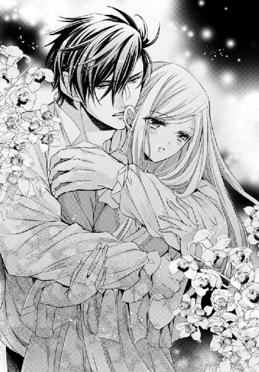
耳に唇が触れ、囁く声に身体が震える。
「あなたの妻になるためだけにここへ来たのよ...」
心臓の鼓動が早まる。
彼に聞こえてしまうのではないかと思うくらい大きく。
「強引に連れてきた」
「いいえ。私は私の意思で来たの。それだけは忘れないで」
「忘れるものか」
背後から、首筋にキスを受ける。
そっと触れる感触に鳥肌が立つ。
「母のドレスがよく似合う」
「デリアのドレスは動き易いけれど、心もとないわ。簡単に解けてしまいそう」
ガウンのように前を合わせ、胸の下でリボンで止めてあるから脱げることやはだけることはないのだけれど、そのリボンを解いてしまうと簡単に前がはだけてしまう。
「これが公式のドレス？」
「ああ。だがこの国ではあまり着用しないな。解けるのが怖いと思うなら、リボンの下にピンを打って止めておけばいい。今夜は必要ないが」
彼の手が、リボンの端を引く。
シュッと絹の擦れる音がして、それは簡単に解けてしまう。こうなると、ガウンを羽織っているだけと同じだ。
「下に着ているのか？」
「これ一枚でなんていられないわ」
下には、お願いして用意していただいたアンダードレスの薄物を着ていた。
でも、こうなることを待ち望んでいたので、硬いコルセットや面倒な下着はつけていなかった。
カゲツの手が、胸元に入り込み、それを確かめる。
「待っていてくれた、と思っていいか？」
硬い手のひらの感触が直に乳房を撫でる。
「何度も言わせないで...。でも立ったままでは嫌」
「もちろんだ」
そう言うと、彼は私を抱き上げベッドに運んだ。
柔らかな寝床に下ろされ、キスされる。
「ほんの数日だが、続きがしたくて死にそうだった」
「ドレスを破いてしまうのが怖いわ。これを脱いでいい？」
「脱がせてやろう」
彼に青いドレスを渡すと、白い薄物のアンダードレス一枚になる。その白さが、まるでウエディングのドレスのようだった。
「今日は声を殺すな。何も耐えるな。コウシ達の部屋はここから遠く、誰もここにはやって来ないのだから」
震えながら、私は頷いた。
「震えてるな」
「怖いもの」
「何故、と訊くほどヤボではない。恐怖など感じないほど溺れさせてやろう」
小さな前合わせのボタンを一つ一つ彼の指が外してゆく。
腰のくびれのところまで外しても、まだ彼はそこを開こうとはしなかった。
私の目を見ながら、合わせに手を滑り込ませ、形を確かめるようにそこを包む。
硬くなった胸の先が、包んだ手の指の間から零れる。
「柔らかいな」
手は感触を楽しみながらゆっくりと動いた。
開こうとしなくても、彼の手が動くと服は乱れて前を開けてゆき、すぐに胸は露になってしまった。
「あ...」
指から零れた先に、彼が口付ける。
舌で先を転がすように舐める。
明かりのある部屋で、その全てが見えてしまう。
「恥ずかしい...わ...」
「恥ずかしがることはない。俺が、お前を愛しているだけだ」
果実の皮を剥いて中身を取り出すように、両方の手を服の内側へ差し込み、中にある私の身体だけを抱き起こす。
服の肩が落ち、上半身を包むものはなくなった。
「あ...！」
丸みを帯びた膨らみは、ぽろりと零れ、彼の目の前に晒される。
「ジェレイラ」
舌が、私を舐める。
「ん...っ」
わずかな接触で、声が上がる。
吸い付かれ、嬲られ、ゾクリとする。
舐められていない方の胸にも、その感覚は伝わった。
「お前を『俺』の妻にする」
男の人の前に乳房を晒すなんて恥ずかしいけれど、彼ならばいい。
カゲツが触れてくれるだけで、身体の芯から甘い蜜が溢れ出すのは、彼を愛しているからだもの。
彼は下肢には手を伸ばさず、仰向けに横たわる私の、剥き出しの上半身だけをずっと愛撫し続けた。
指で、舌で、時には鼻先で、執拗なまでに胸の先をいじる。
そこだけをさっと触れられていると、もどかしさを感じた。
もっと強く激しくして欲しい。
でないと、身体の中に疼きばかりが溜まってゆく。
「あ...っ、は...ぁ...っ」
唇にキス。
額にキス。
首にキス。
腕を取られ、上げさせられ、内側の柔らかい部分にもキス。
「や...、カゲツ...っ」
胸の膨らみのすぐ横にもキス。
でも一番最初に私の熱を呼び起こした胸の中心にはキスは与えられない。
手も、まだ残っている腰の辺りに差し込まれるけれど、脇腹を撫で、脚の付け根を滑り、それ以上は奥に入ろうとしない。
身体はあっという間に過敏になり、より強い刺激を、より的確な場所に触れてくれることを望み始める。
「あ...、ぁ...」
身悶えて、声を上げ、彼のシャツを掴む。
口をだらしなく開いて、鼻にかかった甘い声で喘ぎ続ける。
ああ、そうか。
彼は私の声を聞いているのだわ。
あの夜。私が誰にも気づかれないようにと唇を噛み締めていたから。
感じていることを自分に教えろと言っているのだわ。
「カゲツ...」
だから名前を呼んだ。
あの時には呼べなかったから。
「カゲツ...、もっと触れて...。頭がおかしくなりそう...」
はしたなくても、思ったことは全部口にしてあげる。
「初めてで...、弄ばれるのに慣れていないのよ...」
「弄んでなどいない。お前を味わっている。自分が、この国の王族の娘をこんなに愛するとは思わなかった」
待ち望んでいた胸の真ん中に、彼が唇を沿え、先を吸い上げる。
「ああ...っ！」
もどかしさに耐えていたから、欲しいものを与えられた喜びに大きな声が上がってしまう。
身体の内側、彼を迎える場所の奥がヒクヒクと震えた。
「や...っ、だめ...」
「もっとしてくれと言っただろう」
「だめ...っ。こんな...」
カゲツは腰を撫でていた手をおろし、そのままそこに溜まっていた服も引き下ろした。
「いや...っ」
服が、全て脱がされてしまう。
下履きも何もかも、彼が私から奪ってゆく。
白い服はただの布切れになり、ベッドの外へ投げ捨てられた。
「見ないで...っ」
恥ずかしさに手で胸を隠し、身体をよじって横を向く。
カゲツは身体を起こして自分のシャツを脱ぎ、ベッドの外へ投げた。
「俺はくだらない因習も、身分も必要ない。お前は身一つで俺の妻だ。そして俺もまだこの身体一つでお前を抱く。ここで、この城で、俺達は二人で暮らすんだ」
彼は私の手首を捕らえ、ベッドへ張り付けるように大きく開いた。
「あ」
零れる乳房に舌を這わせ、さっきまでとは違う激しい愛撫を加える。
「あ...、あ、ぁ...」
舌はどんどんと下へ移動し、手首を捕らえていた手はそこを自由にする代わりに胸を揉み、先端を指で少し乱暴にグリグリと押し回した。
「あ...や...っ、そんなに強く...っ」
そっと触れられていた時にはもどかしさだった。でも強くいじられると快感と疼きが声を上げさせる。
快楽に伴って、下からは露が零れていた。
その濡れた場所に、カゲツの舌が近づいてゆく。
臍の下まで来ると、手は脚を捕らえ、今度は脚を大きく開かせた。
「いやっ！」
誰にも見せたことのない場所を彼が見つめている。そう思うだけで蜜が溢れる。
「見ないで...」
「綺麗だ。蠢く薄桃の花弁が、蜜に濡れて」
「言わないで...。ひ...っ！」
彼がその花弁に口付ける。
「や...、あ...」
舌が、花の上にある小さな蕾みを探りあて、弄ぶ。
吸い付きながらキスして、舌で転がす。
声にならない声が喉の奥に貼り付き、身体が痙攣した。
彼が舐めている場所から全身に痺れるような感覚が散ってゆく。
もう一度彼がそこを吸い上げた時、散っていった感覚が火花を散らして弾けた。
「あぁぁ...っ！」
ビクン、と身体が大きく跳ね上がり、火花は神経を灼いて私を絶頂へ連れていった。
「あ......」
張り詰めていた糸が、プツンと切れたように身体から力が抜ける。
「ここだけでイッたのか...」
彼の声が遠い。
返事をしようとするのに声が出ない。
荒く息づき、潤む目で、彼を見る。
これでいいの？ 悪いの？
もう終わり？
問いかける視線に、彼は微笑んだ。
「そのままでいろ」
カゲツは身体を起こし、ズボンの前を開けた。
仰向けになった私には見えない場所で、彼が自分のモノを引き出す気配がした。
恥ずかしくて、脚を閉じてしまいたいのに、その前にカゲツが身体を進めてくるから閉じることができなかった。
さっき舌が探り当てた場所に指が伸びる。
「......あ」
もう動けないと思っていたのに、また散らされる火花に快感が湧く。
「や...」
指は濡れた場所を撫で、その中に入り込んだ。
反射的に脚を閉じようとして、カゲツを挟み込む。
「あ...う...っ」
じゅくっと、いやらしい音がする。
抜き差しする指に、声が上がる。
頼りなくて、何かに縋りたくて、彼に手を伸ばす。
でも届く前に、ズキンとするような痺れが走り手が止まる。彼の指を咥えた場所は蜜を流しながら指を締め付けた。
カゲツは私が何をしようとしていたのか気づいたのだろう。宙に浮いたままの腕を掴んで彼の腰に届かせた。
掴もうとしても掴むところがないくらい引き締まった筋肉の上を指で掻く。
彼がもっと身体を近づける。
「膝を立てろ。片方でいいから...」
「力が...入らないわ...、無理...」
と答えると、彼は私の膝を抱えて脚を曲げさせた。
そして...。
「あ...」
何かが当たる。
「や...」
指よりももっと太く大きいものが押し付けられる。
教えてもらったわ。それは殿方の熱。夫婦の繋がりの証し。私の濡れた場所と、彼の猛る場所が一つになって、夫婦になるのよ。
それは誰もがすることだわ。
でも...、怖い。
「カゲツ...」
涙声で彼の名を呼ぶ。
「カゲ...あぁぁ...」
もう一度呼ぼうとした時、それは私の中に入ってきた。
「や...、大き...っ。中...」
曲げさせられた膝を掴み、彼が私の脚を持ち上げながら広げる。
彼に向かって伸ばしていた手がベッドに落ち、シーツに爪を立てた。
身体が開かれる。
内側に私ではないものが入ってくる。
「...ひっ」
彼が身体を揺らし、ベッドが揺れる。
揺れが私の感覚をおかしくする。
濡れていた場所は彼に吸い付き、捕らえるけれど、上手く迎えられずに彼が一度引き抜く。
「ああ...っ」
引き抜かれる感覚に鳥肌が立つ。
「ん」
再び彼はグッと中を目指し、ずるっとそのまま奥まで突き進んだ。
「ひ...っ、あ...。あ...、や...ん、ん...」
彼が動く度に声が途切れ、どんどんと深く迎え入れてしまう。
奥に当たり、更にそれを押し上げ、もっと奥へ。
腕が、私を抱き起こし、キスされる。
呼吸をするために開いていた唇に彼の舌。
柔らかな私の胸と硬い彼の胸と擦り合わされる。
すっぽりと腕の中に包まれたまま、何度も何度も突き上げられ、目眩がする。
「や...、カゲツ...。奥に...。ひぁ...っ」
繋がった場所が、二人の真ん中でぐちゅぐちゅと音を立てていた。その音が恥ずかしくて、身体が熱くなる。彼を締め付け、締め付けたままの私を彼が揺さぶる。
顔中にキスされて、そのまま二人、倒れ込む。
カゲツは私を押さえ付けると、そのまま深く貫き続けた。
「あ...」
声が嗄れてしまうほど声を上げ続けた後、身体の中に自分のものではない露が溢れてくるのを感じた。
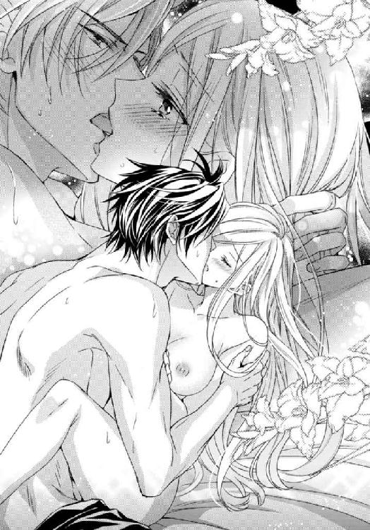
彼の動きが止まり、もう一度深く貫かれ揺らされる。
「ああ...っ！」
その揺れに、私が声を上げると、続いて溢れた蜜はそこから外へと流れ出た。
「う......」
彼が微かに唸った声が耳に届いた時、私は意識の闇の中へ落ちていった。
今度は、身体の力が抜けるだけでなく、全てが消えてしまったかのように。
私と世界の境界も消えて溶けてゆく。
カゲツと自分が一つになった。
これがその瞬間だわ、と思いながら目を閉じた...。
その夜から一週間。
私はとても幸福だった。
朝、彼の隣で目覚め、優しいキスと抱擁を交わす。
朝食は部屋で二人でとる。
近くに馬の牧場を持っているらしく、カゲツはコウシと共にそちらへ出て行ってしまう。
私はマヤと共に館に残った。
他にも、この館にはメイドや馬丁や給仕にコックなど、何人かの人間が働いていて、彼等は皆デリアの人間だった。
金色の髪の人達の中で生活してきた私にとっては、黒髪の人達の中で過ごすのは奇妙な感覚だ。自分だけが違う人間なのだという気がして。
国の違いというだけでなく、私は彼等とは違っていた。
マヤ達は料理や掃除ができるけれど、私は生まれてこのかた、やったことがない。それは召し使いの仕事であって、手を出してはいけないことだったからだ。
でも、ここではそれをしたいからと、マヤに教えてもらうことにした。
マヤと一緒に昼食のサンドイッチを作り、スープを作る。イモの皮を剥くなんて考えたこともなかった。
「おイモが滑るのよ」
昼食時、牧場から戻ってきたカゲツにそのことを報告する。
「手を切らないようにするのが大変だったわ」
「じゃあこのスープはお前が作ったのか？」
「そうよ。...味付けはシェフだけれど。それに、書庫の掃除もしたわ。ハタキをかけるのって面白いわね」
午後には、二人で馬に乗り、近くを散策した。
牧場、村、川べり。
穏やかな田園の中を二人で歩くのは楽しかった。
牧場はお父様の領地でも巡ったことがあったが、変装をせず村を二人だけでゆっくりと歩くのは初めてだった。
腕を組んでも、その名を呼んでも、咎める人はいないのだ。
川べりを進むと、船が通ったり、釣り人がいたりするのが見られた。水に手を浸したり、土手にそのまま腰を下ろしたりもした。
日が暮れるまでには館へ戻り、また四人で食事をし、夜は部屋で二人だけでワインを飲み、彼に身を任せる。
キスして、抱き合って、シーツの海に溺れるまで彼に貪られる。
翌朝にはまた彼のキスで起こされ、新しい一日が始まる。
マヤとは二人だけの時に色々な話をした。
ご夫婦がカゲツのお母様に付いてこの国に来たこと、この館は彼の父親がお母様のために用意したこと。
彼の母親はデリアでは神官の一族で、それなりの身分ではあるが、彼の父親との愛を選び、国に戻らずここで暮らすことを選んだこと。そのことを後悔せず、いつも毅然としてらしたこと。
カゲツは正式に結婚をせずに母を囲い者にした父親を嫌っていること。
以前、彼が貴族をあまり好いていないようなことを言っていたのは、そのせいだったのね。
このままここで暮らすこともできたのに、彼は母が立派な息子を生み育てたことを証明するために、王都の知り合いの家へ移ったこと。これは彼の口から既に聞かされたことだった。
「時折ここへ戻ってはいらっしゃいますが、もうお戻りにはならないかと思ってました」
マヤは遠い目をして、ポツリと言った。
「何故？」
「...新しいお仕事で、遠くの戦場へ行かれましたので。北の方の戦場ですわ」
彼女の悲しげな顔で、そのことをとても心配しているのがわかった。
カゲツは三峰山脈の戦場へ出る騎士だったのだ。
そうね。
エルゲン様の城にいたのだから、当然だわ。
彼がここにいるということは、勝手に軍を脱走したということにもなるのだろう。
でもそのことを、私は彼に尋ねなかった。話題にもしなかった。
幸福な夢を語るだけで、彼が触れたがらないご両親のことも訊かなかった。
ただ、今の幸せを満喫し、彼の愛情を受け取ることだけに終始した。
毎日、微笑みあって過ごしたかった。
だって、この幸福には終わりがあるから。
彼の妻になるためにここまで来て、彼と日々を過ごしたけれど、永遠ではないと最初から決めていたから。
夢はいつか覚めるもの。
それでもいいから、と思ってここへ来たのだもの。
彼の妻になって一週間だけ、その日々を過ごそう。その一週間は一生にも劣るまい。
だから、一週間目の夜、私は『そのこと』を彼に告げた。
「明日、ここを去るわ」
「去る？」
彼は意味がわからないというような顔で私を見た。
夕食を終えて寝室に戻り、昨日までは明日は何をしようかと笑い交わして話していた時間。ソファに腰を下ろしてすぐに告げた。
楽しい時間に足を踏み入れると、気持ちが揺らいでしまうから。
「エルゲン様の城へ戻るの」
「...何を言ってる」
冗談だろうという表情。
私もそうだったらいいのにと思うけれど、これは真実。
「城へ戻って、エルゲン様と結婚するわ」
並んで座っていた彼が、身体ごとこちらへ向き直り険しい目を向ける。
「王妃の座が捨て切れなかったか。ここの暮らしでは満足できなかったか」
彼を怒らせるであろうことは、わかっていた。
でも言わなければならない。
「いいえ、ここでこのまま暮らせたら、きっと幸福だろうと思うわ。私は」
「私は？」
こくりと頷く。
「でも、私だけが幸福になることはできないの」
「誰を幸福にするんだ。エルゲンか？」
「いいえ。国よ」
不快そうな顔をしてはいたけれど、彼は激高するようなことはなかった。
ちゃんと聞いてくれる気持ちがあるのだ。だから続けた。
「何度も話したことだけれど、国には王が必要で、今の王はご病気で長くはないらしいの。だから、跡継ぎが必要なの。エルゲン様が王位を継げば、この国は安定するわ」
「たった一人で全てが変わるものか」
「変わるわ。それが王よ。もし王が不在になれば、人々は頼る先をなくしてしまうわ。それだけでなく、王のいない国を狙って他国に攻められることもあるでしょう。北の一部でだけの戦争は、国中に広がるかもしれない。エルゲン様は戦争を終わらせようとしてらっしゃる。私が嫁ぐことで、彼は王位という権力を手に入れてそれを成し遂げることができるでしょう」
「王でなければできない、と？」
「王でない者と和平の交渉をする国はいないわ」
私は笑った。
「ここにいれば、私はあなたの妻として幸福に暮らせる。でも、北での戦線が拡大すればここだって平穏ではいられなくなる」
「北は遠い」
「でも同じ国よ」
彼は静かな息をつき、立ち上がるとワインのボトルとグラスを持ってきて私の分も注いだ。
唇を湿らすように、わずかに口を付けてから、グラス半分ほどを一気に飲み、私を見る。
「国のために犠牲になるのか」
「いいえ。あなたのためよ」
「俺の？」
「あなたが暮らすこの国を守りたいの。いつか...、私ではない者が生むかもしれない、あなたの子供を守りたいの」
「俺の子供はお前にしか生ませない」
「それは無理よ」
嬉しい言葉だけれど、やんわりと拒絶する。
「私が自分の役目から逃げ出せば、エルゲン様は王になれない。王が不在になれば国が荒れる。他の者が王位を継ぐ可能性はあるでしょうけれど、現王の子供がいるのにもっと血の遠い者を選ぶとなれば、支持派は割れ、これも国の荒廃に繋がるわ。そうなれば外国に攻め込まれるかもしれない。国のことだけでなく、私がエルゲン様と婚約しておきながら逃げ出せば、父や、一族はその責めを受ける。家族の不幸がわかっていて、自分だけ幸福にはなれないわ」
「王位が、王妃の座が欲しいだけじゃないのか？」
私はまた笑った。
彼が知らないことに。
「王位がどんなものだと思うの？ 毎日美味しいものを食べて、綺麗に着飾って？ そんなものじゃないとあなたは知ってるでしょう。私に学べと言ったあなたなら」
「為政者として必要な知識を口にしただけだ」
「そうね。でも私はそれ以外のことを知っているわ。王位に就く者は、愛のある結婚を望んではいけない、と。エルゲン様もエリーゼという女性との結婚は諦めるでしょう」
「諦められた者はどうする？」
「...忘れてくれていいわ」
「忘れる？」
「だって...、ただ一人のものにはなれないのだもの。覚えていてとは言えないわ。忘れて、他の人と幸せに...」
言いかけてぽろりと涙が零れる。
そんなこと、望んでいないから。
「他の方と幸せになって欲しいわ。そうすれば、私はその幸せを守れたのだと思えるから」
「何故自分の幸福だけをつかもうとしない」
「あなたを愛しているからよ」
「俺を...？」
「王位継承者の婚約者を連れ出して、あなたが無事でいられると思う？ それだけでも、私は戻らなくちゃ。あなたが素知らぬふりで仕事に戻っても、それは戦場へ行くことでしょう？ だとしたら戦争を終わらせるために、やはりエルゲン様に王になっていただかなくては」
「それでも...、お前を愛していれば、俺は一人でもここに残ってお前を見守るしかない、ということか」
彼は、グラスに残っていたワインを飲み干し、もう一杯つぐと、それもまた飲み干した。
「王を不在にさせないために、王族は継承権に縛られ、国に縛られる。自分の望む生活を送ることはできない。そしてそれを愛する者は孤独に耐えてでも見守るしかできない...」
「カゲツ」
彼は私の手を握った。
「勝手に城を出たのに、戻れると思うか？」
「手紙を置いてきたわ。戻る、と」
「最初から決めていたわけだ」
「ええ。最初から決めて、あなたに身を任せたわ。私は打算的で悪い女だから、私が傷物になってもエルゲン様は私と結婚しないわけにはいかないと知っているの。彼にはちゃんと愛を向ける場所があるから、私が罪を感じる必要がないとも知っている。この話を先にすれば、あなたが私を求めないことも知っていて黙っていた...。酷い女よね？」
「お前の心は？ ジェレイラ、それではお前の心はどこにある？」
伝わる手の温もり。
あなたはまだ私を気遣ってくれるのね。この場ですぐに叩き出されても仕方ないような悪い女なのに。
「...いいの。私はあなたを愛して、あなたに愛された。こんな幸福なことはないわ。それに言ったでしょう？ 私は結婚には運がないって」
だから、握られていない方の手で涙を拭った。
黒い瞳に向かって、微笑んでみせた。
私は大丈夫、というように。
この心の中が、こんなにも満ち足りているのを、あなたに見せてもいいくらいだわ。
「お前が...出て行くのならば、俺もここを去ろう」
「軍に戻れる？」
「北へ行く」
今度は私が彼の手を握る番だった。
「私のことがなければ、あなたは罰せられることはないわ。私、誰と城を出たかは書いてきませんでした」
「元々俺は北にいた。ただ、騎馬が負傷したので戻っただけだ。元にいた場所に戻り、己のなすべきことをする。...お前がそうするように」
「カゲツ...！」
私は彼に抱き着いた。
「誰のものになってもいいわ。私を嫌ってもいい。でもどうか、無事で。生きてこの館に戻ってください」
「ジェレイラ」
「あなたが戦わなくて済むように、私も出来る限りのことをします。あなたと、あなたの愛する人達のために」
彼が私の顎を取って顔を上げさせる。
黒い瞳。
これをよく覚えておこう。
これから、夜の闇に目をやる度、この瞳を思い出せるように。
「お前を愛している。それを忘れるな」
「決して。...私もあなたを愛していたと覚えていて。新しい人を好きになっても...」
交わす口づけはこれが最後だろう。
この腕に身を任せるのも、これが最後だろう。
それでも後悔はしない。
結婚には向かない女だったかもしれないけれど、恋はした。こんなに最高の。
「明日の朝、送るための馬車を用意しよう。その馬車に乗るまで、お前は俺の妻だ」
この幸福を忘れなければ、きっと生きていける。
「...はい」
どんなところでも...。
翌朝、私は一人で彼の用意した馬車に乗った。
ここへ来る時に乗った小さなものではなく、とても立派な。同乗したのはマヤで、彼女が私を送り届ける役目を負った。
彼は、彼女に真実を告げたのかもしれない。
私が彼の妻にはなれないことを。
それから、彼は館の前で私に別れを告げ、優しいキスをくれた。
「生きて戻れるように祈ってくれ」
「祈らないわけがないわ」
それが私達の最後の会話だった。
もう、愛しているとは言わなかった。
また会いましょうという言葉は言えなかった。
馬車に乗り込んだ時から、私はまた公爵家の令嬢に戻る。
エルゲン様の婚約者に。
カゲツは全てを手配してくれていて、馬車は途中二度宿で休み、あの城へ戻ってきた。
「ジェレイラ様！」
迎えに出たドライガー夫人は、私に駆け寄ったが、傍らに立つマヤに目を留めると表情を硬くした。
どこの誰とも知れぬ者を見たのだから当然だろう。
「姫様のことは私がご説明いたします。長旅でお疲れでしょうから、どうぞお部屋で休ませてさしあげてください」
マヤは、ドライガー夫人の前でも臆することなくそう言った。
彼女は、きっととても芯の強い女性なのだろう。
「...わかりました。伺いましょう。マリ、お嬢様をお部屋に」
「はい」
空っぽの城。
迎えの中になかったエルゲン様の姿。
咎められることもなく戻される部屋。
退屈だった日常にまた引き戻されたのだと実感する。
これからは、私が二度と逃げ出さないように監視をつけられるかもしれない。それでも文句は言えないわね。
マヤは、この城に二日ほど滞在した。
その間、ドライガー夫人と色々と話し合っていたようだが、私の耳にその内容が届くことはなかった。
彼女がここを去る時、カゲツに伝言はあるかとこっそり尋ねられたが、そんなものは何もなかった。
「生きて、お幸せに、と」
それ以外の何が望めるだろう。
私は彼を裏切ったのに。
自分で選んだことだから、私は王妃になるための勉強に勤しんだ。
今までのようにドライガー夫人に相手をしてもらうだけでなく、ちゃんとした教師を呼んでもらって。
何も考えたくないし、考えなくて済むようにするためには、勉強するのが一番だった。
そうして十日ほど過ぎると、夫人はここに来客があることを告げた。
やっとエルゲン様がいらっしゃるのかと思っていたら、それは思いもよらない人物だった。
「ジェレイラ！」
「ミリア！」
滑り込んで来た馬車から、迎えに出た私の前に飛び出してきたのは親友のミリアだった。
「あなた、何故ここに？」
友人の変わらぬ姿に、胸が熱くなる。
「あなたに会いに来たのよ、ジェレイラ。あなたと過ごすために」
「でもどうして？」
「アーサーが、北へ行ったの」
彼女は少しだけ顔を曇らせて言った。
「アーサーが？ でもあなたの婚約者は外交官で、戦場へ出る必要は...」
「ええ。だから戦いに行ったのではないわ。外交をしに行ったのよ」
「外交...？ それじゃ...」
「和平交渉の使者として」
抱き合う私達の背後で、ドライガー夫人が小さな咳払いをした。
「どうぞ続きはお部屋の中で。お茶を用意しておりますので」
促され、私達は城の中へ移動した。
彼女のために用意したお茶を前に、もう一度再会を喜ぶ言葉を口にして、手を取り合う。
それから会話を続けた。
「あなたが、陛下のご子息と婚約したなんて知らなかったわ」
「まだ公式ではないから...。でもあなたはどうしてそれを知っているの？」
「アーサーから聞いたのよ。私もここへはお役目で来たの」
「役目？」
「エルゲン様の婚約者、未来の王妃のお相手をするようにって」
彼女は侯爵家の娘であり、外交官の妻となる女性だから、その役目に選ばれるのは当然かもしれない。
でも私にとってこの人選は幸運だった。
「ミリアはエルゲン様にお会いした？」
尋ねると、彼女は首を横に振った。
「いいえ、一度も。あなたは？」
「実は私もお会いしたことがないのよ。ここには肖像画すらないわ」
「まあ、不思議ね」
彼があまり幸運な出自ではないからのようだと答えると、彼女は黙って頷いた。
肖像画一枚を描かせるのにどれだけ時間とお金がかかるか知っているからだ。貴族以外の人間には難しいこととわかってる。
彼女も貴族だから。
「お城は大騒ぎよ。あなたとエルゲン様のことで」
「私達？」
「王位継承者としての発表があったの。議会も、他の王族もそれを認めたって。その...、陛下のご加減があまりよろしくないから、他に選択肢がなかったのね。外戚で男性といえば、一番近くて陛下の従兄弟の息子さんのロードス様で、今はまだ四歳だもの。あなたにはよくわかっているだろうけれど、独身の女性ではあなたと、あなたの一つ下の従姉妹のシェリル様だけ。でもシェリル様は婚約済み」
「婚約なさったの？」
私がここに来る前にはお相手はいなかったのに。
「あなたが姿消してすぐにね。選ばれなかった、と言われる前に断ったことにしようとしたのではないかしら？」
二人の婚約者候補がいて一人が選ばれれば、もう一人は選ばれなかったことになる。それはあまりよろしくない噂のもとになるから、候補者になる前に嫁ぎ先が決まっていた、ということにしたかったのだろう。
私との婚約がすぐに発表されなかったのは、そういう意味合いもあったのかも。
「陛下が外にお子様を作ってらしたなんて、私全然知らなかったわ。ご結婚できない身分の女性でも、近くに住まわせることぐらいはできるでしょうし、それならもう少し人の口に上っていたでしょうに」
「男の子がいらっしゃったからじゃない？ 前の王様にはお子様がいらっしゃらなかったから、争いの種になると思われたのよ」
「それなら、前の王にお子様がお生まれになったら、呼び寄せるつもりだったのかも。それなら問題は少ないもの」
「そうね。お子様がいらっしゃらないから、王弟であった陛下も王城から出られなかったわけだし」
お互い、不自由な身の上ね、というように彼女は苦笑した。
「早く、戦争も終わって、問題が全てなくなればいいわ。アーサーの話だと、争いの原因だった鉱山を共同開発にする案が出ているんですって」
「共同？」
「ええ。掘り出される鉱石は全て売却して、その益を半分にわけることにするの。それならばどちらにも問題はないだろうって。...少しはあるかも知れないけれど、それは話し合う余地があるでしょう？ あちらだって、もう戦争は嫌だと思ってるに違いないもの。この和平交渉が上手くいったら、私もアーサーと結婚するわ。あなたと一緒に」
「一緒？」
「そうよ、一緒よ。ああ...、よかったわ。私の大切なお友達がやっと幸せな結婚ができることが決まって」
彼女は何も知らないから、心から喜んでくれた。
「今までの男達は皆必要のないものだったのよ。あなたは王妃になるために、婚約に失敗していたのだわ」
親友である彼女に真実が話せないのは心苦しかったが、この秘密は決して人には言ってはいけないこと。
私にカゲツという愛する人がいることも、エルゲン様にエリーゼという愛人がいることも。
「アーサーの話だと、エルゲン様は厳しい方でいらっしゃるけれど、考えのしっかりしたご立派な方らしいわ。ジェレイラもきっと幸せになれるわ」
「そうね。立派な王妃になれるように努力するわ」
無味乾燥な日々だと思っていたここでの暮らしは、ミリアのお陰で随分と楽になった。
でも、私はもう馬屋には近づかなかった。
ミリアは、もうすぐに和平がなると言っていたけれど、私達は結局そこで一カ月近くを過ごすことになった。
王都から離れたこの場所では、悪い噂は届かないけれど、いい噂も届かず、私達は随分とやきもきした。
お互い愛する人の無事だけを祈りながら、敢えてその話題は口にしない。
私がカゲツが戦う姿を想像したくなかったように、彼女も交渉が決裂してアーサーが酷い目にあわされることを考えたくなかったのだろう。
でもその間に、結婚の準備は進んだ。
ドライガー夫人から、王城で私とエルゲン様の婚約の正式な発表がなされたことを知らされ、この城に花嫁衣装を作るための仕立て屋が訪れた。本人達が不在なのに公式発表がされるというのもおかしな話だけれど、王族ならばありえること。婚約も国策だから。
ミリアが『一緒に』と言ったのは誇張でも比喩でもなく、どうやら本当に合同の結婚式を行うことになっているようで、彼女のドレスもここで作られることになった。
ミリアはそれをとても喜び、ドレス選びに熱中していた。
私があまりドレス選びに興味を示さないことを、今までの失敗のせいだと思っていて、今度は上手くいくわと繰り返した。
でも、白い花嫁衣装よりも、私の心を動かすのは夜の闇。
星の瞬きを宿す夜空に、光を放つ黒い瞳を思い出す。
私の肌を情熱的に貪った手を、指を、思い出す。
いくら時間が経っても忘れることなどできはしない。それどころが日がたつにつれ、思い出は深く刻まれてゆく。
彼の消息すら知る術はないのに。
仕事で出掛けているアーサーからミリアにも、手紙はなかった。
やっと、その最初の一通が届いた日、私達はこの城を去る日が来たことを知った。
「調印が終わったわ！ アーサーが戻ってくるのよ。彼はデリアへ行く仕事が残っているけれど、すぐに片付くことだから、それが終わったら王都で結婚式ですって。見て『全ては準備万端、姫君達はそのまま結婚式の式場へ入るだけでいいようにしてある』と書いてあるわ！」
彼女の言葉通り、その手紙が届いてから数日後、私達は王都へ向かう馬車に乗った。
手紙通り式場へそのまま、ではなかったけれど。
王都で彼女と別れてから、私はお父様に連れられ、陛下に結婚のご挨拶に向かわねばならなかったからだ。
陛下は、お式には出られないほど、お身体が悪かった。
王城の奥、豪華なベッドに横たわる痩せ衰えた白い髭の大叔父は、それでも穏やかな顔をしていた。
「ジェレイラ。お前が私の娘になってくれることを、心から喜んでいる。どうか、エルゲンを頼む」
皺だらけの手は思いもよらぬほど強い力で私の手を握った。
「あれを私の息子としてここに迎えられるのは、お前のお陰だ。お前があの子と結婚したいと言ってくれたあの日、愚かにも私はこうなることを夢見ていた。もしお前と結ばれれば、それだけでもあの子によりよい地位を与えられるのに、と」
誰かが、私がこの結婚を望んでいると陛下に伝えたのだろう。それは真実ではないのに。
でもお身体の悪い陛下に、それを訂正することはできなかった。
「あの子もずっとお前を想っていたのだろう。...よかった。この日が来て本当によかった。これで思い残すことはない」
エルゲン様と私はお会いしたこともないのだから、彼が私を想うこともないだろうに。
お部屋を下がると、お父様は悲しげな顔で首を振った。
「お前には悪いと思うが、陛下がこの状態では日を急がねばならない。既に全ては整えられている。来賓も到着済みだ。式は明日。それでいいな？」
覚悟は決めていた。
「もちろんです。私に迷いはございません」
運命は、ずっと私に優しくなかった。
女性として一番の夢である結婚も、私には幸福とは結び付かなかった。
でももういい。
この心に彼がいるから。
この身体が、彼を覚えているから。
「私は私の務めを果たします」
今も、私はカゲツただ一人の妻だから...。
翌日、私は王城に新たに与えられた私の部屋で、侍女達の手で美しく飾られた。
金の髪に櫛を入れ、ティアラとベールを被り、ミリアが選んでくれた真っ白なドレスに身を包む。
大きく開いた胸には、公爵家の私でさえ初めて見るような豪華な宝石のネックレス。
普通の女性ならば、それだけでも胸が躍る支度。
それを手伝ってくれたのは、知人の公爵夫人だった。
彼女は私の美しさを称え、良縁だと褒めそやした。
「あなたが王妃ならば、うるさい人達も黙るしかないわね」
エルゲン様とは、結局会えずじまいだった。
彼は昨日まで公務に追われていたらしい。
「奥様。エルゲン様とはお会いになられました？」
公爵夫人に尋ねると、彼女はもちろんと頷いた。
初めて、彼に会った人と出会ったわ。
「どのような方でした？」
「...容姿に異論のある方はいらっしゃるでしょうが、気になさるほどのことではありませんわ。王としての手腕は発揮なさったのですし」
言いにくそうにそう言うところを見ると、エルゲン様はあまり見目のよい方ではないのかも知れない。
でも、その人と一生を共に過ごさなければならないのだ。
お会いしたら、私は正直に言おう。
あなたに愛人がいることを許します。私にも愛する方がいらっしゃるから、と。
控室を出て、夫人と共に父の待つ部屋へ。
「美しいよ、ジェレイラ」
お父様に手を取られ、緋色の絨毯の上をゆっくりと進む。
立ち並ぶ人々の群れ。
歓喜の言葉と祝福の声。
それらの人々に優雅な笑みを向けて更に進む。
決められた場所で花婿を待っていると、金色の髪の年配の男性が姿を現す。
一瞬、エルゲン様かと思ったけれど、それは介添えの公爵の姿だった。
私の花婿は彼の背後からゆっくりと歩いてくるあの人物。
「...黒」
金のモールの付いたぴったりとした黒い軍服に身を包んだ長身の男性。
その人は、年寄りでも、金髪でもなかった。
「公爵殿、娘御をもらい受ける」
父に手を差し出し、私の手を受け取る。
お父様が彼を見て、満足げに微笑む。
「エルゲン様、どうぞ娘をよろしくお願いいたします」
この方が私の夫？
この方がエルゲン様？
「震えず、顔を上げて進め。お前が俺の妻となって幸福だと、皆にしらしめるように」
あり得ないわ。
だって、彼は...カゲツだもの。
黒い髪の、デリアの血の、カゲツという名前を持ち、館も構えている人よ。
何故誰も彼がここにいることに疑問を抱かないの？
もしかして、二人はとてもよくにているの？
「カゲツ...？」
その名を呼ぶと、彼はこちらを見て微笑った。
「これからは、その名は二人だけの時にしか許されない」
その笑みは、彼のものだった。
「何故？ 本当にあなたがエルゲンなの？ だとしたらどうして教えてくれなかったの？」
「説明は後でしてやる。今は笑え」
人々の前を歩き、言葉を交わすこともできず、誓いの場へ進む。
頭の中は真っ白。
介添えで控えていた公爵夫人の声も、司祭の声も遠い。
かろうじて、「誓いますか？」と問われた言葉に「誓います」と答えた。
誓いの口づけを求められ、彼がベールを上げる。
確かに、そこに彼がいる。
もういいわ。
神に愛を誓うのがあなたなら、これが芝居でも、あなたの企みでも、私は喜んで誓うわ。
「永遠の愛を、お前に」
優しく触れる唇が、私の望んだ人であるなら。
「酷いわ！ 私を騙したのね！」
でも二人きりになれば話は別よ。
「騙してなどいない。お前に出会った時、俺の名はカゲツ・シーレンだったし、それ以外を名乗るつもりはなかった」
「でも私がどれだけ悩んでいたか、あなたと別れることを悲しんでたか、知っていたでしょう？」
パーティが始まるまでに着替えをしなければならないのだが、私は彼と話があるからと人払いをさせた。
「王にはならないつもりだった。エルゲンは、父親が勝手に決めた名だ。カゲツ、ではエジルの王子に相応しくないから」
「でも...！」
「落ち着け。ちゃんと全て話してやる」
彼は私を抱き締め、椅子へ座った。
「俺の母親はデリアの神官の娘だった。父親がデリアに来た時に知り合い、恋に落ちた。だがお前は理解しているようだが、父は当時の王子に子ができるまで結婚を望まなかった。その時でさえ、歳がいっていたから、まさか母に子ができると思っていなかったのだろう。だが母は俺を身ごもり、国にいられないとこちらへ移った」
そして恋人を頼り、あの館を与えられたのだ。
二人は王に王子ができたなら、結婚しようと思っていたのに、生まれたのは男の子、新たな王位継承者だった。
トラブルを避けるため、二人の存在は秘密にされ、それでも王に男の子が生まれればと願っていた。
だがそれよりも先に彼の母が亡くなった。
「俺は王族だの王位継承だの、くだらないことだと思っていた。そんなもののために、自分は親から捨てられたのだと思った。俺を育てた者は母にしろ、マヤにしろ、デリアの者で、デリアには王族というものがないから」
ドライガー夫人が、エルゲン様は王というものを理解していないようなことを言っていたのは、きっとそのことね。
「それであなたは、父親に自分が立派に育ったことを示すために、王都へ来て騎士になったのね？」
「そうだ。だが御前試合で勝利したら、目的は果たせたと、デリアへ向かうつもりだった。それなのにこの国に残っていたのは、俺が何者かも知らず、俺の妻になりたいと言い出した女性がいたからだ」
「...エリーゼ？」
そうだわ。彼がエルゲンなら、彼にはエリーゼという愛人がいたのだわ。
「そのことについては、面白いから誤解させていた。エリーゼは俺の騎馬だ。お前も見ただろう？ 初めて出会った時に俺が世話をしているのを」
「馬...？」
「館で生まれた馬で、ずっとあれに乗っていた。負傷しても乗り換える気になれず、王都の医師に診せた」
医師に診せた...。
「ではその求婚してきた女性とは別れたの？」
「いいや」
「...今も付き合っているの？」
「今俺の腕の中にいる」
「からかわないで」
「からかってなどいない。それはお前だ、ジェレイラ」
「私...？」
彼は真顔で頷いた。
「御前試合が終わった後、小さな娘が俺のところに来て、俺と結婚したいと言ったのだ。それが公爵家の娘で、王の血を引く者だと知って驚いた。俺を拒んだ王族が、俺を望んでいる。そのことに、自分にも価値があるような気にさせられた」
たった一度だけ、私から結婚を申し込んだ人がいた。
名前も、顔も覚えていないけれど、御前試合に出ていた優しい騎士。
あれがこの人だと言うの？
「もちろん、その時は結婚相手としてなど考えていなかった。だが、前王が子をなさぬまま亡くなり、父が王となり、子を持たぬまま病に倒れた時、全てが変わった。父が、俺にエルゲンの名と、王子の地位を届けにきたのだ」
「ずっとしたかったことをなさったのね？」
「俺はそうは思わなかった。...お前と一緒だな。自分が『王』というもののための道具にされたと思った。まして、条件は王族の娘との婚姻だった。俺は、自分の愛する者は自分で選ぶ。愛しいと思った女以外妻にしたくはない」
言いながら、彼の手が強く私を抱く。
「そこで俺がお前を指名した。あの時俺を求めた少女ならば結婚してもいい、とな」
陛下は...、それを言っていたのだわ。
ご挨拶の時の言葉は、そのことだったのよ。
彼が王子になれなくても、公爵家の私と婚姻がなされれば、彼に爵位を与えられるのに、と夢見たのだわ。そして彼が私の名前を出したことで、ずっと私を想っていたと思ったのね。
「それでも、結婚をする気はなかった。あの時は可愛らしい少女だったが、育てば鼻持ちならない貴族の娘になることもある」
「だから私に会わなかった」
「戦いに忙しかったということもある」
「和平のために？」
「それぐらいはしてもいいと思っていた。自分にできることだから」
さらりと言ってのけるところが彼らしい。
そして実現してしまったことも。
「ジェレイラと再会し、俺はお前を愛した。だからこそ、王妃という立場より俺を愛して欲しいと思った。お前が俺と共に来た時、俺は父親に勝ったと思った」
「...勝つ？」
「変な言い方かもしれないが、母に我慢をさせ続けた父と違い、俺はお前に我慢などさせず、自分の妻にできたと思ったんだ」
「では、戻ると言った私に失望したでしょうね」
「いいや。お前は俺に気づかせた。母は不幸ではなかったのかもしれないと。愛する者の立場を思いやってあの館に引きこもっただけで、捨てられたわけではなかったのかもしれないと。言っただろう？ 『王を不在にさせないために、王族は継承権に縛られ、国に縛られる。自分の望む生活を送ることはできない。そしてそれを愛する者は孤独に耐えてでも見守るしかできない。愛しているから、残って見守るしかない』と」
「それはあなたの言葉だわ」
「お前の言葉で気づいた。それが母の気持ちだったのだと」
あの時、この人は自分のことだけではなく、お母様のことも思ってたのね。
「ジェレイラを送り出したあと、北へ行く前にここへ来て、俺は初めて自分や母のことをどう思っているか聞いた。それで誤解が解けた。父は父なりに母を愛し、前王に男子が生まれれば俺達を迎えるつもりだったこと、もし生きていれば、母を王妃として迎えていただろうということを」
「あなたのお母様を愛していらしたから、ずっとご結婚なさっていなかったのだわ」
「...そうだろう」
彼はそれを認めるというように頷いた。
「見送りの時、本当は自分がエルゲンだと言おうかと思った」
「言ってくださればよかったのに」
「二つの理由で、それが口にできなかった。一つは、俺がお前を手に入れて王位継承者になろうとして画策したのだと思われたくなかったから」
「そんなこと思わないわ。あなたが私を愛してくれたことを疑わないもの」
「それはよかった。もう一つは、ここでカゲツとして別れれば、もしも俺が戦場で亡くなっても、お前はどこかで俺が生きていると思ってくれるだろうと思ったからだ」
その言葉に、私は彼を見上げた。
「その危険があったのね？」
「この間までは。だがもう心配はない」
それも黙っていたなんて。
彼が私を連れて行ったのは、彼にとっても自分の人生をかけていたのだろう。戦況が厳しい時に姿を消せば、敵前逃亡と思われてしまう。それなのに、私を選んでくれたのだ。
でも、この人は秘密が多過ぎるわ。
「...ひょっとして、私のところにミリアが来たのはあなたが手配したから？」
これも秘密？
「親友だと言っていただろう？」
当たりだ、と言う顔で答える。
「ああ、カゲツ...」
酷いけれど、優しい人。
自分から、彼の唇に唇を重ねる。
「あなたのしたことは酷いことだけれど、許すことはできるわ。だって、私の夫だもの」
「そうだ。お前は俺のただ一人の妻だ」
今度は彼からキスが贈られる。
目を合わせてから微笑み交わし、抱き合って、温もりを感じ合う。もうそれを誰に恥じることもなく、気兼ねすることもないものなのだと実感する。
もう一度、深く口づけを交わした後、私は彼の腕の中で囁いた。
「私、訂正するわ」
「訂正？」
「私は結婚運のいい女だって」
だって、花嫁となって最愛の人の腕の中にいるのだから。
これからはずっと、あなたの側にいられるのだから...。
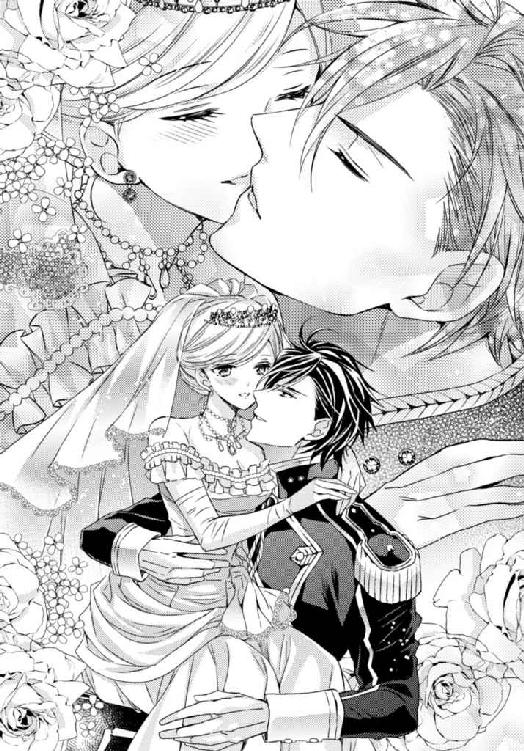
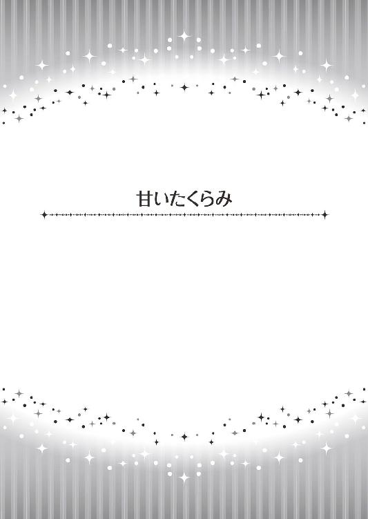
「殿下はまたいらっしゃらないの？」
王城の私室。
お茶に招いたミリアの言葉に、私は苦笑いで応えた。
私の親友は、結婚してからも一番の友人で、王城の私の部屋へ個人的に来訪できる。
彼女に、私は自分に起こった全てのことをもう話していた。
エルゲンがカゲツと名乗っていたこと、彼が王子と知らず、彼を愛してしまったこと。全てを諦め、彼についていったこと。
そしてそのエルゲンが、私が初めてプロポーズした騎士だったことも。
だから彼女は今もプライベートな話題を気兼ねなく話し合える相手で、彼女の方も遠慮などしなかった。
「ええ。ちょっと遠出で」
と答える私に、取り繕うことなく驚き、呆れた顔もする。
そして実際、その気持ちを口にも出した。
「呆れたわ。これで五度目でしょう？ 新婚ホヤホヤなのに。今度は一体どこまでいらっしゃったの」
「レゼンよ、温泉地の」
「温泉地？ そんなところに何をしにいらっしゃったの？ まさか女性を連れて？」
「女性を連れて、というのは当たっているわね」
「おお、ジェレイラ」
驚く友人に、慌てて付け足す。
「人間の、ではないけれどね」
「それはどういうこと？」
「馬よ。怪我をした軍馬を何頭か連れて行かれたの。温泉が怪我に効くのですって」
呆れた、という顔で彼女はため息をついた。
「私が先日伺った時には、王子は馬具の見本市に行かれていたわね？」
「ええ」
「その前は馬の競り市」
「ええ」
「その前の時には子馬の出産のために、ご自分の館へ戻られたとか」
「館の馬は亡くなった彼のお母様がお持ちになった馬だから、大切にしているの。それに軍馬も。和平がなったとはいえ、何があるかわからないでしょう？」
「馬が大切なのは私だってわかるわ。でも、それは王子の仕事ではないのじゃなくて？ 少なくとも、新婚の夫が妻より馬を大事にするなんて許せないわ。それでなくとも、お仕事はお忙しいのでしょう？」
怒ったような口調に、苦笑いするしかない。
「彼が優秀だったから仕方がないのよ」
私と結婚して王子としての地位を得たカゲツ...、いえ、エルゲンは、朝から晩まで働きづめだった。
和平の調印が済んで結婚したのだから、戦争もなくなり、私も二人でゆったりとした時間が過ごせるものと思っていた。
けれど、彼は優秀過ぎたのだ。
彼が城に入るまでは、王子としての教育も受けていない子供、腕の立つ騎士とはいえたかが軍人と思っていた古株の家臣達は、彼に王子としての務めが果たせるのかと疑っていた。
エルゲンを歓迎しない者も、まだ多かったのだ。
けれど、彼が城に来て、ご病床の陛下と和解なさったことで陛下のお手伝いをすることになると、色々状況が変化した。
まず、完全な親子の和解で、陛下にご気力が戻られたのか、体調が持ち直したこと。
元気いっぱいというほどではないけれど、少しなら執務をこなせるほどに回復なさった。
これで、エルゲンは大きな後ろ盾を失わずに済んだのだ。
彼は父親と長く話し合い、その愛情を理解し、父親の手助けをしたいと思うようになり、政務を手伝うようになった。
優れた軍人は優れた為政者になれるとは限らない。
けれど、エルゲンはその両方に才があった。
彼が王城で生まれた子供ではないから、異国の容貌を持っているから、どのような考えを腹に抱えているかわからないからと彼を王子として認めることに反対していた人々も、その手腕を認めざるを得ないほどに。
こうなると、現王がお倒れになった後、自分達を、この国を背負ってくれる新王をないがしろになどする訳もなく。むしろ、よりよい王になっていただきたいと、仕事や教育が施されるようになった。
そのせいで、王城で親交を深めたいと願う人間が出てくる。
つまり、彼はお父様と過ごす時間と、仕事と、勉強と、お付き合いとに追われるようになってしまったというわけだ。
その中で唯一の休息と言っていいのが、馬に関すること。
エルゲンはとても馬が好きだった。しかも馬は国にも軍にも重要な財産。彼が馬のことで出掛けるのは半分公務と言ってもいい。
誰に気兼ねすることなく自分の楽しみに向かえる。
それを邪魔することなど、私には出来なかった。
「あなたは甘いわ、ジェレイラ」
その辺りのことは外交官夫人であるミリアにもよくわかっているだろう。
「そんなことはないわよ」
「いいえ、甘いわ。エルゲン様が不遇でいらっしゃったから、強く言えないというのはわかるわ。でも新婚の妻は放っておいていい存在ではないのよ。あなただって、寂しいと思っているのでしょう？」
「それは、ね」
「それなら、あなたは怒るべきよ」
「でもそんなことをしたら、エルゲンの立場が悪くなるわ」
ミリアは、身を乗り出して私を睨みつけた。
「そこがだめなのよ」
彼女は結婚して強くなったみたいね。
それとも、私が頼りなくなったのかしら。
「あなたは間違ってるわ、ジェレイラ。あなたがただワガママを言うのは、確かに歓迎すべきことではないかもしれないけれど、そうやってあなたが我慢することで、エルゲン様は今の自分が正しいと思うでしょう」
「間違ったことなどしていないでしょう？」
「いいえ、間違ってるわ。家臣の言葉に耳を傾けるのは必要なことだけれど、言いなりになる王様はいい王ではないのよ。あなたの夫があなたを愛しているなら、きっと一緒に過ごす時間が欲しいと思っているはずよ。なのにそれを言い出すことができないなんて、王にとっていい状況とは思えないわ」
彼女の言葉には一理ある。
確かに、城に入って陛下と過ごす時間ができるようになってから、彼は父親が悪し様に言われぬようにと望まれることは何でも応えるようにしていた。
以前の、王族嫌いの彼からは考えられないほど。
「アーサーが言っていたわ。外交では、相手の国の要求を聞くことは大切だけれど、聞き過ぎるといいように操られてしまうと。だからここぞという時には強い態度を見せるのも必要なのだと」
「ええ...」
「だから、そろそろエルゲン様も家臣達に強い態度を見せるべきなのよ。お前達の言うことばかり聞いてられない、私に妻と過ごす時間を作らせろ、と」
「でも、一生懸命やっている彼に、ワガママは言えないわ」
「当然ね。こういうことは女から言ってはいけないわ。それが周囲に知れると、あなたの評判が落ちてしまうもの。王の仕事を邪魔する王妃、とか何とか」
「あなた、色々言われた？」
ミリアはふっと曖昧な笑みを浮かべた。
「まあ色々よ。アーサーは私に優しいから」
言われたのね。
私より、長く社交界というものに身を投じていたのだから、いいことも悪いことも耳に届いていたでしょう。
「だから、あなたは決して『ああして』とか『こうして』と言ってはだめよ」
先人の教えを説くように彼女は言った。
「じゃあどうするの？」
「いい考えがあるのよ」
「いい考え？」
ミリアは任せて、というようににっこりと笑う。
「あちらがエリーゼなら、こちらはジュリアンよ」
いたずらっぽくウインクしながら...。
王城では、王子である彼と王子妃である私には、それぞれ城の一画がプライベートな空間として与えられている。
昼間はお互いそこで過ごすが、夜は夫婦の寝室で共に眠る。
もっともエルゲンは忙しくて、私室は殆ど使っていないようだけれど。
今夜も、彼は晩餐の後、ギニュー伯爵達と新しい国境警備のことについて話し合うと出て行ったまま、部屋に戻って来ていなかった。
広い寝室。
椅子に座って刺繍をする私の側にいるのは、侍女二人だけ。
昨日の晩はお酒を召して戻ってきたから、今夜もきっとそうね。
貴族達と彼が親しくするのはいいことだけれど、身体が心配だわ。
そんなことを考えていると、寝室のドアが開き、エルゲンが侍従を伴って戻ってきた。
「お帰りなさい」
刺繍をテーブルの上に置き、迎えに出る。
近づいた私に、彼は服を脱ぎながらキスをくれた。
よかった、今日はお酒の匂いがしないわ。
「お話し合いはどうでした？」
「あまり上手くいったとは言えないな。予算と計画が合わない」
脱いだ上着とブーツは侍従が持ち去り、侍女がガウンを差し出す。けれど彼はそれを手で断って椅子に座った。
「お疲れね。お茶でもいただく？」
「いや、いい。皆を下がらせろ」
彼の言葉を受け、侍女達に目で下がるように命じる。
全員が立ち去り、扉が閉まる音がすると、彼はほうっと息をついて、行儀悪く隣の椅子の上へ足を投げ出した。
「夫婦の寝室にお前以外の人間が待っているのは好ましくないな。夜は来るなと言うか？」
「彼女達から仕事を取り上げてはだめよ。それに、あなたが戻るまでの時間、私も一人でいるより彼女達がいた方がありがたいわ」
「...すまん。もう少し自由になる時間があればいいんだが」
「いいのよ。お仕事の邪魔はしたくないし。ただ、ミリアが、家臣のいいなりの王様にはならないようにと忠告していたわ。怒れる王も時には必要だ、と」
これはちゃんと言っておくように、と彼女に言われていた。
もしかしたら、エルゲンにはその考えがないのかも知れないから、と。
「怒れる王か、覚えておこう。お前は一人だと退屈だと思うのは知ってるしな」
「ええ。でも今は大丈夫よ」
「大丈夫？」
「することがあるの」
「すること？ この刺繍か？」
彼はテーブルの上にあるやりかけの刺繍を手に取った。
私は慌ててそれを彼から取り上げた。
「途中なのだから、見てはだめよ」
けれどこれだけで彼の顔は少し不機嫌になっていた。
当然だろう。
そこには『愛しいジュリアンへ』と刺繍されていたのだから。
「それは誰にやるものだ？」
「ミリアよ。頼まれたの」
「ふ...ん、頼まれたのか」
凄いわ、ミリア。
何もかもあなたの言った通りになっている。
「明日はミリアと出掛けたいのだけれど、いいかしら？」
「どこへ？」
「お芝居を観に行くの。今城下の劇場に人気の芝居がかかっているのよ」
「まあ芝居ぐらいいいさ」
「よかった。私も楽しみにしているの。とても面白いんですって。騎士と魔王と姫の物語で、主役をやっている騎士の役者がとてもハンサムらしいわ。魔王と姫を争って剣を交えるところはそれはもう凄い迫力で、皆うっとりするそうよ。お芝居が終わった後に、望めば役者達との会食もできるんですって」
「悪いが、その話は今度にしてくれ。そろそろ眠くなってきた」
「まあ、ごめんなさい」
本当はもっと長くこの話を続けるように言われていたのだけれど、やはり疲れた彼に無理やりくだらない話を聞かせることはできなかった。
「お着替えは？ 誰か呼ぶ？」
「俺は一々着替えを手伝ってもらうような育ちじゃないからかまわん」
「服のままベッドに入ってはだめよ」
「では裸で寝る」
「エルゲン」
怒ったのに、彼はズボンとシャツを脱ぐとそのままベッドに潜り込んだ。
「もう...！」
床に散らばった服を拾い上げ、椅子の上へ置く。
彼には政治の勉強もいいけれど、たしなみとか礼儀とかの教育も必要だわ。
私もガウンを脱ぎ、ベッドへ入る。
エルゲンは私の気配に腕を伸ばして抱き寄せてくれたが、そのまま私を胸に抱くと、すぐに寝息を立て始めた。
本当に疲れているのね。
私はそっと彼の頬にキスを贈った。
これは本当に早く彼に『怒れる王』を覚えてもらわなくちゃ。
私が放っておかれるのが寂しいというのとは別。彼が『俺を休ませろ』と言えるようにならなければ、いつか倒れてしまうかもしれないから...。
エルゲンが忙しく働いている間、城を空けるのは心苦しかったけれど、これが彼のためになるのだと言い聞かせて、私はそれから毎日のように出掛けた。
もちろん、公務はちゃんとこなして、だ。
行き先は劇場。
そこにかかっている『魔王の城』というお芝居を観るために。
...ということにして。
実際は、ミリアと二人、別の場所で過ごしていたのだけれど。
お芝居を観に行った最初の日。
私は彼女に言われて、芝居のパンフレットをテーブルの上に置き、疲れて戻ったエルゲンに芝居の話を続けた。
彼がもう休むと言うまで。
本当は、もっと聞いてと彼に文句を言い、彼が話を聞いてくれないと怒るところまでやらなければいけなかったのだけれど。
その翌日は、新しいドレスを買うという話をした。
これは近々侯爵家のパーティに呼ばれるからなのだけれど、彼にはお芝居に着て行くのだと伝えた。
三日目は、もう何も言わず、自分からは話しかけない。
四日目は、彼が話しかけるまで、手紙を書くことに夢中だった。
これはお芝居ではなくできた。
手紙を書いている相手のことを思うと、ペンが止まらなかったのだ。
「誰に書いてる？」
と覗きこまれて初めて彼が部屋に戻ったことに気づいた。
「誰でもないわ」
私は慌てて手紙を隠し、引きだしに入れた。
「気づかなくてごめんなさい」
「随分熱心に書いていたな」
「手紙を書く時はいつもそうよ」
でも彼はきっと手紙の一番上にあった名前は見ただろう。
『愛しいジュリアンへ』という文字は。
そして五日目の朝、彼は私に訊いた。
「今日はどこかへ行くのか？」
これに対する答えは決まっている。
「ええ。またお芝居を観に行くの」
「またか」
「仕事はちゃんとしているわ。息抜きぐらいはいいでしょう？」
「同じものばかり観て何が楽しいんだ」
「あら、観る度に新鮮に心惹かれるものもあるのよ」
「心惹かれる、ね」
彼は不満そうに言って、仕事に向かった。
そして六日目の夜、私が出先から戻ってくると、エルゲンは一人、部屋にいた。
「まあ、早いなら早いと言ってくださればよかったのに。侍女は？」
「下げさせた」
「不機嫌そうね...」
エルゲンは座っていた椅子から立ち上がり、私を抱き上げた。
「きゃっ...！」
そしてそのままベットへ運ぶと、その上に放り投げ、上から押さえ込んだ。
「酷いわ」
「酷い？ 夫が妻をベッドへ誘うことが？」
「放り投げたことが、よ」
「ベッドの上だ。怪我をするわけでもあるまい」
彼は顔を近づけ、私を睨んだ。
「それで？ ジュリアンとは誰だ？」
天才ね、ミリア。
予定より少し早いけれど、彼はすっかり誤解しているわ。
「誰でもないわ。知り合いよ」
「お前が毎日観に行っているという芝居の騎士役は、ジュリアン・シーモアという役者だそうだな」
「調べたの？」
「お前が置いていたパンフレットに書いてあった」
やっぱり見たのね。
「お前が熱心に手紙を書いていた相手も、ジュリアンだったな」
「...ええ」
「刺繍の名前もそれだった」
「ええ」
「机の引きだしに、金細工の男物のブローチがあった。名前が刻まれていた。『愛しいジュリアンへ』と」
「私の机の引きだしを開けたの？」
そんなことをする人ではないのに。
でもそれも織り込み済み。
「お前の態度がおかしいからだ」
「たとえ夫婦でも、それはしてはいけないことよ」
「不貞の疑いがあれば、権利はできる」
「私が不貞をしているというの？」
「そうでないなら説明してみろ」
「あなたが私を放っておくから、お邪魔にならないように芝居を観に行ってるだけよ。あなたの仕事の邪魔にならないように、気を付けていて何がいけないの？」
「男と会うことが、だ」
「私だって、あなたと一緒にいたいけれど、あなたはいつも忙しいじゃない」
「じゃあ休みを取ってやる。明日は芝居に行くな。俺と共に過ごすんだ」
「お仕事は？」
「一日ぐらい休んでも文句を言わせないぐらいには働いた」
「ああ、エルゲン...！」
私は近づいてくる彼の唇を素直に受け入れ、長いキスをした。
素晴らしいわ、ミリア。
本当にあなたが言った通りよ。
ヤキモチを焼かせれば、すぐに彼は休みを取ると言っていたけれど、本当にそうなるとは思わなかった。
エルゲンは仕事を大切にしている人だから。
でもたった一週間でこんな結果が出るなんて。
久々の甘く長いキスに酔いしれ、うっとりとしたまま唇を離す。
彼は私を見て笑い、身体を起こした。
「さて、それで、だ」
ベッドに仰向けに横たわる私の横で、着ていた上着を脱ぐ。
「人を騙す、というのは罰を受けるほど悪いことだと思うか？」
「...え？ ええ、人を騙すのはいいことではないと思うわ」
「罰はしかるべきもの、だな？」
「...ええ」
何だろう。
どうして突然こんな話を...。
戸惑っていると、彼は意地の悪そうな笑顔で言った。
「金髪で美しい男である役者もジュリアンというそうだが、お前の友人のミリアの三つになる甥も、ジュリアンと言うそうじゃないか」
その言葉に、私は夢心地の気分から引き戻され、起き上がった。
「何故それを...！」
「王子妃自ら刺繍をほどこしたハンカチや、名前を入れたブローチを誂えてやるほど可愛い子供のようだな？」
「あなた、どうして...」
完全に悪い人の顔になり、彼は私の顎を取った。
「我が妻が君の奥方と毎日のように芝居に出掛けているようだが、君はそれを咎めないのかとアーサーに訊いたんだ」
アーサー...！
「ミリアの夫は、苦笑しながら話してくれたよ。その芝居はチャリティーで、慈善院を立てるために貴族の子女が通っているのだと。そして彼も同じ間違いを起こしたということも」
上手くいったと思ったのに。
「毎日のように妻が芝居に行くので調べたら、主演の役者あてのプレゼントとおぼしきものがバラバラと出てきてケンカになったそうだ。名前を入れた物を贈るのは人妻として正しくはない、と。すると奥方はそれは甥っ子のものだとすぐ白状したそうだ。毎日留守がちな亭主の代わりに、甥を可愛がって何が悪いのか、と。それで彼は反省して、奥方と過ごせる休暇を取ったそうだ」
「その通りよ...」
私は観念した。
そう。
このアイデアは計らずしも彼女が夫の休暇を勝ち取った方法を真似ただけだったのだ。
「彼女の入れ知恵だな？」
「入れ知恵だなんて。ミリアは私が寂しくないように、あなたを休ませるために、考えてくれたのよ」
「最初は騙された。だがジェレイラに限って、他の男に心を奪われることはないだろうと思っていた」
「本当かしら？ アーサーから種明かしされたからじゃなくて？ でもどちらにしても、これで終わりね」
「俺を騙すより、直接仕事を休んで一緒に過ごしてくれと言えばよかったんだ」
「それを誰かに聞かれたら、仕事熱心な夫にワガママを言っていると思わせるわ。大事なのは、あなたが自分で決めてくれることだったのよ」
「怒れる王として？」
「別に怒らなくてもいいけれど、自分が休みたい時に休みたいと口にできるようになって欲しかったわ。でも明日も仕事でしょう？」
「どうして？」
「どうしてって...、私のお芝居がバレてしまったんだもの、あなたが休みを取る理由はなくなってしまったでしょう？」
彼はせっかく起き上がった私を、またベッドの上に押し倒した。
「アーサーからネタばらしもされたが、助言ももらった。妻をないがしろにしていると、何を企むかわからないから、時には時間を作ってやる方がいい、とな」
「それじゃ...」
「明日の休みは既に取ってある」
どうだ？ という顔に私は心から喜んだ。
嬉しい。
彼と過ごす時間ができて。
「ジュリアンに会いに行ってみるかな。お前達を虜にした子供がどれほど可愛いか」
「とても可愛いのよ。天使のよう」
「それとも芝居に行くか？」
「それはいいわ。...正直言うと、一度で十分だったし」
「主演の男優はハンサムだっただろう？」
「あなたの方が素敵よ」
「では遠乗りに行くか？」
「何でも、あなたと共にいられるなら」
でも私は忘れていた。
彼がこの言葉を言う前に、何を言っていたか。
「何でも、どこでも、お前の望みを叶えてやろう。ただし、俺を騙そうとした罰を受けてからだ」
「...罰？」
「人を騙すのは悪いことなんだろう？ だったら...」
彼は私のドレスの開いた胸元にキスした。
「...罰を受けてもらわないとな」
言うなり、ドレスの裾が捲られ、彼の手が足を這い上る。
「エルゲン...！」
下着の上から指がそこを撫でる。
そして隙間から中へ入り込み直接触れた。
「あ...」
指が、するりと中に入る。
「エルゲン...、だめ...」
他にはどこも触れず中で指を動かす。
出掛けて戻ったばかりの私は、硬く身体を締め付けるドレスを着ていた。ぴったりと包まれた身体の中で、そこだけが彼を感じる。
それはとても奇妙な感覚だった。
身体はすぐに反応して火照るのに、感じるのはソコだけ。
疼き出す胸も、鳥肌の立つ背も、何もしてもらえない。
エルゲンは身悶える私を、冷たく見下ろしていた。
「あ...」
指が中を擦る。
引き抜かれて、先の突起を弄る。
溢れてくる露をもてあそび、また奥へ。
「だめ...、そんな...。抜いて...」
「何を？」
「...指」
「どこの？」
答えられるわけがない。
「生まれたままのお前もいいが、こうして貴婦人然としているままのお前が悶えるのを見ているのも悪くないな」
「意地が悪いわ...！」
「たっぷり可愛がっているんだろう。寂しくないように」
「こんなの...、あ...！」
グッ、と深く指に入り込まれ、背がのけ反る。
「や...ぁ...」
私は必死に彼の腕を掴み、いやいやと首を横に振った。
「ちゃんと口にしないと、このままだ」
「エルゲ...」
「これからはくだらない企みなどせず、望みはちゃんと口にするか？」
「するわ、するから...」
「では今、どうして欲しい？」
酷い人。
もうわかっているクセに。
これが罰だというなら、重すぎるわ。
でも、そこだけを愛撫され続けていることに、もう耐えられなかった。
彼が欲しくて、頭が変になりそう。
「指じゃ...いや...」
顔が熱い。
「お願い...」
はしたない言葉を言わされて、涙が出そう。
だから、これだけで許して。これ以上は無理よ。
「エルゲン...、あなた...」
ずるり、と指が引き抜かれる。
「あ」
ぐったりとした私のドレスに、彼の手がかかる。
胸元のリボンを緩め、腰のボタンを外し、胸を解放する。
締め付けるものがなくなった膨らみは、求めるようにツンと先を彼に突き出した。
「あ...ン...！」
その小さな先に指が触れると、我慢していた分、いつもよりずっと快感が大きくなる。
「企みをされても心は動かないが、こうして甘い声を聞くと、離れたくなくなる」
指が動くと、身体が蕩ける。
「だから、今度からは面倒なことをせず、一言『側にいて』と言えばいいさ」
そして、彼も我慢ができなくなったかのように、私の身体を求めた。
疲れもためらいもなく。
嬉しそうに、必死そうに。私のことだけを見て...。
「あぁ......」
「で、結局せっかくの休日なのに二人で部屋で過ごしたのね？ 一歩も出ず」
ミリアの言葉に私は頬を染めて頷いた。
「ええ」
でも頬を染める必要はなかったのかもしれない。
「...私と一緒ね」
ミリアもそう言って笑ったから。
「ジュリアン坊やの誕生日には、私達から何かいいものを贈らなくちゃ。一番重要なお役目を果たしてくれた天使だから」
「ええ、そうしましょう」
愛し合った二人なら、共にいる時間は何より大切。
何かをしなくても、ただ側にいてくれるだけで、触れて、キスしてもらえるだけで幸福になれるのだから...。
あとがき
皆様初めまして、もしくはお久しぶりでございます。火崎勇です。
この度は『愛を選ぶ姫君』をお手にとっていただき、ありがとうございます。
そして、イラストの氷堂れん様、素敵なイラストありがとうございます。担当のＭ様、色々ありがとうございます。
お二人には、本当にご迷惑おかけしました。ありがとうございます。
さて、このお話いかがでしたでしょうか？ ここからはネタバレがありますので、気になる方は本編読後にどうぞ。
カゲツの名前はご想像通り日本語を想定してました。漢字では『華月』と書きます。
でもデリアが日本というわけではありません。東洋的なぼやんとした感じです。
カゲツは、子供の頃、ちょっとやさぐれてました。父親が嫌いで、御前試合に出て『どうだ、俺は一人でもこんなに立派に育ったぞ』という姿を見せたら、さっさと母の国へ帰ろうと決めていました。
そこへ小さな女の子が自分を花嫁に選んで、と言ってきたのです。
誰もいらない自分を、この娘は必要としてくれる。それなら、この娘が育って、自分をどう見るのか、それまでこの国にいてみよう、と思ったのです。
二人の年齢差をぼんやり想像するとおわかりでしょうが、最初の設定では、カゲツはもっと寡黙なオッサンでした。でもビジュアルとか色々あって、今のカゲツに書き直したのです。もうちょっと若くて、少し無礼なイケメンに。
ちなみに、ちらっと書かれてましたが、アーサーがデリアに行ったのは、カゲツの身内を結婚式に招待するためです。だから彼はちゃんと母の国からも祝福されたのです。
そして巻末のことがあって、アーサーとカゲツはお友達に。お互い自分の妻のことを相談しあったりする仲になりました。
この後は二人、幸福に暮らします。
が、和平の後にやって来たトードの王子にジェレイラが口説かれて、エルゲンと戦ったり。昔の婚約者が現れて、本当なら自分の妻だったと言い出してエルゲンを怒らせたり。
一方、王子ということを隠して休暇でカゲツの館へ行った時、カゲツの幼なじみの娘が現れてジェレイラを小娘扱いして恋の鞘当てしたりするのも面白いかも。彼は年上だから過去もあるでしょうし。
でも愛しいと思ったのはジェレイラだけだから、選ぶのは決まってますけど。
それでは時間となりました。皆様、またどこかでお会いする日を楽しみに。御機嫌好う。
「珍しいデリアの香水でございます」
甘く、不思議な香りのするその匂いは、初めて嗅ぐものだった。
王宮の出入りの商人のその言葉に、心が揺らぎ、いつもは使わないその香りを買うことにしたのは、その香りにはというより『デリア』という名前に惹かれたからだ。
私の夫となったエルゲンのお母様は、隣国デリアの出身だった。
そしてエルゲン本人も、王子として王宮に入るまでは、この国の南に館を持ち、そちらでデリア風の暮らしをしていた。
だから、きっと、この香りを気に入るだろうと思ったのだ。
細長く赤いガラスのビンに入ったその香りを身につけ、仕事で遅くなる彼を待つ部屋。
エルゲンは、今日も疲れた顔で夜遅くに戻ってきた。
「今戻ったぞ、ジェレイラ」
侍従に上着を投げ渡し、部屋から下がらせ、私に近づく。
この香りに気づいてくれるかしら？ 気に入ってくれるかしら？
ドキドキしながら様子を窺うと、彼はものすごく嫌そうな顔で私から離れた。
キスもせずに。
「...エルゲン？」
いつもなら、抱き締めて頬にキスしてくれるのに。
「お疲れなの？ あなた、王子なのに働き過ぎだわ」
近づくと、その分離れてゆく。
「王子なぞになったのだから、働くのは当然だろう」
「あの...何か...？」
「別に」
別に、という態度ではないではないか。
「私...邪魔かしら？」
「何を言う」
「まだお仕事があるから、離れているのでしょう？ それとも、仕事で疲れて戻ったのに私が声をかけたから不機嫌なの？」
「お前が側にいて邪魔だなどと思ったことはない」
「でも今日はキスもくれないわ」
悲しい気持ちでそう言うと、彼は暫く悩んだ後、私の手を取った。
「一緒に風呂へ入ろう」
「...え？」
「いいから来い。湯はいつでも張ってあるだろう」
「それはそうだけど、私はもう...」
有無を言わさず、彼が私を湯殿へ連れてゆく。
私が自分で脱ぐのを待ち切れないように、彼の手がドレスを剥いでゆく。
「待って、エルゲン。もっとゆっくり」
その時、ハッと思い当たって私は訊いた。
「...ひょっとして、あなたこの香りが嫌いだった？」
すると彼はムスッとした顔で呟いた。
「...母の使っていた香水だ」
「まあ、そうだったの。それじゃ、好きな香りなのね？」
これではなかったのかと思ったが、彼は続けた。
「香りは嫌いではないが、母を抱く気にはならん。せっかく戻ってお前を抱くのを楽しみにしていたのに」
子供のように拗ねた言葉に、私は安堵して笑った。
「喜んでもらおうと思って、わざわざ買い求めたのよ。あなたがお好きかと...」
「悪気がないのはわかったが。その香りをまとった女性を抱く気にはならない。だから、その香りを落とさねば」
だからお風呂、だったのね。
「いいわ。それならすぐに落としてまいりますから待って...」
「いいや」
「エルゲン...？」
彼は自分も服を脱ぎ捨てると、私を抱いて共に浴槽の中へ身を沈めた。
そこでやっと抱き締めていつもの深いキスをくれる。
でもそのキスは長く、深く、私を溺れさせるように湯の中に押し付けた。
「ん...っ、酷いわ」
いくら香りを落とすためとはいえ、お湯に沈めるなんて、と文句を言ったのだが。彼はにやりと笑ってこう言った。
「俺が落としてやる。全身をたっぷり味わいながら、な。俺を驚かせた罰だ」
彼を喜ばせるために求めた香水だった。
「待って、エルゲンそんなところに香水はつけて...、あ...っ」
けれど、それはどうやら私を悦ばせるものになってしまったようだった...。
おしまい
愛を選ぶ姫君 ～運命は花嫁にささやいて～
電子第１版発行 ２０１５年６月15日
著 者 火崎 勇
発行所 株式会社ジュリアンパブリッシング
東京都千代田区九段北１‐５‐９‐３Ｆ
０３‐３２６１‐２７３５
ＨＰ http://www.julian-pb.com/
※本電子書籍は左記の作品に基づき製作されました。
発行 株式会社ジュリアンパブリッシング
ロイヤルキス文庫『愛を選ぶ姫君 ～運命は花嫁にささやいて～』
(初版発行 ２０１５年３月30日)
(c)Yuu Hizaki 2015
※本書の一部、あるいは全部を無断で複製複写（コピー）、転載、上演、放送することは法律で認められた場合を除き、著作権の侵害となるため、禁止します。